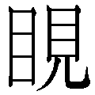
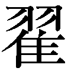
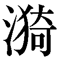
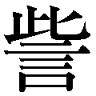
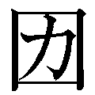
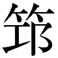
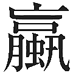

| ［新訳］鉄舟随感録 「剣禅一如」の精髄を極める | |
| 安部 正人 | |
| (2017) | |

［新訳］鉄舟随感録
「剣禅一如」の精髄を極める
安部正人・編著
渡辺 誠・編訳
史跡散歩を好む人ならば、山岡鉄舟という名は耳に触れたことがあるのではなかろうか。東京散歩の谷中コースでお参りすることが多い臨済宗のお寺、全生庵（台東区谷中五丁目）は、明治維新に殉じた人びとの菩提を弔うために、明治十六年（一八八三）に鉄舟が創建した寺院である。同寺には開基である鉄舟の墓はもちろんのこと、落語界で今なおその名人芸が語り伝えられる明治の噺家・三遊亭圓朝の墓がある。
圓朝は、鉄舟の薫陶を受けて芸を磨いた芸人で、数え年五十三歳で鉄舟が亡くなる前夜、詰めていた親類、剣の道における門人や知人たちの無聊を慰めてくれるようにと鉄舟に言われ、落語をその席で演じたが、名人圓朝の噺もさすがに涙にかきくれて途切れがちだったという。
鉄舟は少年時代から書道をよくしたが、その人間形成の根幹を成したのは、同じく少壮にして修行に入った禅、そして剣であった。彼は在家の禅の修行者、すなわち「居士」だったが、明治期の禅の高僧たちからその力量を高く評価されている。しかし、みずからは出家風に振る舞うことを嫌い、あくまでも「剣人」であるという自恃の念を終生失わなかった。
鉄舟の剣は、「降魔の剣」といわれる。人間の内面に潜む悪魔、すなわち不安や畏怖、要は妄想を「降伏」して、絶対的な安心の境地を掴み取るための剣を鉄舟は求めたのである。それはまた、「心胆の剣」だった、ともいえるであろう。彼が剣の修行の目的としたのは、剣刃上の勝負を争うことではなく、自己の心と胆力の錬磨であった。
鉄舟が「維新の傑士」として称揚されるに至ったのは、積年のそのような修行で培っていた精神力が、一瞬の光芒となって放たれたからにほかならない。
その精神の遍歴を窺い知ることのできるものとして、十五歳の時からの随筆・随感を収録した書が、『鉄舟言行録』という題名で、明治四十年（一九〇七）に光融館から刊行されている。
鉄舟をこよなく敬慕した安部正人（大分県人）が、みずから蒐集した遺稿とともに、鉄舟の高弟である男爵・籠手田安定（一八九九年没）の集めたものを加えて編集し、生前の勝海舟（一八九九年没）に聞き取った評論を付した書だが、『鉄舟随感録』は内容を同じくして、昭和十七年（一九四二）、宋栄堂より刊行された。
編述者にして、著者は安部正人であり、「緒言」に勝海舟評論、高橋泥舟校閲と明記されている。泥舟（一九〇三年没）は鉄舟の義兄である。「幕末の三舟」と称えられる三人が、奇しくもこの書では一堂に会しているのが、興味深い。
本書は、錚々たる歴史上の人物が関わっている、その『鉄舟随感録』収録の鉄舟の随筆、口述筆記の中から、現代の日本人の自己啓発に殊に資するものと判断した文章を取り上げ、現代語訳と原文に解説を付けた書である。訳文は補訳・意訳の箇所もあるが、おおむね、原文に忠実に訳した。原文は、旧漢字を新漢字に改め、読みやすいように句読点、ルビを付けたが、そのルビは現代用字とし、漢文は読み下しの読み仮名として、そのほかは原文のままにしてある。鉄舟の文章は、たとえば「猶」を「猶ほ」とする類の用例が散見されるが、原文を尊重することにした。
山岡鉄舟のプロフィールを述べた序章、その人物像に触れる言行を紹介した付録も参照していただけると幸いである。
［新訳］鉄舟随感録──目次
編集協力／細谷敏雄
装 丁／一瀬錠二
（Art of NOISE）
山岡鉄太郎高歩、号鉄舟は、歴史上の人物の人気ランキングで第一位を占めることが多い坂本龍馬の一つ年下の生まれである。龍馬は幕末史を華やかに彩り、三十三歳で凶刃に斃れたが、鉄舟が歴史の檜舞台に颯爽と登場したのは、その翌年の慶応四年（一八六八）の春三月のことであった。その演じた役どころは、江戸城の「無血開城」、すなわち、新政府軍（官軍）による江戸城総攻撃から中央都市の危機を救うという一大事の交渉役、というものだった。
黒船来航（嘉永六年〈一八五三〉）以来、欧米諸国の外圧に耐えかねて政権の保持に窮し、歩一歩と瓦解へと傾いていった徳川幕府のエピローグを飾った人物の一人が、身の丈六尺二寸（約一八七センチ）、体重二十八貫（約一〇五キロ）という巨躯ながら微禄の一幕臣にすぎなかった鉄舟なる漢である。
「戊辰戦争」という足かけ二年にわたった内戦は、鉄舟が三十三歳を数えたその年（慶応四年）の一月三日の「鳥羽・伏見の戦い」という、旧幕府軍と薩摩・長州を中心とする新政府軍との現・京都市南部における激突により、火蓋を切る。
この一戦に旧幕府軍が敗れると、最後の将軍（前将軍）の徳川慶喜は、自分に対する追討令が下される中、京都から海路を江戸に帰城し、月が明けた二月十二日、上野・寛永寺の大慈院に蟄居する。新政府総裁の有栖川宮を東征大総督とする新政府軍は、鋭意、東へと進軍する。
旧幕臣は、これを迎え撃たんとする主戦派と、天皇親政の新政府の命令に慎しんで従うべきだとする恭順派とに両分される中、ついに駿府（静岡市）の大総督府から、来たる三月十五日を期して江戸城総攻撃を行なうべし、という令が新政府の諸軍に発せられた。この時、すでに恭順の意志を固めていた慶喜の意を受けて、大総督府に赴き、乾坤一擲の折衝に乗り込んだのが、山岡鉄舟というサムライである。
『慶応戊辰三月駿府大総督府ニ於テ西郷隆盛氏ト談判筆記』という鉄舟の遺稿がある。
維新の際に功績のあった人びとに対して、明治政府の論功行賞が始められた時、過去を語ることが少なかった鉄舟は、その勲功調査に応じることを再三固辞したが、ついに右大臣の岩倉具視から直接に求められるに及んで、ようやく認めたものだ。ただし、勲功調査とは別途に、岩倉個人に呈した書だった。己の功を自慢気に述べ立てることを嫌った鉄舟は、歴史の「証言」に資するならば、という条件付きで呈上したのである。
以下、明治十六年（一八八三）記のその『談判筆記』（『鉄舟居士の真面目』圓山牧田編集・全生庵発行・大正七年・所収）にしたがって、細部は省略しながら、鉄舟の果たした大仕事を垣間見ることにする――。
上野の寛永寺に閉居していた徳川慶喜は、すでに朝廷に対する恭順の意を固めていたし、譜代の家臣たちに厳命していた。その趣旨に反しようとする者は「余に対して刃をふるうに等しい」とまで通達していたのである。
純粋なその思い、赤心をもって、こうして謹慎しているのだが、「朝敵」の汚名を着せられたからには、もう自分の命はおぼつかないであろうし、「これほどまでに人びとに憎まれることになったのは、かえすがえす嘆かわしいことだ」と、伺候した鉄舟の前で慶喜は落涙した。
そこで、鉄舟は「どうして、そのようなか弱いことをいわれるのですか」（原文「何を弱きつまらぬ事を申さるるや」＝平仮名の読み下しに改める）と述べ、「謹慎というのは偽りで、何か企まれていることがあるのですか」と問うと、慶喜は「どのようなことがあっても、朝廷に背かざる赤心を貫く」と答えた。
慶喜の強い決意を確かめた鉄舟は、「その誠の赤心のうえでの謹慎ならば、それは朝廷に貫徹して、もちろん疑念は晴れるはずですので、その役目は自分が引き受け、必ず赤心が朝廷に通じるように尽力いたしましょう」と言い、次のように断言したのである。
「この鉄太郎の眼の黒いうちは、決して、ご心配には及びませぬ」（「鉄太郎、眼の黒き内は、決して配慮有之間敷」）
その後、命をかけて大総督府に慶喜の赤心を伝える自分の考えを、鉄舟は一、二の重臣に打ち明けたが、「そんなことができるはずがない」と一蹴されたので、未知の人だが、かねて胆略優れた人物という評判を耳にしていた幕府の軍事総裁である勝海舟を訪ねて、粘り強く説得した末に同意を引き出す。そして、海舟の家に預けられていた薩摩人の益満休之助という者を同行（このことは海舟に請われて鉄舟が承諾したと述べられている）して、直ちに駿府へと向かった。
さて、六郷川（多摩川）を渡ると、すでにそこまで進軍していた新政府軍（官軍）の先鋒隊の兵が、銃を持って駐屯している。鉄舟はそのど真ん中を通行したが、一人として制止する者がいない。彼は宿営と思しき家に乗り込むと、隊長らしい人物に大声で、こう断った。
「朝敵・徳川慶喜の家来、山岡鉄太郎、大総督府へ通る」と。
宿営にいた百人ほどの人間は、一声も発することなく、鉄舟の方に目を向けたばかりであった。
それより横浜、神奈川、小田原を経て、益満を従えて昼夜歩きつづけた鉄舟は、駿府に着くと、大総督府下の参謀・西郷吉之助隆盛の旅営に行った。その名はずいぶん以前から聞き知っていたが、もちろん、一面識もない西郷に面会を許されると、彼は切々とおよそ以下のようなことを訴えたのである。
「わが主人の徳川慶喜は、恭順の意志をもって謹慎しているが、臣下の者に対する鎮撫が行き届かないために、朝廷のお考えに背いている者が多いかもしれず、無二の赤心（偽りのない心）が朝廷に通じないことを嘆いている。拙者はそれを大総督宮（有栖川宮）に言上し、慶喜の赤心を伝えるためにこうしてやって来たのである。先生（西郷）は、それでも江戸へと進軍されるのか。それでは、人殺しではないか。王師（帝王の軍隊）とはいえぬ。天子（天皇）は民の父母であり、理非を明らかにするのが、王師というものではないのか」
すると西郷が、「恭順の実際を示せば、朝廷より寛大な処置が下されるであろう（「恭順の実効さへ立てば寛典の御処置あらん」）」と言い、大総督宮に伺いを立てて戻って来ると、大総督宮より下された左記の五箇条から成る書を呈した。
一 城を明渡す事（「城」とは江戸城のこと）。
一 城中の人数を向島へ移す事（「向島」は現・墨田区向島）。
一 兵器を渡す事。
一 軍艦を渡す事。
一 徳川慶喜を備前へ預る事（「備前」は現・岡山県南東部）。
西郷はこの五箇条の「実効」が成立すれば、徳川家に「寛典」が下されるであろう、と言うのである。
鉄舟は「謹んで承りました」と言った後で、ただし、慶喜を備前に預けるという条はとうてい承服できぬ、と言った。なぜならば、「そうなれば徳川恩顧の臣がこれを受け容れず、ついには戦争が始まるし、その結果、数万の生命が絶たれることになる」からであり、その事態に至れば、「先生は単なる人殺しになるであろう」と言うのだった。
「朝命なり」と、西郷は頑に主張するばかりである。鉄舟は激しく食い下がる。彼はこんなことを言った。
「もしも、慶喜が先生の主人の島津公で、先生がこの鉄太郎の立場にあったならば、朝命を奉戴してご主君を差し出し、安閑として事を傍観されるか。どうですか」
この言葉を聞いて、西郷は黙っていたが、やがて口を開いた。
「先生（鉄舟）の説はごもっともである。徳川慶喜殿のことは、この吉之助が引き受け申した」
と、西郷は言い、あとは二人の間で酒が酌みかわされた。
それからの経緯は省くが、西郷から与えられた「大総督府陣営の通行の符」を手にして江戸城に帰ると、鉄舟は参政の大久保一翁（忠寛）、勝海舟たちに五箇条の書を示し、加えて、西郷との談判の詳細を報告したのである。
そして、江戸市中に高札が立つ。
その布告の大意は、左記の通りであった。
――大総督府下参謀西郷吉之助殿へ応接相済、恭順謹慎実効相立候上は、寛典の御処置相成候に付、市中一同動揺不致、家業可致。（『談判筆記』）
後日、高輪の薩摩藩邸で、勝海舟と西郷隆盛の史上有名な会談が行なわれる。その席には鉄舟も加わっている。
こうして、江戸は戦火を免れたのだった。
ところで、幕府の「微臣」、すなわち微禄の臣にすぎなかった鉄舟が、前将軍・慶喜に直々に面謁を許されたのみならず、今述べたような任務を単身遂行するなどは、世が世であれば考えられないことであろう。その命令系統の真実については諸説があるが、鉄舟の義兄・高橋泥舟（謙三郎）の存在を指摘する史家が少なくない。
鉄舟は浅草御蔵奉行、飛騨郡代を歴任した六百石の幕臣・小野朝右衛門（高富）の四男として生まれたが、二十歳の時、槍術の師である山岡静山（紀一郎）の死の直後、望まれて静山の妹・英子と結婚し、山岡家に養子入りした。泥舟はその英子の兄である。鉄舟より一つ年上の彼は、戊辰戦争当時、「遊撃隊」の頭として慶喜の身辺警護に当たっていたが、慶喜の恭順の意志を大総督に伝える大任を果たすことのできる人間として、義弟の鉄舟の名を挙げたのだという。
鉄舟は、それまでにもこの義兄の引き立てに与ることが少なくなかった。幕府が安政三年（一八五六）に設けた武術講習所である講武所の「剣術教授方世話心得」（世話人の見習い的な役）に、当年二十一歳の鉄舟が用いられたのは、同所の槍術の教授方十名の一人だった泥舟の力があったからであろう。
歳月は流れて鉄舟二十七歳の時、将軍・家茂の上洛に際して募集された、いわゆる「幕府浪士組」の取締役に任命されたのも、鵜殿鳩翁を頭とする「取扱」という立場に泥舟が列していたことが関わっていたものとみられる。
もっとも、この浪士組を組織することを幕府に献策した出羽・庄内の浪士・清河八郎と鉄舟とは、北辰一刀流千葉道場で同門であり、また、それが縁となって、清河がつくった尊王攘夷の有志の会の発起人に、幕臣ながら鉄舟は名を列ねていたから、その関係も大であったに相違ない。
翌年（文久三年〈一八六三〉）三月、浪士組は上京の途についたが、その途中、のちに新撰組を組織することになる芹沢鴨、近藤勇らの猛者を、取締役の鉄舟が気迫で圧倒したことは、新撰組関係の書によってよく知られている。しかし、戊辰の年までの鉄舟は、「粗暴」という噂を幕臣の間で立てられていたほかは、これといって特筆に値する存在ではなかったのである。
彼の雌伏の時代は長かったのである。
そうなると、高橋泥舟と結ばれた親縁は、鉄舟の生涯に重要な意味を持ったといえよう。さらには、その泥舟の実兄である山岡静山との出合いが、彼の人生を転換させる大いなる伏線となった、といえるのではないか。
静山は、忍心流という槍術をもって天下に鳴る士だったが、鉄舟が二十歳で師事した時は、七つ年上の二十七歳の若さであった。しかし、忠孝を旨とするその人格に、青年鉄舟は強く惹きつけられたのである。
――技芸によって、人に勝つにあらず。己の徳を修め、その徳に敵が屈するところを勝つのが武の道の真の勝ちというものである。
静山のこのような教えは、剣の道に心胆の錬磨を求めていた鉄舟の心を打った。
だが、鉄舟がその謦咳に接してから間もなく、静山は二十七歳で不慮の死を遂げる。鉄舟が夜な夜なその墓に参る日が続いたある日、激しい雷鳴の轟く夜、彼はその墓石に自分の羽織を着せ掛けて、
「先生、鉄太郎がお側に控えておりますゆえ、どうか、ご安心ください」
と、その巨体で墓を抱いてかばうようにしたという。亡き静山が雷をひどく嫌っていたからである。
静山に対する敬慕の念を窺わせる話だが、同時に、この話は山岡鉄舟という個性の「骨」をつくっていた性格を物語っている。
真に端倪すべからざる「馬鹿正直」、それであった。神々しいまでの正直さであった。
鉄舟といえば、剣禅両道の修行によって「剣禅一如」の精髄を極めた人という後世のもっぱらの評価であるが、その修行を支えたのは、一つには、この馬鹿正直さであったに相違ない。西郷隆盛が、唐突として談判をしに来た鉄舟の言説をついに受け容れたのは、捕縛も死をも恐れぬ覚悟、度胸もさることながら、何よりも、身体から溢れ出る正直さに心を打たれたからではなかったか。
その馬鹿正直とともに、もう一つ鉄舟の特性を挙げるとすれば、「負けじ魂」という言葉が思い浮かぶ。
鉄舟の負けず嫌いは、その剣の門人や知己の回顧談の中に数多く認められるのだが、その負けず嫌いを負けじ魂に昇華させて生きたのが、彼の真面目だったと思う。これを象徴する（と筆者が思う）話がある。
六百石取りの家に生まれて、父の赴任先の飛騨・高山（岐阜県高山市）では「陣屋の若様」と呼ばれた少年時代を送った鉄舟だったが、養子入りした山岡家は貧しかった。それまでは衣食に事欠くことはなかった彼が、ぼろぼろの古蚊帳に妻の英子と包まって、抱き合って寒さをしのぐ暮らしを強いられることになった。
家財道具はもとより、畳までほとんど売り尽くし、八畳の間に原型を失ったかのような畳三枚を残すばかり。その畳の上で三食を摂ることができるのは月に一日、二日ほどで、水だけで切り抜けることが半月つづいたこともあった。
赤貧洗うが如きこのような日々の中で、英子の初産になったが、彼女が横たわるべき蒲団がない。そこで、鉄舟は自分の羽織を英子に着せ掛けて、枕もとで看護をした。
夜中に英子が目覚めると、夫はこの寒空に褌ひとつの姿である。びっくりして彼女が着せられていた羽織を鉄舟に羽織らせようとすると、その手を押さえて彼は言った。
「心配するな、俺は今、裸になって寒稽古に入っているところなのだ」
やせ我慢を超絶した「負けじ魂」の発露を、そこに見るのである。
負けじ魂――という言葉は、今では死語と化した感がある。
日本人がどこかに忘れ去ったその「心」が、内憂外患を抱えた現代に見直されなければならないとしたら、正直、すなわち「誠」を貫いた山岡鉄舟の残した文章に学ぶところは、決して少なくないと考える。
 嘘をつかぬこと。
嘘をつかぬこと。
 主君の恩を忘れぬこと。
主君の恩を忘れぬこと。
 父母の恩を忘れぬこと。
父母の恩を忘れぬこと。
 先生の恩を忘れぬこと。
先生の恩を忘れぬこと。
 人さまの恩を忘れぬこと。
人さまの恩を忘れぬこと。
 神仏、年長者を粗略にせぬこと。
神仏、年長者を粗略にせぬこと。
 年下の者を侮らぬこと。
年下の者を侮らぬこと。
 自分が気の進まないことを人さまに求めてはならぬこと。
自分が気の進まないことを人さまに求めてはならぬこと。
 腹を立てるのは道から外れるものであること。
腹を立てるのは道から外れるものであること。
何事につけても不幸を喜ぶべきでないこと。
可能な限り善行に尽くすこと。
まわりへの配慮なく自分勝手に行動しないこと。
食事のたびに家計の艱難に思いを致し、草・木・土・石に至るまで、これを粗末にしないこと。
着飾ること、見えを張るのは、心の濁りのためであると知ること。
礼儀を乱さぬこと。
どのような人に接しても、いつも「お客さま」に応接する心づもりであること。
自分が知らぬことは誰にでも学ぶこと。
名誉・利益を目的に、学問・諸芸を嗜まぬこと。
人には得意不得意があるから、その人全体を否定したり軽蔑したりしないこと。
自分の善行を得々と吹聴せず、自分の心に恥じぬように努めること。
【原文】
一 うそいふ可からず候
二 君の御恩は忘る可からず候
三 父母の御恩は忘る可からず候
四 師の御恩は忘る可からず候
五 人の御恩は忘る可からず候
六 神仏並に長者を粗末にす可からず候
七 幼者をあなどる可からず候
八 己れに心よからざることは、他人に求む可からず候
九 腹を立つるは、道にあらず侯
十 何事も不幸を喜ぶ可からず候
十一 力の及ぶ限りは、善き方につくす可く侯
十二 他をかへりみずして、自分の好き事ばかりす可からず候
十三 食するたびに、かしよくのかんなんを思ふ可し、すべて草木土石にても、粗末にす可からず候
十四 殊更に着物をかざり、或はうはべをつくらふものは、心ににごりあるものと心得可く候
十五 礼儀を乱る可からず候
十六 何時何人に接するも、客人に接する様に心得可く候
十七 己れの知らざる事は、何人にてもならふ可く候
十八 名利の為に、学問技芸す可からず候
十九 人にはすべて能不能あり、いちがいに人をすて、或はわらふ可からず候
二十 己れの善行をほこりがほに人に知らしむ可からず、すべて我が心に恥ぢざるに務む可く候
解説
「修身」は時代錯誤ではない
山岡鉄舟、数え年十五歳の覚書である。嘉永三年（一八五〇）正月の執筆だから、父の小野朝右衛門高富が飛騨・高山の天領の郡代として赴任していた間のことである。
鉄舟こと小野鉄太郎には、上に腹違いの兄姉五人、下に同腹の弟五人がいた。その大家族が住んでいた同地の代官屋敷、通称「陣屋」の居宅（同市東山寺町）での執筆に成る。
雪深い高山の極寒の正月、今でいうと中学二年生前後で、自身に課した簡潔な「人生訓」ということになる。
旧制の学校には「修身」という教科があった。
明治十三年（一八八〇）に文部省が『小学修身訓』（西村茂樹編）なる教科書を採用してからのもので、戦後にそれが廃止されたのは、孝行、勤勉といった徳目が、天皇への忠誠心の涵養を軸として説かれていたからによる。
そもそもは、儒教の経書『大学』中の「修身斉家治国平天下」から取られた語である。家庭を平和にして、次いで国を治め、次に天下を治めるのが順序だが、まずは自分の行ないを正し、一身を修めととのえることが人としての道だというのである。
現代では、ほとんど死語となったかに見える言葉だが、至極あたりまえの筋道であって、教え示していることは時代錯誤ではない。自分の脚下、土台をまず固めておくことが、無人島の住人の生き方を望むのならばいざ知らず、社会人の基本として求められることになる。
馬鹿になることは難しい
鉄太郎少年は、あたりまえの筋道を歩んでいくべく、あたりまえの訓ばかりをここに書き付けたのであろう。そして、書き付けたからにはこれを実践するのがまた、あたりまえのこととしたのが、鉄舟の真面目で、勝海舟の評論によれば、すなわち「馬鹿正直」たるゆえん、ということになるのである。
あたりまえのことを言う、そして実行することは難しい。「利巧には成り易いが、馬鹿になるのは六ヶ敷もの」（海舟）なのが、人間だから。
勝海舟が着目した四つの規則
「正宗の名刀も、元は『ナマクラ』な鉄だよ。〔中略〕段々と錬り上げて、初めて名刀になるものサ」とは海舟の言だが、「修身」とは畢竟、自分を錬り磨くための道しるべであろう。
その海舟は、鉄舟の修身二十則の中でも、の「腹を立てるのは道から外れるものであること」、「何事につけても不幸を喜ぶべきでないこと」、「可能な限り善行に尽くすこと」、「〔前略〕自分の心に恥じぬように努めること」の四則を「骨肉」として、そのほかは「皮」にすぎない、と言っている。
現代の教育に欠けているものとは
ここに掲げてある二十則のすべての実践を自分に課すのが、現代人には容易ならざることだとしたら、個々人によって重みづけをすることが大切であろう。
目を現代の教育に転じると、最もそこで教えられることが少ないように映ることは何だろうか。
の「年下の者を侮らぬこと」、「自分が気の進まないことを人さまに求めてはならぬこと」、「まわりへの配慮なく自分勝手に行動しないこと」、「人には得意不得意があるから、その人全体を否定したり軽蔑したりしないこと」――以上の四則が稀薄な感じを受けるのは、一言でいうと、思いやり、他者の尊厳に対する不感症からくる弊害が目立つからだろうか。
学校における「いじめ」、職場におけるパワーハラスメントなどなど、この四則を噛み締めねばならない事象があまりにも多い現代である。
訳文
たとえば、千里に及ぶ長い堤防も、蟻の穴によって壊滅することがある。百尺もある高い楼閣も、火打石の火で泥と炭と化してしまうことがあるとは、物事の道理にきわめて適った格言である。
だから、絶頂に抜きん出る者は、必ずまた、どん底に陥る用心をしておくものである。そうでなければ、誠実一筋の人生も貫徹することはできまい。また、事業を企てても、それは永遠には継続しまい。
戦国時代の昔の話である――。
後北条氏四代の北条氏政が合戦の最中、ある時、本陣の前を農民が生麦を担いで通り過ぎるのを見て、すぐにこれを取り上げて炊こうとした。折しも傍らにいた武田信玄は、氏政が豆と麦との見分けがつかないことに、心の中で嗤ったという。
あまりにもお粗末な氏政の行実である。彼が関東の八州に君臨し、十万の兵を統率する大将の身でありながら豊臣秀吉のために滅ぼされたのは、それだからであろうか。
そこへいくと、氏政の祖先の北条早雲は、心がけが違っていたのである。早雲が儒者に『六韜』という中国の兵法書を講義させた時のことだ。その儒者が「大将たる者は、まず人心を収攬することが大切であります」と説くと、早雲は「講義は中止せよ。そんなことはとっくに承知しておるわい」と言った。
彼が心を用いる機微に通じていたことは、大体、この一事からもわかるであろう。
早雲は独りで身を立てて、関東八州の人民をなびき従わせた人物だ。
創業者の早雲と、滅亡した氏政との人間としての用意は、このようにまったく相反しているのである。
世俗にいわく、「自分の些細な行ないを顧みる必要はない。自分のわずかな言動を省みる必要もない」と。
戯言にも程がある。こんなことを言う輩は、英雄の物にこだわらぬ側面を、遠くから見ているだけである。その事蹟の内なる苦心がわからないから、そのような戯言を吐くのである。
天性英知にめぐまれ、快闊な人柄だった豊臣秀吉公ですら、日常の立ち居振る舞いに自戒するところがあった。豪放不羈をもって知られた加藤清正や伊達政宗ですら、修身の規範を自分に課すことで、武人としての生き方を養い育てたのだ。黒田長政や池田光政といった武将も例外ではない。
これらのことを参考に、英雄の本質について私なりに深く考えてみると、「大きなことを成し遂げるには、小さなことを大切にしなければならないこと」「高い所へと向上するには、低い所をなおざりにしてはならないこと」に気づくのである。
高くて大きな山に登って、この世界の大いなるものであるのを知ること。青海原に浮かんで、河川の小ささを知ること。この二つのことがそのように異なる理由をわきまえることは、非常に簡単なことであろう。
この世界の何ものも、荒削りで大雑把なものから出発しているものがあろうか。それゆえ、日々、心細やかにして慎み、馬鹿正直に勤めることもまた、人生行路の羅針盤といえるのではないか。
【原文】
譬へば千里の堤防も、蟻穴より潰え、百尺の高楼も、燧火の為めに塗炭となると云ふ事あり。至極道理に称へる格言なり。されば其心を用る事、九天の上に出るものは、亦必らず九地の下に入る。然らざれば、至誠の大道も、貫徹する事能ふまじ。将たまた事業を企つとも、永遠には続くまじ。
昔、北条氏政、陣中に於て、会々農夫生麦を担ひ、陣前を過ぐるを見で、直様取つて之を炊がんとせしに、折しも信玄、傍に在り、窃かに其菽麦を弁ぜざるを嗤ひしと。扨ても斯くとは余り粗々かしき事なり。さればにや、彼身は八州に君臨し、十万の兵を叱咤するの将たりしも、哀れ豊臣氏の亡す所となれり。彼の祖早雲、儒をして六韜を講ぜしむ。曰く、将たるものの要は、先づ人心を収攬するにありと。早雲曰く、講ずるを休めよ、吾既に了せりと。其用心の機微に入ること大準然り。是を以てにや、彼れ孤剣蹶起して、八州を風靡す。創業と覆滅と、其人の用意、正に相反する事斯の如し。世俗謂ふことあり。細事は顧るに足らず、微言省するの要なしなど、囈語も程ある事なり。此輩は、英雄の事蹟磊々落々たるを遠見して、未だ其内裡に潜める苦心惨憺の情あるを弁へざるが故なり。
天性英智、天空海濶、一世を睥せし豊閤にして、猶ほ起居の戒あり。豪放不覊の清正、政宗の如きすら、亦修身規範の以て士道の涵養を怠らざるあり。此外、長政、光政の如き、皆然らざるはなし。彼是参じて、吾れ其理の存する所を案ずるに、大をなすものは必ず小を詳にせざる可からず、高を致すものは卑よりせざるベからず。泰山に登つて天下の大を知るもの、蒼瀛に浮んで江河の細を覚るもの、其何に由つて爾く相異なるかを弁ずるは、甚だ容易なる可し。然らば即ち天下、何物か始より粗蕩豪放を以て成る者あらんや。平生小心翼々、馬鹿正直に勤め置く事も、亦実に人生行路の羅針盤なる哉。
解説
「小心翼々」として生きること
これも少年期の随筆と推考されている。
ここにある「用心」とは、現代の言葉に置き換えると、「危機管理」に限りなく近い意味を持っている。組織と個人とを問わず、小さな事をゆるがせにしないこと、それが用心の核心であり、危機管理の鉄則だ、と鉄太郎少年はみずからに言い聞かせたのである。
その結びの言葉が最も傾聴するに値する。いわく、「平生小心翼々、馬鹿正直に勤め置く事も、亦実に人生行路の羅針盤なる哉」と。
英雄は「胆大心小」を知る
山岡鉄舟と西郷隆盛を、世人は「東洋流の豪傑」と見做しがちだが、それは「望遠鏡」で彼らを見るからだ、と勝海舟は言っている。
話がある――。鉄舟は、手紙を書く時はいつも下書きをした。そして、清書の後にくるくると巻いたそれを、また広げて読み直してから状袋に入れた。下書きでできた反古は、細かく裁断して、紙縒りにしておくのである。だから、机の下には、いつも紙縒りの束が積まれていたという。
豪放な逸話が多く伝えられている彼には、このような細心な側面があったのだ。他愛ない話のようだが、これが「平生小心翼々」の心得というものであろう。
「小事を処理するは、商売小僧の如く、大事は万軍を叱咤する将たる如し」と、鉄舟は海舟に語ったことがあるという。
「胆大心小」を知るのが、英雄豪傑の常ということだ。
危機管理に求められる「根気」
このようなことは、現代のスポーツ、将棋や囲碁などの世界でもよく耳にする。一流のアスリートや勝負師は、小さな事、細かい事を大切にするもののようである。
将棋の羽生善治氏といえば、本年（二〇一二年）七月二日、「昭和の巨人」と称された故・大山康晴十五世名人の大記録を、満四十一歳で三十年ぶりに塗り替えた人だ。七つあるタイトルの通算獲得数を八一期とする新記録を達成したのである。
斯界では、雲の上の存在である羽生二冠（記録達成時現在）は、しかし、少し前に行なわれた第七十期の名人戦で森内俊之名人に挑戦して敗れている。その敗因をご自身が分析して語った記事（朝日新聞二〇一二年七月三日付）に、次の談話が載っている。
「小さなミス、判断の狂いが勝敗を分けた」
「結論を急がずに粘り強く、もう一歩踏み込んで、掘り下げて、考えるべき場面がいくつもあった」
勝負を超えて今や将棋の真理を突き詰める、という境地にある大名人の言う「小さなミス」は、おそらくプロ棋士にもわかる人は少ないのではなかろうか。それはともかくとして、小さなミスを犯さないようにするには、「粘り強く」対処しなければならない、ということをこの言葉に学びたい。
危機管理の鉄則、小さな事をゆるがせにしない呼吸を逸しないようにするのは、畢竟、この粘り強さ、一言でいうと、根気が求められるのかもしれない。
訳文
人の一生とは、重い荷物を背負って、遠い道を歩いて行くようなものである。不自由をあたりまえのこととして、いつも受け入れるならば、不足が生じることはない。欲望が心に芽生える時は、過去の困窮していた時のことを思い出すがよい。
堪え忍ぶことこそ、無事に長く身を持していくための基本である。堪忍袋の緒を切って怒ること、それは一身の敵にほかならないと思うべきである。
成功だけを知って、失敗を知らないと、危害をこうむることになる。
自分に厳しくあれ。他人を責めるな。
物事が不十分なのは、過分であることより勝るのである。
※
不肖鉄太郎は、幸いに徳川将軍の臣下の末流に加えられ、感謝の極みと思うところである。
今、右に掲げた東照宮家康公の御遺訓を謹んで拝するに、これこそは真に普遍的な格言というべきだ、と念じるものである。
人間である限り、この格言のいわんとすることを大きな事に活用すれば、天下万民のリーダーとなり得るに相違ない。
小事に用いれば、自身と一家の秩序を保つことができよう。実に感服・感嘆させられる御遺訓だ。
自分は以下のことを思う――。
武士たる者は、主君に奉公する立場にあって、常に死を直視する不動の意志を持つべきだ。そうであってこそ、初めて忠義を尽くすことができるのである。
ここで重要なことは、不動心ということ、心が動じないということだ。だから、そのためにはまず、心を修めることを着実に積み重ねていかねばならない。
こう思った自分は、十三歳の頃だったが、父にその方法を質問したところ、こう答えられた。
「わが家の祖である朝右衛門高寛は、剣法を一刀流の小野治郎右衛門（忠明）、また、『小太刀半七』という異名をもつ鹿島神道流の剣者（一説に本名・坂井半七）に学ぶとともに、禅理の極意を究めた。そして家康公、秀忠公と二代にわたって将軍に仕えて、しばしば戦功をあらわしたのだが、常にその旗に『鋭利な名剣の如き人間本来の心を全く動かさない』という意味の五文字、すなわち、禅語『吹毛不曾動』を大書して、これを携えたものである。お前が武士としての道を全うしたいのであれば、剣と禅とを修行し、邪念に動かされない静かな心境、つまり『明鏡止水』の境地に達してのちに、大成を期することである」
この鉄太郎は至らぬ人間だが、どうして修行しないでいいものか。
どうして、東照宮の御遺訓を謹んで承らずにいられようか。
【原文】
人の一生は重荷を負て遠き道をゆくが如し。いそぐべからず。不自由を常と思へば、不足なく、心に望みおこらば、困窮したる時を思ひ出すべし。堪忍は無事長久の基。いかりは敵と思へ。勝事ばかり知りて、まくる事を知らざれば、害、其身に至る。おのれを責て人をせむるな、及ばざるは過ぎたるよりまされり。
不肖鉄太郎、幸に大君の麾下末流に列するを得、感謝至極に存ずるなり。謹で御遺訓を拝するに、真に千古不磨の格言と云ふ可し。苟も人間たらんものは、此心をして、之を大に用ふれば、天下万衆に長たるを得ん。之を小に用ふれば、即ち一身一家を斉ふ事を得べし。感服三嘆。
余思ひらく、苟も士の君に事ふるや、常に死を視る事帰するが如く、確乎として其志を動かすべからず。而して後、始めて能く忠を尽す事を得べし。其要は心を動かさざるにあり。故に先づ修心の実を積まざる可からず。是を以て我れ年十三の頃なりき、生父に就て其法を問ひしに、曰く、吾家の祖、高寛君朝右衛門、剣法を小野治左衛門（正しくは治郎右衛門）、小太刀半七に学び、又、禅理の蘊奥を究め、以て東照、台徳の二公に仕へ、屡戦功を著し、常に其旗に「吹毛不曾動」との五大字を題し、以て之を携ふ。今汝武道を全からしめんと欲せば、須く剣と禅とを修め、心を明鏡止水の境に達せしめ、以て後日の大成を期せよと。鉄太郎、不肖と雖も、豈修業せざる可けんや。豈謹承せざる可けんや。
解説
家康の遺訓と少年鉄舟の発心
鉄舟二十二歳の時の文章である。時に小野家から山岡家の婿養子となってから二年後の安政四年（一八五七）、日米修好通商条約調印の前年。『東照宮御遺訓』は、徳川家康を顕彰するために後世に創作されたとするのが通説だが、鉄舟もまた、その評論をしている勝海舟も、家康の遺訓であることに全く疑問を呈していないのは、幕臣として当然であろう。
大切なのは、家康という希代の創業者の人生・精神を読み取るのに、いかにも適した遺訓になっていることであり、考証はあまり意味がない。
その遺訓についての所感に、鉄舟は自己啓発のための法として、剣と禅を修めるべきことを父から教えられたと述懐している。それが現代の小学六年生くらいの数え年十三歳の時だった。
鉄太郎少年が抱懐した問題意識とは何だったか。主君に仕える武士として、言い換えれば、徳川幕府という組織の一員として本分を尽くすには、常に死ぬる覚悟を不動のものとしておかねばならぬが、そのためにはどうしたらいいか、という一事であった。そして、父の答えは、剣禅修行のほかになし、というのだった。
剣と禅を己の土台として生きた鉄舟の原点をここに見るのだが、家康の遺訓に触れて、そういう修行、自己啓発の道を発心したことに注意しておきたい。
ゆっくり、弛まずに生きる
鉄舟が子ども心に、「千古不磨」の格言と受け止めた「御遺訓」についての海舟の評論は、さすがに透徹した眼力を感じさせるものだ。
この垂訓には、「事物に両面のあることが説かれてある」と、海舟は述べるのである。すなわち、物事は楽と苦、善と悪、得（欲）と損、長と短、過と不足、忍と怒、勝と負、それぞれが一対になっているものだ、というのである。
だから、何事に対応するにも、逸ってはならない。急いで結論を出してはならない。そうすると、必ず「失点を出来す」、つまりは失敗するものだ、と彼は言う。
それゆえ、「重荷を負て遠き道を行く」こと、一歩一歩着実に歩む忍耐が人生には求められることになる。
ゆっくり、さりとて弛むことなく生きていくことをすすめるのである。
少子化時代の高齢者への訓戒
現代は、カオスの時代といわれる。混沌としていて、人生行路の羅針盤が見つかりにくい時代である。
このような世には、重い荷物を背負って遠い道を歩んで行くような心が、より強く求められる。目先の損益ばかりにとらわれて、ガツガツとせっかちに行動する人間は、カオスの陥穽にはまって、やがては、のたうちまわって自滅する確率が高いので、用心しなければならない。
このような人生の知恵を次世代に伝えるのは、老人の教育上の存在理由の一つであろう。だが夫子自身、早々と重荷を投げ出して生きる見本を示すかのように、ひたぶるに我欲の成果を性急に求めて老醜を曝し、精力的に「老害」を撒き散らしてはばからない、えげつない高齢者が、少子化の当節にはびこる一方なのは、悲しいことであり、国にとって忌々しき問題ではなかろうか。
この遺訓は、現代の「老いの生き方」への訓戒として受け取ることもできるのである。
訳文
家康公が忠臣・本多忠勝殿に垂訓されたことを以下に列記する――。
怒る気の中に耳を開く主人もなし
「金言耳に逆らう」とは、ややもすれば金言が人の感情を損ない、耳に聞き入れられないことをいう。「良薬は口に苦し」とは、よく効く薬は苦くて飲みにくい、という意から転じて、身のためになる忠言が聞きづらいことをいう。このようなことは子どもでも知っているようだけれども、大名歴々はその真実の教えを理解していない。
そのわけとは――。
数多くの家来にもてはやされるので、大名はふと、いい気になって、自分を見失い、何事につけても勝手放題になることがある。そのような時、そのほう（本多忠勝）のような臣下が諫言すると、聞くや否や、わけもなく立腹し、臣下の真情が裏目に出るものだ。それゆえ、むやみに臣下の者を憎らしく思い、大名は理非曲直を分別する目が眩む次第となる。
しかし、よくよく我に返って気を静めてみると、確かに家のため国のためになることには変わりないのだから、「これは自分のわがままというものだ、こんなことに負けてはだらしないぞ」と、諫言をまるごと呑み込めば、怒りも静まり爽快な気分になるものだ、
さて、世の中を見るに、身を捨てて良薬を差し出す臣下もいない、怒気を覚えながらも臣下の言に耳を開く主君もいない、そのような家臣、主君がいるとしたら、天下に稀に見る人材というべきである。
知恵の自慢ある程は夜の九つ時なり
愚かな人間、器量の小さな人間というものは、他人の悪しき点を手本としてあげつらい、「俺は彼ほど駄目ではないな」などと言うものである。
君子は他人の良い点を手本とするのであって、悪しき点は初めから問題にしないものである。
昔の聖人・君子には及ばないとしても、自身驕ることなく行動することだ。自分一個の知見、知恵を自慢する段階は「夜の九つ時」、すなわち修行の中程にすぎない。
心根に恥じて、我身を嗜むべし
自分の妻子・家来に至るまで、まわりの人間の気持ちを察し、「このように思っているのではないか」と推し量ったうえで、その思いやりの心に恥じぬようにと、自分の行ないをたしなめるようにするべきだ。
自分勝手な思いに走り、自由気ままに振る舞うと、人は放逸になってしまい、やがてまわりの人間は離れていくものである。
歴々の物識り、一句も我物にあらず
書物を読むことは、自分の行ないを正すためなのだ。一言一句も自分の心に引き付けて受け止め、傾聴すべきことはその通りに実行することである。
大名歴々には物識りがいるが、一言一句も身についていない。
評論するならば、彼らは物識りというだけであって、その知識は何の役にも立たない。
大道中の如く何も角も通る工夫あるべき事なり
生まれつき優れた人間は少なく、多くは百人並み、千人並みの凡人であるのが世の中というものだから、大工が墨縄と曲尺を当てて材を品定めする式では、人材はたいてい見出せない。
そこで、二つの目の付け方がある。一つは、大工が適材を適所に用いるようにすること。もう一つは、どのような人材でも、大いなる道中の一員として通用するように工夫することだ。
男に賢人のなきが如く、女にも尚稀なるべし
どう考えても、女は賢いほど、至らぬ点もあるものだ。賢くあって欠点のない女もいないとは限らないが、そのような「賢女」は昔から少ない。
男に賢人があまりいないように、女にもその型はさらに稀にしか見当たらない。
だから、密談の内容などを、決して女に聞かせるべきではない。
愚人であるように心得て、それぞれに対応するのが無難である。油断すると、女に気を取られて、悪しき事の火種となるものだ。
大家ほど、家来に心を付くる事第一の儀なり
主人が家来に加増する時、褒美を取らせる時、過分なものにならぬように配慮するのは、非常に愚かなことだ。加増、褒賞の理由さえしっかりしているのならば、二倍与えても万事問題はない。
賞することなく、いつも罰するばかりでは、家来の心は迷い、離れて、ついにはその家が傾いてしまう。とかく、大きな家であるほど、家来に心配りすることが最も大切になる。
家来の心が離れていくのを、力ずくで押し止めようとしてはならない、と自分（家康）は思う。
孟子を能く味わうべし
自分は読書を好むが、天下国家を治める者は「大学」「中庸」の『礼記』二編と『論語』『孟子』を合わせた儒教の「四書」を読まねばならない。しかし、時間がかかるようであれば、『孟子』を味読せよ。人によって様々だろうが、自分はそう思っている。
――（中略）――
武士は成程武士臭く、味噌は成程味噌臭くあれかし
男は、男の心意気を保っておくことがよいのである。侍たちが女や子どもに気を抜かされて、なよなよとしたいわゆる「業平侍」（平安前期の歌人・在原業平のような好色の美男子風の侍）となり果てた者をよく見るが、そんな風潮の者を自分は嫌うものである。
昔から「武士の武士臭き、味噌の味噌臭きは必要ない」という説がある。下世話な諺ではあるが、その説は武士以外の者の見識であろう。きっと公家、町人の評論であろう。
武士はやはり武士臭く、味噌はやはり味噌臭くありたいものだ。
武士が何臭くあればいいというのか。公家臭く、坊主臭く、職人臭く、いっそ百姓臭くあればいい、というのか。
味噌が、生臭く、焦げ臭く、血なまぐさく、腐った臭いであって、何がいいものか。味噌本来の臭さがあってこそ、よろしいのである。
武士は武士臭くないのがいい、というのは、武士嫌いの者が口をすべらせた説であろう。そんな奴は褌をはずして腰巻を着けるがよい。
このような手合は、畳の上のことを習うばかりの日常を送っているので、「常在戦場」の心構えがない。
大事の場に直面して、そのような心であっては、したたかな行動に出ることはなかなかできないものだ。そこで恰好をつけるのは必定のことであって、自分はそれを常に嫌うものである。
また、「日常はともかくとして、イザという時は、武士としてのひととおりの風儀を示すことができる」という者がいるが、それは平常の武士道を心がけぬ言い訳だ。身の至らぬ点を取り繕っているのであって、極まるところ、武士の道を厭わしく思っている者の言葉以外の何物でもない。
思慮浅い大将は、部下のそういう風潮を放置しているものだ。日常の心がけなくして、火急の場にあって成し遂げられることは何もないのである。
自分は諸国の侍の正義と不義、剛勇と臆病にまつわることをよく吟味して聞くことが、幼少の頃から好きだったので、あまねくこれを耳にしている。そのうえで言うならば、天地が尽き果てても、武士が存在する限り、今述べたような道理の廃れることはない。
常に武士道を心がけるということを卑近な証拠で示すと、お灸は飛び火の何十倍の熱さでありながら、女、子どもさえ見事にこれに耐えることができる、ということだ。飛び火は、覚悟なき時に不意を衝かれるものだから、髭を生やした豪傑でも魂消る。お灸は、覚悟をもってこれを受けるので耐えられるのが、その証拠である。
武士たる者は、一本槍の小身者でも武士としての心を気高く持つように、早くも十二、三歳からこの心がけであるようによく言い聞かせることだ。
その教えが伝わらない子どもは、坊主か町人にしてしまえ。そのような者が武門に属しているのは、この日本の病になる本である。
三要、三切、三行
自分は駿府（静岡市）にいた若い頃、三哲という学僧から、「三要」と「三切」という言葉を聞いたことがある。
三要とは、衣・食・住のことで、それぞれの物は人びとにとって常に入用のものである。
三切とは、戦のための道具、旅を行なうための道具、そして、客をもてなす道具の三つであり、これらは武士にとって大切なものだ。これらの品々を分相応に備えたうえで、そのほかのことを為すべきことを、その僧は教えたのである。
よく言われるあたりまえのことだが、一言一句が役に立つ教えであり、自分は幼心にも肝に銘じたものだ。
今になって加えるとすれば、「三行」ということも大事である。
三行とは、道、芸、倹のことだ。
武士は道理に疎くあってはならぬ。道義を第一のものとしなければならない。また、道を志して賢人の位に達した者でも、武芸を身につけておかなくては、戦の役に立たない。それから、やりくりができないために貧窮のうちに死に果ててもならないのである。
※
不肖鉄太郎は、武士道についての家康公の以上の遺訓を謹んで拝し、徳川の創業につらつら思いを馳せる時、以下のことを考えるものである。
今からほとんど三百年前の時代は文明未開のために、政治の制度や法律から器械、工芸に至るまで、あまり精緻なものはなかったけれども、人間が自身を修め、心を養う道は、後世に伝えるのに足るものが、整然としてその時代に開かれていたのである。
神君・家康公はこれを名づけて、武士道と言われたのである。
真に至当な言葉であり、この鉄太郎もその道を武士道と言いたいのだ。
それは天地開闢以来、連綿として継承されてきた普遍的な道である。それゆえ、この心を修めて発揮するならば、人は忠勇、義烈の士となり、寛容で人情の厚い人間になることができる。
わが神君には、最も深くこの武士道が浸み込んでいた。だから徳川三百年の泰平、否、皇国の長き歴史の偉大な功績は、ひとえにこの道を根底としたことによるのは疑いないことだ。
鉄太郎は、坐して静かに思いをめぐらしつつ、御遺訓の教えの細部を味わうにつけても、それは国家の盛衰、道徳の興廃に関わらぬものは一つもない。
ああ、今の世は道徳が衰え人情が浮薄な時代になるにしたがい、武道に疎く、文事にばかりとらわれる弊害がしだいに顕著になっている。
泰平の世の長い夜の夢がまさに絶頂に達した折しも、アメリカのペリーという人が、わが国に通商貿易を求めてきた。ここに及んで、国中がその声のために夢から醒めて、人心は恟々としている。
自分はひそかに思うのである。――今こそ、武士道の再興の好機、立派な男たちが恩に報いる時が到来したのだ、と。
どうして、この自分が勤め励まないでいいものか。どうして、心を錬らずにいられようか。
【原文】
仰せられけるは、金言耳に逆ひ、良薬口に苦しと云ふことは、子供も知ると雖も、実は歴々も知らぬなり。其故に大名が多数の家来に持囃され、不図、乗気になり、我心をも取留めず、何も角も気儘になり行くなり。時に其方抔の様なるものありて、諫言すれば、聞くや否や、無性に腹を立て、此方の情に逆ふ。故に滅多に憎成て、眼昏む程になり行くなり。然るを能々心を取返し、気を鎮めて見れば、慥に家の為め国の為めに替られず、扨も是が我儘哉、之に負けてはムザとしたる事ぞと、気に勝つと苦しけれども、一に呑んで見れば、怒熱の情も静になり、快気すとなり。扨て世上に事の欠けたる事は、身を捨て薬を捧る臣もなく又、怒る気の中に耳を開く主人も無し。若し有らば天下の稀者との御意なり。
又御意に、愚人小人と云ふものは、他人の悪を手本として、何某は箇様箇様なり、我は夫程はなしと云ふ。君子は他人の能を手本として、悪をば始より取上げず。何としても古の聖人君子には及ばずと、身を慎み行ふなり。兎角知恵の自慢のある程は、夜の九つ時なり。
又御意に、我妻子、家来迄も、其情を察し、斯くこそ思ふらめと推量して、其心根に恥ぢて、我身を嗜むべし。何思ふとも、角と思ふとも、我は我次第と、気隨に任せて振舞ふ時は、放逸になり、後には必らず人を取失ふものなり。
又御意に、物の本を読む事は、身を正しくせん為めなり。うつし心にて読めば、強ち何の用もなし。一句見ては、我心頭に引受け、一言聞いては、其儘用ゐる筈なり。歴々の物識り、一句も我物にあらず。之を論ずれば、只物識りと云ふ迄にて、何の役にも立ぬなり。
又御意に、天性勝れたるは少なく、大方百千人並なる者なり。然るを能く墨縄曲尺を当て去り、嫌ふては、人は大方なきものなり。これに二ッの目の付け様あり。大工の木を遣ふ様に、夫々に用ゐ、又、大道中の如く何も角も通る工夫あるべき事なり。
又或時御意に、何と見ても、女は賢き程、済まぬものなり。賢くて能く済む女も有間敷にも限らず。左れど、そは賢女とて、昔より少なき事なり。男に賢人のなきが如く、女にも尚稀なるべし。必ず物の密談など聞かす可からず、只愚人同前に心得て、夫々相応に育てよ。油断すれば気を取られて、悪事の種となるものなり。
又御意に、主人が家来に加増を与へ、或は褒賞など取らするを、其分に過ぎる様に覚えては、大なる愚痴なり。加増を遣はし、褒賞を与ふ可き筋道の事にて遣れば、夫れに倍して万事能く調ふものなり。常に賞なく、罰のみある時は、家来の心迷ひ離れて、後には其家傾くものなり。兎角大家ほど、家来に心を付くる事第一の儀なり。家来の心離るゝを、力業なんどにて能くする事は、我は成間敷と思ふなり。
又御意に、我れ好んで書物を聞くに、天下国家を治むるものは、四書を能く見聞せずんば成らざる事なり。是も長々しき事にて成らずんば、孟子を能く味ふ可し。但し人にも因らんずるが、我は左様に思ふなり。
――〔中略〕――
又御意に、男は男の心持たるが善し。歴々のものが、女童に気を奪はれて、業平侍となると見えたり。左様の風有之ものは、我堅く嫌ふなり。昔よりの説に、武士の武士臭きと、味噌の味噌臭きは、イラヌ者なりと、下劣の諺には云ふなれども、夫は脇より見ての事にてやあらん。定めて公家か町人の評判なる可し。武士は成程武士臭く、味噌は成程味噌臭くあれかしとぞ思ふ。武士は何臭くてよからんや。公家臭からんか、出家臭からんか、職人臭からんか、寧ろ百姓臭くて善からんか。味噌も腥臭くても焦臭くても血臭くても、腐臭くても、何が善からん。只味噌の生得、味噌臭きが善かるべし。右の武士は、武士臭くて善からぬと云ふ説は、武士嫌の者が、風と言出したる事なるべし。左様のものは、褌を除けて、「キヤフ」を呉れたし。是、平生畳の上の事を習ふて、肝腎の大切の時は、其様なる心にて、強き事は中々ならぬ者なり。其時は身の繕ひをする事必定なれば、我常に嫌ふなり。又、一通の風儀は常は兎もあれ、自然の時はと云ふ者あり。夫は平常武士道不心懸の言訳にて、非を飾ると云ふて、極意は武士の道嫌ひ、不心掛の言葉なり。夫を立置くは、不吟味の大将の下にある事なり。常に心に掛けずして俄に成る事は更になし。我幼少より、諸国の侍の儀と不儀と、剛臆と、好く吟味して聞く事好きなる故、普く聞及びたり。天地を尽しても、武士のあらん限りは、此道理廃るまじ。常に心懸と云ふ事は、手近く手軽き証拠を以て云はゞ、灸は飛火の十双倍なれども、覚悟する故に女童も見事耐ゆるなり。飛火は覚悟もなく不意なる故、髭男もタマゲル事、其証拠なり。武士たるものは、一本槍の小身ものたりとも、武士の心を気高く持て、十二、三にもならば早く右の処を心付け、能く能く言ひ聞かせ、夫に移らずば、出家か町人になして仕舞ふ可し。左なくば左様のもの武門にあつては、日本の患なり。
又御意に、我若年の時駿州にて、物読坊主の三哲と云ふものが言ひたるを聞きつるに、三要三切と云ふことあり。先づ三要とは、衣、食、住。三切とは、軍、旅、賓なり。衣、食、住の三要は、人々常の用なり、此用意専一なり。扨て軍道具、客道具、旅道具、又武士の肝要なり。右の品々を分限相応にして、後に外の事をなすべしと云たり。聞えたる事なり。一言にても用に立つことなりと、我幼き心にも肝に銘じて聞覚えたり。我仮に今註を加へたり。三要、三切、三行としたり。三行とは、道、芸、倹なり。武士たるものは、道に疎くしてはならず、道義を第一に心懸くべし。又、道に志し、賢人の位にても、武芸を知らねば軍役に立たず。又、不勘弁にして、摺切り果てゝはならず。
不肖鉄太郎、謹で仰せを拝し、熟々我徳川家の創業を考ふるに、今を去る事殆ど三百年の昔、文運未だ開けず、従つて政綱法度より、器械、工芸の末に至るまで、殆ど精緻なるものはあらざるなり。然れども、身を修め心を養ふの道に至つては、整然として伝ふるに足るべきものあり。神君之を名付けて武士道と云ふ。真に至当の言なり。鉄太郎も亦之を武士道といはん。盖し、天祖開闢以来、連綿として継承し来れるものなり。故に之を心に修めて形に発するものは、忠勇義烈となり、寛に篤厚となる。我神君の如きは、最も深く心を斯道に浸潤せしものなり。乃ち徳川家三百年の太平、否、我皇国幾千万歳有余年の偉烈は、偏に斯道を以て之が根底となせしによるや疑なし矣。鉄太郎、默坐静思、細に其説く所を翫味すれば、何れか是れ国家の消長、人倫之興廃に関せざるものはあらざるなり。嗚呼世は澆季となるに従ひ、文弱の弊漸く起り、長夜の夢は将に酣ならんとするに当り、米利堅の人ぺルリ、国書を齎し来つて、我れに通商互市を求めらる。是に於てか挙国其声に醒夢し、人心洶々たり。吾れ竊かに思ひらく、之将に武士道再興の秋なりと。大丈夫、報恩の時は来れり。吾れ豈勤めざる可けんや。豈錬心せざる可けんや。
解説
鉄舟好みの武人・本多忠勝
徳川幕府の創始者・家康の遺訓として伝えられたものは、鉄舟の青年時代、少なからず流布していたようだが、ここに掲げたのは家康の忠臣である本多忠勝が聞き取ったその中の心に響く部分を、若き鉄舟が抜き書きしたものに、所感を付した文章である。ここで、おそらく鉄舟の好みだったと思われる武人の一人、忠勝について触れておこう――。
本多平八郎忠勝は、家康の「知恵ぶくろ」となった同族の正信とは対照的に、醇乎たる武勇をもって終生家康に奉仕した、「三河武士」の典型とされる武将である。
家康は、戦いのために生まれたといってもよいほどのこの忠勝に、生涯、何度も助けられている。たとえば、「伊賀越えの危難」として伝えられる危機に際して、無事に岡崎（愛知県岡崎市）の居城に帰った家康は、忠勝に、
「このたび万死を免れて帰城できたのは、ひとえにお前の力によるものである。まことに、八幡大菩薩がお前を遣わして俺を救ってくださったとしか思えぬぞよ」
こう言って、危機の脱出に働いた忠勝の深慮と勇断を称えたという。
忠勝のような有能な戦士は、他の武将たちの垂涎の的であって、たとえば織田信長は、自分の家来に忠勝を紹介する時、
「これなるは三河の本多平八郎という、花も実も兼ね備えた勇士なり」と言ったそうである。豊臣秀吉に至っては、忠勝を自分の麾下に誘おうとしたこともあったほどだ。
――家康に過ぎたるものが二つあり。唐の頭に本多平八。
これは武田信玄の近習の小杉左近という者が唱えた文句だという。ちなみに唐の頭とは、旄牛（ヤク）の尾の毛で飾った兜のことで、当時、舶来の珍重品とされた。
十三歳の時に従軍してから五十七度の大小の合戦に従った忠勝は、ついに手傷を一つも負わなかった（『藩翰譜』）という歴戦の巧者であった。「蜻蛉切り」と名づけられた大身の槍を馬上にふるう彼の勇姿は、鬼神にたとえられて敵将の心胆を寒からしめたが、一度も負傷したことがなかったのは、前進あるのみの戦いではなく、状況に応じて退却すべきことをよく知る大将だったからでもあろう。
家康の関東入国の時、上総・大多喜（千葉県大多喜町）十万石を与えられた忠勝は、関ヶ原の役後、伊勢・桑名（三重県桑名市）十万石に移封されて同地に没している。その遺書の一節に、
「事の難に臨みて退かず、主君と枕を並べて討死を遂げ、忠節を守るを指して、侍と曰ふ」
とある。
危機こそ武士道の再興の好機なり
勝海舟はこの条の評論で、
「家康公が殊更に武士道と名づけて、物語られたことではあるまいよ、夫れは記者の心持であろうよ」
と述べているが、「記者」すなわち鉄舟は、その一言一句に武士道の精髄を感受したのであろう。
所感に書いているように、「黒船来航」以来の動揺した世情の中、軟弱になり果てた日本人を奮起させるものは、武士道をおいてほかにない、と当年二十二歳の鉄舟は痛感し、その修行と実践のために自身を鞭打とうと発心したものである。
前年（安政三年〈一八五六〉）には、幕府の武道講習機関である講武所が設立され、鉄舟はその世話係（正しくは剣術教授方世話心得）に出仕していた。与えられたその仕事の精神の拠りどころとすべく、ひとしお武士道の再興に挺身する気持ちが言外から伝わってくる文章だ。
現代教育関係者に求められる「武士の情」
のちに鉄舟は武士道についての私見を述べているが、それは第二章に紹介するとして、ここでは、幕末の動乱期にすでに日本の危機に対応するのに、連綿として継承されてきたこの国の道義を、家康という創業者の理念に重ねて深慮したということが重要である。
「武士は武士臭くあれ」
と家康は言ったという。
鉄舟は軟弱才子のはびこる世に歯ぎしりをしながら、一国の現在と未来を憂えて、この言葉の滋味に心を揺さぶられたことだろう。そして、武士としての道義の様々な徳を勤め励むことを己に課したのだったが、仁愛、惻隠の情、いわゆる「武士の情」が、間接的に家康の遺訓に語られていることに、おそらく熱い共感を覚えたに相違ない。
「我が身をつめて、人の痛さを知れ」
これは海舟の評論にある言葉だが、鉄舟はその精神をすでに創業者の家康が垂訓していることに感動したであろう。
現代の教育関係者にまず求められるのは、学校ならば生徒や児童の痛みを、組織ならば部下の痛みを知ることであろう。いじめ問題に対する根本的な問題は、この点にあるものと思う。
武士道は、今なお「我が国の活動精神、運動力」（新渡戸稲造『武士道』。矢内原忠雄訳・岩波文庫）であることを見直したいものだ。
訳文
自分（本多忠勝）は若い頃から大君、徳川家康公の近習として側近く仕え、幸いに公のお心に適って、間断なく勤め上げてきた。だから、学問など学ぶ暇もなく、からっきし読み書きもできない者だが、大君のかけがえのないお言葉をいつも承ってきたので、家を斉え、国を治めるのに大事なことを、少しは心得たようでもある。
大君が天下を平らげることになり、そのお慈悲とお恵みにより、自分は大身の大名に取り立てられた。
その厚恩あれば、子孫であるお前たちが大君の金言を忘れぬように、自分がお聞きしたお言葉に込められたお考えを以下に書き残しておくから、その一句一句を守って忘れぬようにしてもらいたい――。
主を主とし、親を親とす
人として心得ておくべきことは、大小様々あるけれども、第一に、恩を忘れては人間とはいえぬ、ということだ。それは誰しもが言うことだが、このことに近道があることを知る者はいない。
その近道とは、「主君を主君とし、親を親とすること」である。
いかなる愚鈍な主君であっても、親としての器量を具えていない親であっても、敬愛と思慕の念をもって逆に育てるようにして、主君は主君の立場、親は親の立場が立つようにと、寝ても醒めても思うことが最も大切だ。
それにつけては、もちろん自分を律することが求められる。
少しばかりの我欲に駆られて莫大なる恩を忘れ、自分本位の立身を求める心では、どうして主君や親に対する心情を守り抜くことができようか。
人を謗る、叱る、褒めるのも、自分の立身が絡むと、すべては欲心の発露以外のものでなくなることを知るべきである。
このことをよくよくわきまえて、深慮するべきだ。
我は御取次の役人なりと合点すべし
読み書きのできない者の心得というものがある。自身は「御取次の役人」と合点しておくことが、その心得である。
「このこと、そのほうは合点しておるか？」と家康公が言われた時、いずれもが「差し当たっては合点しておりませぬ」と言上すると、公は「否、そんなに意味深長なことではない」と言われ、次のようにつづけられた。
そもそも、初めに自分（家康）の先祖が天道の命令により人間となり、それがだんだんと受け継がれて、わが父より自分に至ったのだから、わが子孫にこれを継がせるのは自分より他にないのである。
だから、先祖以外は子々孫々、皆、「御取次」といえるではないか。
天道の命を代々守り継ぐのであるから、「御」を付けて敬意を表わすことが大事だ。天道は、そのために自分を「役人」に取り立てられたのである。
このことを疎かに心得ているようでは、天罰を受けるのは明白なのである。
恥にはなるまじきと思う所を恥ずる事
侍には普通の人種と変わっている点が一つある。恥とはなりそうにないことを、明々白々と恥じることだ。
そのわけは、心の底は誰にも知られないから恥とはならないけれども、どうしても後でお里が知れるものだからである。
いずれにせよ、他人が知るとか、知らないとか、そういうことにかかわっていては、物事の的に的中するものではない。
万病に効く薬（原文「車菱の万病円」は当時の特効薬か）とは、処世の道でいうと、一筋に「誠」を守ることに等しいのである。その誠とは、主君には「忠」、親には「孝」、臣下には「礼」、子どもには「慈」というふうに、名詞が変化する。これらは同体にして異名にすぎないのだ。
ところで、これらの根本にある「信」ということについて、注意しなければならない。それは、真実の「信」といえるかどうかわかったものではないからだ。
「ここに一つの工夫がある。自分（家康）の自慢する一事である」と仰せられたので、それがし（本多忠勝）が「願わくば承りたく」と申し上げると、「わが秘蔵の工夫だが、たっての所望であるから」とのお言葉の後に言われたことは、
――「信」ということが好きになれば、真実の「信」を体得できる。
という垂訓であった。
一には、人を撰ぶなり
大名は大身と小身とに関わりなく、それぞれの家中を維持・発展しようとする者にとって、「お守り」にして首に掛けておくべき心得が、大体、五箇条ある。自分は常にこれを活用しているが、お前たちに伝授することにしよう――。
第一は、人材を選別することである。有能な人材を得ると、自身が一切何も言わなくても、思っていることは実行されるものである。
この有能な人材とは何かについて、心得ておくことがある。
容貌が美しくなくとも、仕事が不器用で、寡黙であっても、正直で、主人のためになることを第一に大切に思い、一身にかえても諫言をする者。これが「上」の位の人材である。このような者は、たとえ理解力が不足するところがあっても、諸侍の手本となるものだから、自分は登用することにしているのである。
「中」の位の人材とは、諫言するほどの知恵はなくとも、奉公を疎かにすることなく、精を出して勤め上げる者をいう。
「下」の位の者といえば、自身の仕事を手堅くこなし、私心も持たないけれども、能弁で騒々しい者のことだ。自分の評価するところ、それなりに勇気はある者だが、これは「下」の侍といえるのである。
我が心の極め様あり
第二の心得は、覚悟力である。
お家のためならば、その時の善悪にとらわれることなく、「何物にも替え難い」と、確固として対応すべきである。このような信念があれば、どのように気に入らない事であっても、臣下が忠信の心から申すことを受け入れることができるはずだ。
何事においても、自分勝手を押し通して人の意見を聞く耳を持たないようでは、その家の家来は上下ともに離れていき、有能な人材もどこかへ行ってしまう。その家中には人がしだいにいなくなって、人材は払底し、小さな家からの出入りも減り、やがては己一人が孤立することになる。
こうして家を滅ぼし、身代を失う事例は、最近目の当たりにするところである。
このことを最も恐れること、そして深く心を用いるべきである。
小人は自慢して知恵を飾り、何事も人の言うことを防ぎて聞き入れず
第三には、たとえ堯や舜といった中国の帝王ほどの知恵があっても、己を過信しないことである。
天下のことは天下の知恵、国家のことは臣下の知恵を利用すること。それより以下のことは、家人や朋友の知恵を頼みとしてはならない。
自分（家康）は大小の物事を体験したが、天下を治めるには、とりわけ己の知恵を優先してはならないことを学んだ。すなわち、人の知恵を受けてこれを用いることである。そうすれば、日本に中国（唐）を合わせた大国を治めるにも、支障がないのだ。
小さな器量の人間は己の知恵を自慢して恰好をつけ、何事においても人の言うことを受けつけず、高慢ちきになるものだ。
これは桀や紂のような中国の独りよがりの暴君に等しい、大いなる愚人にほかならないのである。
人の善を助け、能きものを好む
第四の心得は、いろいろなことを聞き入れて、人の欠点を取り上げぬことである。
人の長所を伸ばし、才能を好むようにすれば、欠点などはすぐに直るものだ。
古人曰く、「賞する時は、わずかな事、軽い事でも、これを賞し、罰する時は重大な罪に罰を下せ」と。その言葉の意味合いは、これであろう。
必ず一人を用うる事なかるべし
第五には、いろいろなことには様々な心得があるのだから、絶対、一人の者だけを使わないということであろう。
また、邪な心が少しでも見えたならば、その者を決して使わぬこと。一度聞いただけで物事を決定しないこと。気に入っている女、若衆との関係を持ち込まないこと。わが素直な心をもって、耳にしたこと、目にしたこと、それらを実際に試してみて取捨すべきである。
そのわけは、追従する者は君子にあらず、ただ話を合わせようとして言葉を発するものだから、道理に背くことが多いからである。依怙贔屓する心が自分に少しでもあったならば、これを忘れ去ることである。
ある人が、源義経の詠という次の歌を示した。
見ぬ所見てこそゆかめ大将の
かげのまなこの目にて見るなり
自分の考えは、この歌に通じるところがある。
大国を治める者は、己一人で何もかも見聞しようとすると、十のうち一つもできないのが現実だ。五人、十人の正直者を見聞役にすること。しかも、銘々にはその事を知らせてはならぬこと。一人ずつが言う事をよく聞き分けて、その力を揃えれば、実の用に立つものだ。少しでも手違いがあったならば、よく試してから実行に移すことである。
これは小身の大名家についてあてはまることであり、天下の政治においては、目付という役職がだんだんと必要になるのである。
※
鉄太郎、謹んで御遺訓の言葉を篤と味わわせていただいたが、これは単に武家の護符というよりは、人間としてこの天地の間に生を享けた者になくてはならない心がけだと思う。
もっとも、公家や、農・工・商、それぞれの仕事に応じてその発揮される形を異にするだろうが、今、神君・家康公のお言葉を謹んで拝するに、このようなお考えの言葉のように思われる。
――物事の道理は天地自然の摂理である。この自然の理を時、所、物事に応じて、「誠」と「慈悲」の本心をもって、知恵として活用せよ。
すなわち、このような意味合いの如きものであろう。
天道は、一筋の道である。それが主君に仕える者には「忠」となり、親に奉仕する者にとっては「孝」となり、友と交わる時は「信」、下の者に施す時は「慈」となるのである。
常にこの心がけを忘れず、誰に対しても平等に接するようにしたいものだ。
誠の心をもって天道に違背することがなければ、天下に敵なきはず、と鉄太郎も愚考するものである。
また、天下を治め、万人の上に立たんとする者は、天道を有意義に利用する呼吸がなくてはならないのだ。
その方法について、ここにいちいち述べるのは難しいが、自分が日夜苦心して修行している剣の道と、天下を治め人心を収攬し、万民を安堵させんとする心法とは、全く同一の呼吸から出るもののように思うのである。
その道は、たとえば外、柔にして、内、剛なるところを持して、全身全霊を呼吸に凝らし、未だ表面に現われていないことを、未だ聞かざるうちに、また、見ざるうちに察知する方法につながるものである。
これはなかなか言い表わし難いことなのだが、「水」に譬えられるようだ。
水は四角と円形、そのほか様々な形の器に入るにしたがい、その形状を変えるものだ。しかし、それは水の本性が四角、円形などの様々な性質を具えているということではない。
道の応用ということは、このようなものであろう。それゆえ、時、所、物事に相応する臨機応変の応用が、道には求められるのである。
ここに神君が垂訓されていることの要点は、形にばかりとらわれてその心を顧みないと、ついには滅亡するということなのだ。さらに、その作法を教え示されているのだが、その要領とは、邪心を捨て去り、正しい心で物事に対処すること、自慢や驕りを捨て去り、謙遜、謙譲、謹慎、自戒の念を大切にすること、そして自身を責めて、人を責めるな、ということにあるとの考えのようだ。よくよく心に銘じるべきことではないか。
本多忠勝殿は神君が幕府を創業する時、その麾下にあって随一の勇将とされたという。人は攻城、野戦における忠勝殿の活躍以外は知らないかもしれないが、治国、修身の道に意を注いでいたことは、この一文に書かれているとおりだ。
だからこそ、その主君である家康公が創業に際して大いなる功績を立てるのに働き、それによって主君は、後世に祀られることになったのである。ああ、偉大な人物ではある。
【原文】
我れ若年より、大君徳川家康公の御近習に侍り、幸に御心に合つて、隙なく相勤めけるを以て、学問なぞするに暇なし。文盲至極なりと雖も、大君の金言を不断承りたれば、家を斉へ国を治むる事、少しは心得たる様なり。大君天下を知召に至つては、我等も御慈悲の御恵にて大身と成し給ふ。斯の如き御厚恩なれば、子孫の汝等忘れ奉らざる様と存じ、即ち承り覚えたる所の御意を記して、汝等に残し置く所なり。能く一句一句に言を守って忘る可からず。
大君の御意に曰く、大より小に至る迄先心得べき事あり。第一に人として恩を知らずんば人にあらずと云ふ事は、誰も誰も云ふ事なり。然れども是に近道ある事を知らず。主を主とし、親を親とすと云ふ事は、如何なる愚鈍なる主にても、無理なる親にても、ヤレいとしや、ヤレ笑止やと育て、如何にもして、主は主の道を立て、親は親の道を立てる様に、寝ても起きても思ふが第一の事なり。扨て左様に思ふに付けては、己が身持を嗜まずしては成らざる事は、勿論其中にあるなり。一端の欲にて莫大の恩を忘れ、己れ、己れが身を立つる心にては、何としてか我心を知りて守らんや。此心より起れば、譏るにも叱るにも皆欲心なり。此意を弁へざれば、褒むるも叱るも、皆己が欲心なりと云ふ事を知るべし。能く意を弁へ深く味ふべきなり。
又御意に、文盲なるものゝ心得べき事あり。其心得と云ふは、我は御取次の役人なりと合点すべし。其儀何れも合点仕候哉との御意なり。何れも差当り合点不仕と申上る。其時御意に、イヤ左様に深しき事にてはなし。先づ我先祖の其初めの世に、天道より命令を受けて人と成り、夫れより段々、父より我迄に成り来れり。扨、子孫に継ぐ事は我より継ぐにあらずや。然る上は、先祖より下は是、子孫の取次役にては無きか。扨又御取次と云ふ事は、天道の命を段々に守り継ぐ事なるが故に、御の字が一大事の処なり、其為めに天道、我を生じて役人に立て置かるゝなり。疎かに心得る時は、仕置に逢ふ事明なる道理なり。
又御意に、侍たるものは常の者に替る所一つあり。恥にはなるまじきと思ふ所を恥づる事、眼前なり。其訳は、心底は誰も知らざれば恥なき所なり。然れども、後より之を見れば、前なる事は何としても知れるものなり。人の知る知らざるに拘れば、星に中らず。車菱の万病円と云ふは、誠を守る一種の事なり。之を夫れぞれによつて、名を替ふる時は、君には忠、親には孝、臣には礼、子には慈、同体異名なり。然れども、茲に一種の仔細あり、信ぢやと思ふても、真の信やらん、知り難し。此処に、一つの工夫を成し置たる事あり。殊の外自慢なりとの御意なり。某（平八）進んで、願くは承知仕度奉存旨申上ぐる。其時御意に、是れ我が秘蔵の事なれども、達て所望なれば云ふぞとて仰せ出されしは、信好きになりてヒタと味へば、真の信を知る事、其中にあるぞとの御意なり。
又御意に、大身小身共、家中を扶植する程のものゝ、守にして首に掛けて居るべき心得、大方五ヶ条あり。我常に之を用ゐ、汝等に伝授するぞ。
一には、人を撰ぶなり。能き人を持つ時は、一切我れ云ふに及ばず、思ふ程の事叶ふは其中にあり。能き人と云ふに心得あり。男振り悪しとて、公儀向不調法に、物言少くとも、心正直にして、主人の為めを第一に大切にして、身に代へて諫をなすものを上とす。仮令其もの分別なくとも、諸人の手本になるを以て、我れ挙げ用ゆるなり。次に諫を容るゝ程の知恵なくとも、奉公疎略なく、精を入れて勤むるものを中とす。我が得たる所を堅く勤め、又夫程私も少なく、口も利き心も騒しき者を下とす。我が曲尺を以て目利きするに、勇も大方夫程はあるものなり。
二つには、我心の極め様あり。先づ家の為めならば、当時の善悪を構はず、何事にも替へられじと、主、本立つべし。斯の如く義を立つる時は、如何に気に入らざる事なりとも、臣下、家来の忠信の心を以て申す事は受くる筈なり。何事にても、己が気随を立て、人の異見を聞かざるものは、其家は上下の心離れ、能き人は何方へ行くやら、其家中は次第々々に人なくなりて、後には人を持たず、小家の人の出入薄くして、己れ一人になりて、果ては、家を破り、身を失ふ事、近代何れも其類の家々を眼のあたり見たるなり。第一、此所を恐れて深く心を用ゆべし。
三つには、仮令堯舜程の知恵あるとも、己れが心を恃むべからず、天下は天下の知恵を用ゐ、国家は臣下の知恵を用ゐ、夫より以下は家内朋友の知恵を恃む可からず、我れ少より大までを味ふに、天下を治むる事は、取り分け我が知恵を立てゝはならぬ事なり。人の知恵を受け用ゆる時は、日本に唐を添へて治めても支へなし。小人は自慢して知恵を飾り、何事も人の言ふことを防ぎて聞き入れず、高慢を押立てるものなり。之を独夫の桀紂（桀は夏王・紂は殷王 共に暴君の代名詞）とも云ふ大愚人なり。
四つには、内外の事を能く聞き置き、扨て人の非を輙く取り上ぐ可からず。人の善を助け、能きものを好む時は、自然と直るものなり。古人云ふ、賞は小に軽きも賞し、罰は大に重きを罰せよとあるも、此心なるべし。
五つには、内外の事に数多の心得あり。必らず一人を用ふる事なかるべし。又佞奸の心など少しにてもあるものと知らば、堅く用ふる事なかれ。一遍聞いて極むる事勿れ。我気に入りたる女童の内縁を用ふる事勿れ。心を直くして、耳に聞いて、目に視、腕に試して見て、実を取るべし。仔細は其諂ふもの君子にあらねば、心に合せて告ぐるものなる故、道に違ふ事多し。毛頭も依姑ある時は大に違却（道理にたがうこと）するものなり。或人、義経の歌とて見せけるに、
見ぬ所見てこそゆかめ大将の
かけのまなこの目にて見るなり
此歌を感ずるなり。実は大国を治るもの、己れ一人にて何も角も見聞せんとせば、十が一も叶ふ可からず。正直なるものを、五人も十人も見附にして、而かも銘々に知らす可からず。一人一人に言ふ訳を、能く聞きて揃はゞ実正なり。少にても違ひあらば、能く試して後に事を行ふものなり。是は小身家の事にて、天下を知るには目付も段々入るものなり。
鉄太郎謹て、御文の一句々々を篤と、吟味し来るに、こは只だ武家の霊符といはんよりは、苟も天地間に人として生を享けたらんものは、此心懸なかるべからず。最も公家、或は農工商の如き、各其事ふる所によりて、其形を異にする事もあらんずれど、今神君の仰せ玉ふ所を謹拝するに、物の道理は天地自然のものにして、其自然の道を時と処と物とに応じて、それ相応に誠と慈悲の本心を以て、これを智に活用せよとの仰せなるが如し。
仮令ば天道はもとこれ一なれども、君に事ふれば忠と云ひ、親に事ふれば孝といふ。友に交れば信、下に施せば慈となるが如し。常に此心を忘れざるときは、何人に対しても依姑なることなかるべし。又、鉄太郎の愚考にても、誠の心にて天道に違はざれば、天下敵なき筈なり。
又、天下を治め万衆に長たらんと欲せば、天道を利用したる一呼吸なかるべからず。其方法、一々述べ難しと雖も、余が日夜苦心する所の剣法と、天下を治め人心を収攬し、万民を安堵せしめんと欲するの心法とは、皆同一呼吸に出るものなるが如し。其道たとへば外柔なるが如きも、内剛なる所を有ち、精心を呼吸に凝し、未発を未聞未見に知るの法なり。こは一々名状し難しと雖も、其理、恰も水の如し。水は方円各其器に従って変形を示すも、水性、固と之れ方円両性あるにあらず。道の応用も亦此の如し。故に処と時と物とに従ひ、臨機応変の道なかるべからず。今茲に仰せける所の要は、其形を取つて其心を顧みざる時は、終には亡ぶるものなりとて、其作法を示されたるものなり。而して其要とする所は、邪を去りて正に就き、自慢と驕奢とを去りて、遜譲慎誡を旨とし、我身を責めて人を責むるなとの御意なるが如し。よくよく心すべき事かな。
忠勝殿は、神君創業に当り、麾下隨一の勇将なりと聞へたり。人或は、攻城野戦の外、其他を知らずと想ふなるべし。然るを豈計らんや其治国修身の道に心を傾くる事斯の如し。さればにや、其君をして能ゝ創業の大功を建てしめ、以て百世の下に廟祀せらる。嗟夫、偉ならずや。
解説
処世の「呼吸」と武道の心法
これも本多忠勝が聞き取った家康の遺訓を鉄舟が抜き書きし、所感を述べたものである。もとより彼の心に響いた垂訓のみを抜粋したのだから、この一言一句には鉄舟の二十二歳当時の考えが投影されているとみるべきである。
ここに記されている家康の教えは一言でいうと、武家社会におけるリーダー論であり、現代の組織の指導者層を啓発する点が少なからずあるに相違ない。
しかし、鉄舟はこれを武士以外にも敷衍して、人間としての処世の道を示すものとして読み取ったのである。
興味深いのは、治国の法、鉄舟のいわゆる「呼吸」は、自身が日夜精進していた剣の道の心法に通じるものだ、と述べていることである。
唐突だが、訳者（渡辺）は武道の古典を現代人の生き方、処世に生かすことに関心があり、すでに数冊の小著を出しているが、武道の専門家の中には「武道書はあくまでも武道書であって、それを自己啓発やビジネスに応用するなどは邪道だ」といったことを指摘する向きもあった。
武道という「聖域」を大切にする気持ちはわからないではないが、現代人がこの道を修める意義、価値の最たるものは、心法だと考える。その点で、優れた武道書は現代に生かすことのできる知恵を豊かに蔵しているのである。
すさまじいばかりの修行と稽古によって、剣の道を追究した山岡鉄舟の思い――剣の心法は、たとえば政治の呼吸に資することがあるという思いに、それゆえ「わが意を得たり」と膝を打った次第である。
日本の伝統文化の一つである武道は、むやみにありがたがって、これを博物館の隅っこに陳列しておくようなことではもったいない、そういう広がりのある道だと思う。
剣の道についての「鬼鉄」の信念
まことに若い頃の鉄舟の剣法修行は、壮烈なものであった。
彼は父・高富が浅草御蔵奉行の職にあった時、九歳にして久須美閑適斎（順三郎裕義）という人に真影流の剣を学び始めている。閑適斎は江戸・本所（墨田区）の旗本の次男坊だったが、終生仕官することがなかったという。近所に住むその閑適斎に鉄舟が師事したのはわずかの期間である。十歳の時（弘化二年〈一八四五〉）に父が飛騨郡代に転任して高山に移住したからだ。
それからは同地の白山神社境内の修武場で稽古をつづけたが、取り立てて師範というべき人にはめぐまれなかった。しかし、嘉永四年（一八五一）、十六歳の時、父が高山に井上八郎（清虎）という剣士を江戸から招聘する。井上はもと日向・延岡藩（宮崎県延岡市）の藩士で、千葉周作の北辰一刀流の道場の高弟だった。翌年、父の病死とともに江戸に帰るまでの短期間、鉄舟は井上に剣を指南されている。
歳月は流れて二十歳を数えた安政二年（一八五五）、鉄舟はその井上八郎の紹介により、千葉道場「玄武館」に入門したが、それからの彼の稽古はほとんど狂気を感じさせるほどに猛烈なものだった。
まさに剣術修行の「鬼」と化した鉄舟であった。
道を歩いていて竹刀の音が耳に入ると、矢も楯もたまらなくなって道場の門を叩き、「一手ご指南を所望」と試合に及んだ。家にいても、訪ねて来る客の中で「これは出来る」と見た相手には、稽古を願う。御用聞きの若者をつかまえては、素っ裸になって「存分に打ち込んでこい」と強要しては閉口させたこともあった。
「剣術漬け」のそんな鉄舟に、いつしか幕臣、道場の稽古仲間の間で、「鬼鉄」という異名が付けられたものである。
しかし、この「鬼鉄」は、単に強くなりたいがために常軌を逸した稽古に専念したのではないことが、既述の所感を述べた文章に窺うことができよう。
剣の道こそ、大きな意味での処世に資する道である、という信念に裏付けられた行にほかならなかったのである。
訳文
ひとたび覚悟を固めて物事に臨む時は、猛火の熱さも、氷の冷たさも、雨の如く降りかかる銃弾、白刃さえも物ともしないようになる。
なぜ、そうなのか。それは水も火も弾も刃も、すでに心に存在しないもののようになるからだ。集中していることはこの四つ以外のものであって、これらを心は忘失しているのである。
それゆえ、生と死を忘れる境地にも至ることができる。ここに至るならば、世の中に畏れるものは、もう何もない。ただ手で指差すところに足が従い、雨にも風にも関わりなく、平坦で広い道を進むような心境になるのである。このようなことを指して、世の人は「豪胆なり」として、称揚せずにはいられない。
なるほど、すこぶる豪胆には見えるけれども、それを自分は真実の豪胆とは、まだまだ思っていないのである。
どういうことかというと、真の「豪」とは、覚悟が初めにあって、これを大いに発揮することではないのだ。覚悟するより先に、すでに思いを決している如きものである。
すなわち、決するとか、決しないとか、そんなことは心にはなくて、ただ、自然に充溢した心気が、活き活きと外へ働くのである。
たとえば、大海だ――。
海は突然に波立ち荒れ狂い、天をぶち壊すほどになるかと思うと、また突然、凪いで一面に敷物を敷いたようになるではないか。
海は風雨の到来にしたがって、必ずしも意識して動くのではない。「動」と「不動」とは、海において別々のものではない。だから、風雨に遭えば荒れるし、風雨が去れば静まるのだ。
真実の豪胆とは、このようなものである。時に応じ、物事に対応する時、様々に変化することが、真の「豪」であることを、人びとはわかっていない。
思いを決し、のちに初めて発する豪胆とは何かを考えてみよう。
たとえば、酔っ払いは手足も体もめちゃくちゃに動かすし、水も火も弾も刃もまるで畏れないようになる。しかし、酔いが醒めると、自分自身の影にも驚き、吠える犬にも恐怖を覚え、女性や子どもにも歯が立たない、といった情けないていたらくを曝す次第となる。
その状態は、勢いをかりて思いを決するそれに、よく似ている。
ところで、昔、中国の斉という国に田単という大将がいたそうである。孤立した城を守り、燕という国の十万の軍勢を撤退させたほどの大将だった。しかしながら、自身の十万の兵力をもってしても、田単はという地の孤城を落とすことができなかった。
また、呉の王である夫差は越の勾践という王の軍を、会稽という地で苦しめた。しかし、勾践のために、ついには姑蘇台で焼死したという。
この二人は、思いを決している時には勝ったが、決していない時には勝てなかったのだ。それは酔っ払いが酒の勢いをかりて荒れ狂う類にほかならないのである。
それでは、どうすれば胆力を豪ならしめることができるのか。
まずは、生と死とに思いを沈潜させて、生死が帰するところは一つのものであると知り、覚ることが大切であろう。これを知覚すれば、強いて生を求めることもなく、死を忌むこともない。ただ自然に栄枯盛衰のすべてを委ねることになるのだ。
こうなればもう、何も畏れ怖がることもない。百万の大敵も眼中から払いのけ、体長十尺もある猛虎も子猫に等しい心境に至る。
第二には、経験と鍛錬から入って、豪胆を身につけることだ。
すなわち、日常最も畏れ怖がっているものにあえて近づいて、それに慣れ親しむのである。
初めのうちは身心ともに戦慄して、生きた心地がしなくなることもあろうが、やがては己に克つこの鍛錬の効果が現われ、荒々しい武士のような心持ちに至るのである。
江戸時代初期の後光明天皇は、雷鳴を甚だ怖がられたというが、のちに発心されて、雷鳴に見舞われるたびに、屋根のない床張りの舞台に出御され、端坐して雷の烈しい轟音と閃光に接することをご自身に課せられた。そこで、ついにその頑固な習癖は跡形もなく消えたのである。
思うに、戦国の世にあっては、若き女性も幼い子どもも合戦の光景、吶喊の声を怖がらなかったというが、それは恐怖を克服したわけではない。習慣から恐怖を覚えなくなっていたのである。
だから、どんなに恐ろしいことであっても、それに慣れるように心を矯正し、習慣性を強いて深めるならば、これに対して鳥肌も立たず、瞬きもしなくなることが、ついには自然にできることになるのである。
今述べたような胆力をつける二つの方法は、入り口は別々だが、成果を同じくするものだ。この方法は、有事に際して覚悟を固めること、思いを決することと比べると、両者の間には天と地との差以上のものがあるといえよう。
二つの法によるその成果とは、常に覚悟ができている境地であるかのようだ。常に物事に仰天することなく、悠々と功を成すことができるのは、この境地に至っているためである。
突然に奮起して、突然に思いを決せんとする式は、例外なく、あわてふためく仕儀となる。周章狼狽するこのような者の多くが、物事をぶち壊してしまうのである。
水源のない水は涸れやすい！ 根のない樹木が立っていることは難しい！
根源を持たぬものは一時の幻影にほかならないのであって、これを恒常的に維持することはできるわけがないのだ。
珍味を集めた食膳について、人びとの多くはその外見の美を云々するけれども、その味そのものを評する人のことは、まだ聞いたことがない。
心胆の錬磨の妙味について言葉で詳しく述べることは、もとより自分にはできないことだし、文章にする術もない。
ひたすらに内面に沈潜して、工夫し、これを会得するまでである。
そもそも、古今の聖人君子は、いかにしてその道を習得したのか。その事蹟を参照すれば、おおよそのことが推測できようというものだ、自分はもっと努力しなければならないぞ、と。
幼年のみぎりから心胆の錬磨に努めて今日に至っているが、その蘊奥（奥義）を極めることができないでいるのは、自分に「誠」が足りていないからだ。
以上記したことは、感じたことを落書きしたもので、習練の合間に読みつつ、みずからを励まし、ますます勉め強いて、その根底に到達しようとするためのものである。
【原文】
一度思を決して事に臨む時は、猛火熱をも、厳氷冷をも、弾雨をも、白刄をも知らざるなり。是れ何事なるぞと云ふに、心既に水火弾刄なきが故なり。期する所は四者の外にあり。四者既に忘る。故に生死をも亦忘るゝに至るなり。此に於てか、天下畏るゝに足るものなし。唯だ手の指す所、足之に従ひ、風往雨来一に坦途広路を行くが如し。
世俗或は斯の如きを斥して、気魂の豪なるものと思惟し、嘖々之を称して措かず。成程是れは頗る豪なり。然れども余は未だ之を真の豪なるものとは思はぬなり。其理如何となれば、真に豪なるものは、未だ始めより決して、然る後大に振ふにはあらざるなり。決するに先ち既に決する所あるが如し。即ち決すると決せざると、其心頭にあらざるなり。唯だ浩々として盈ち、活々として動く、譬へば夫の大海の忽ちにして波瀾奔騰、天を排するが如くにあるかと思へば、亦忽ちにして風凪ぎ、汪洋氈を布くが様になるなり、大海豈必らずしも、風雨の至るに及びて、故に意あつて動くものならんや。其動くの時と動かざるの時とて、固より異なる所なきなり。故に風雨至つて動き、去つて而して休む、是を以て真に胆の豪なるものは、時に応じ事に接して変化縦横、人、其消息を知るべからざるなり。
夫の決して而る後、胆気初めて豪なるものは、其決せざるの時、果して如何と思案を廻らし、仮りに酒に酔ひたる者共を見るに、手足全身を無茶に動かし、水火弾刄、亦敢て畏れざるの状なり。然して醺醉一醒すれば、則ち我が影に驚き、狗吠に慄れ、能く婦兒の制する所となるものさへあるを見る。卑怯も亦甚しと云ふ可し。是れ何事ぞと尋ぬるに、夫の変に会し、勢逼つて決するものに髣髴たるなり。我れ聞く、昔者田単、斉に将たり。能く孤城に據つて燕の十万の敵を斥く。然れども其後十万の兵を以て、の孤城を抜く能はず。呉王夫差、曾て越王勾踐を会稽に苦む。而して終に勾踐の為に姑蘇台に焼死すと云ふを聞き及べり。抑ゝ二者は、実に其決するの時に勝つて、決せざるの時に勝たず。亦是れ酒に酔ふて狂するの類のみ。
然らば則ち如何にして胆をして豪ならしむるかと尋ぬるに、先づ思を生死の間に潜め、生死は其帰一なる事を知覚する事肝要なるべし。之を知覚すれば則ち強ゐて生を求めず、甚だ死を忌まず、盈虚消息総べて自然に任ずる事になるなり。然すれば則ち、何の畏怖する事もなきなり。百万の大敵も眼中に滅却し、十尺の猛虎も猫児の如し。次は則ち経験と鍛錬とより入るなり。即ち其平生最も畏怖する所のものに近づきて、之に狎るゝなり。其始や必らず肉戦き神慄ひて常心を失ふ事あるべし。然れども漸くにして自克の効積み、夷然たるを得るに至るなり。
畏れ多くも我朝 後光明天皇と申し奉る御方は、甚だしく雷鳴を怖れ賜ひしが、後、大に悟る所ありて、雷鳴毎に必らず露台に出御遊ばし、此処に端坐し玉ひ、烈響悽閃に接せられしかば、遂に其頑習は痕を留めずなりぬ。依つて想ふに、戦国の世は少婦穉童も、剣戦の光、吶喊の声に怖れずと云ふ事あり。盖し怖れざるにあらず、習慣性をなすなり。故に如何に恐怖すべきものと雖も、漸次に之を矯め、深く強ゆる所あらば、遂に自然に出でしが如く、之に接するも膚撓まず目瞬かざるに至る事を得べきなり。
以上二ッの道は、入る所各同じからずと雖も、其得る所の結果に至つては、多く同一の効を奏する事あるなり。之を夫の一朝変に会し勢に逼つて、遽に決するものに較せば、其差啻に天壌のみならずと謂ふ可し。此に在つては則ち常に決する所あるが如し。故に曾て驚く所なく、従容功を成すを得るなり。彼にあつては則ち然らず突然起つて突然決せんと欲するが為め、必らず周章狼狽を免るゝ能はざるなり。周章狼狽するもの、多くは事を破らざるものはなきなり。嗚呼、源なきの水は涸れ易く、根なきの樹は直立し難し。夫の根源なき一旦の幻影、豈恒に維持するを得んや。
抑々五味八珍の佳饌、人其美を説く者甚だ多きが如きも、然れども其味を説くものは未だ之あらざるなり。錬胆の微妙、固より言、之を審にする能はず、筆之を状すべきなし。唯潜心工夫、其心に会するあるのみ。抑々亦古今の聖人傑士が、如何にして其道を修得し、如何にして発揮せし乎。之を其事蹟に照せば、思ひ半に過るものあり。我れ豈勤めざる可けん哉。
我れ幼年の時より、心胆錬磨の術を講ずる事、今日に及ぶと雖も、未だ其蘊奥を極むる事能はざる所以のものは、一ッに我が誠の足らざるが故なり。右は只だ其感ずる所を楽書し、習錬の余暇、時々之を披きて以て自から励まし、爾後益々勤勉して、其源に到達せん事を期す。
解説
情欲を断つには情欲の海に飛び込む
日米修好通商条約が調印される約二ヵ月前の安政五年（一八五八）の三月、二十三歳の鉄舟が書いたものである。
胆力をつけるための一つのやり方として、最も畏れていることにあえて近づいて、慣れ親しむ法がある、ということに関連して、次のような話が伝わっている。
鉄舟は槍術の師匠である山岡静山の妹、当年十七歳の英子と結婚した翌年の二十一歳の頃から、時おり、
「色情というやつは、変なもんだ」
「男女の間は、奇妙だな」
などと独り言を口にしては、小首を傾げることがしばしばであった。
おかしなことを言う人だわ、と英子は思ったけれども、そのうち、二十四、五歳の頃からというが、鉄舟の「飲む」「買う」の放蕩が始まったのである。のちに英子が知ったところでは、日本中の妓を「なで斬り」にしてみせる、と彼は仲間に豪語していたそうだ。
そうこうしているうちに、英子の親類連中が騒ぎ出す。そんな放蕩者にはこっちから離縁状を叩きつけてやるがよい、と彼らは口を揃えて意見した。
だが、当人の英子が夫を弁護するばかりなので、親類たちは絶交を鉄舟に突きつけた。鉄舟は「これはかえって面倒がかからなくて、何より重畳」と、まったく意に介さなかった。
その放蕩を断ったのは明治二年（一八六九）、三十四歳の時だったというから、十年間ほど、彼は「なで斬り」をつづけたことになる。きっかけは、英子が懐剣を出して、「あなたがいつまでもそうあるならば、子ども三人を刺して、わたくしは自害するほかはございません」と、泣いて訴えたことにある。これにはさすがに鉄舟もこたえたのであろう。
鉄舟は、情欲の海に進んで飛び込み、色情を「際断」する修行を己に課していたことを打ち明けて、
「もう、お前には心配させぬ」
と折れたという。
現代の女性にとっては、度し難い途方もない言い訳と受け取られるに相違ないが、鉄舟という男はそれを言い訳と感じさせない、ひたむきなところがあったのだろうか。それで収まりがついたというのだから、英子も英子である。
だが、このことに関して、身長六尺二寸（約一八七センチ）、体重二十八貫（約一〇五キロ）の精力絶倫の大丈夫、鉄舟が「悟入」の境地に至るには、なお時を要したのである。
――男と女とは、区別がありながら、平等なのだ。
そういう「区別即平等」の心境に悟入したのは、四十九歳の時だったという。庭の草花を見ているうちに忘我の境に入りこれを翻然と悟った、と伝えられている。
たかが情欲を断つだけの話にあらず、それが剣と禅の修行にただちに直結していたのが、鉄舟という人物だった。
のちに彼は、自分が興した剣である無刀流の門下に語ったそうである。
「禅の修行は、生死の凡情を取り去るのが肝心である。このためには、ひたぶるに凡情を尽くすこと。そのほかに聖解を得る道はない。これは古人の言われたことだが、禅修行に励みながら凡情がなくならないのは、入浴をしながら垢を落とさないようなものである」
宮本武蔵と武士の「心胆問答」
いったい、心胆を錬磨するとは、どういうことなのか。
宮本武蔵の言行の一つを、ここに紹介する。
ある時、武蔵はある武士から、「剣法上達の秘訣がありましたら、ぜひともご教示を得たいものであります」と質問された。単刀直入にこう問われた武蔵は、やおら畳の縁を指差して、
「ならば、この上をそこもとは歩いて渡ることができるかの？」
と言った。
ばかばかしい、と思っただろうが、ともかくその某とかいう武士は畳の縁を踏んで渡る。
これを見て、武蔵が訊ねる。
「ならば、畳の縁が一間（約一・八メートル）の高さにあると、同じように歩き渡れるだろうか？」
以下のやりとりは――。
某「畳の縁ほどの幅しかないものを、一間も高い所で渡るのは、曲芸師ならぬ私には、とてもできないことであります」
武蔵「ほう。では、その幅が三尺（約九〇センチ）の広さだったとしたら、いかに？」
某「それは造作もございません」
武蔵「よろしい。そこで今、三尺幅の橋を姫路城の天守から、彼方に聳える増位山のてっぺんに架けたとして、そこもとはその橋を歩いて渡ることができようか」
その武士は、当然のことながら、「できるわけがございません」と答える。それを聞いて、武蔵は莞爾として、およそこんなことを言ったのである。
「畳の縁を歩いて渡るのは容易だが、それが一間の高さの場合は、心もとなくなるのは、修行が足りていないからだ。修行を積めば、揺るぎない、不動の心を体得できるようになる。ここに至れば、何をも畏れ怖がるものではない」
そして、次のように教え諭したという。
「心胆を錬り鍛えよ。その心胆をもって畳の縁を渡るのである。そうすれば百丈（約三〇〇メートル）の高所に架け渡した、長さ一里（約四キロメートル）の橋の幅がたとえ三尺しかなくとも、これを踏みはずすことはないものだ。――剣術の上達の秘訣とは、あえて言えば、この意味を篤と吟味し、悟ることにある」
後世につくられた話だろうが、武蔵の垂訓は鉄舟がここに述べていることに通底しているのである。
「施無畏」という境涯
維新後に鉄舟宅の玄関番をしていた釈元恭という、のちに僧侶になった人がいた。ある時、彼が「剣の極意とは？」と鉄舟に問うと、
「それならば、浅草の観音に預けておる」
という答えであった。
禅問答のようだが、それから元恭は浅草寺の観音に日参した。しかし、「どうしてもわからない」と、鉄舟に言うと、
「寺の扁額に『施無畏』と書かれているだろう。あの言葉が剣の道の極意さ」
と答えたという。この書は、通称を深見新左衛門といった、高天という明からの帰化人の末裔である書家の筆に成るものだ。
――怖畏急難の中において能く無畏を施し給う。
『観音経』（『法華経』の「観世音菩薩普門品」の別称）のこの一句を約した言葉が、「施無畏」である。心胆錬磨の要諦も、この三文字に帰するのであろう。
武道教育の可能性
何物をも畏れない、怖がらない心、胆力を教える教育を現代日本に見出すことは、至難のことである。学校、家庭、企業、それ以外の社会、どの現場においてもそれはいえることだろう。
そもそも、このことを教える人材を育成するシステムが見当たらないからである。
ただ一つ、スポーツを介した教育の世界にのみ、若き鉄舟がここでみずからに言い聞かせたことを培う可能性があるように思われる。中学一、二年で今年度（二〇一二年）から武道が必修化されたことは、この意味で大いに意義があるものと考える。
武道の教育は、勝敗を争うのではなく、どのように競い合うかということを重視するものであってもらいたい。そして、日本の伝統文化である武道の「心」――心胆の錬磨の大切さ、広い意味でのインスピレーションを伝える教育であってもらいたい。
本章に訳した鉄舟の青年時代の自省・自戒の文章は、現代の教育に警鐘を鳴らし、また、啓発することが多い。
訳文
「死は鴻の毛のように軽いものであり、義は山岳のように重いものである」
という意味の諺がある。
何でも彼でも死を軽んじるのが武士道であるように早とちりをする人たちが時々いるけれども、この諺の真意を理解したうえで、自分はそのようには思わないのである。
死を恐れるのは、卑怯千万のことであり、論外だ。けれども、死に急ぐということになると、それも自分には合点がいかないのだ。
死について、このような考えをもっている連中は「夜の九つ時」、すなわち、修行半ばの者なのだ。
こんな連中の言うことは寝言の文句のようなものだから、志ある人間は、決してこのような夢物語の世界に寝込んではならない。
いったい、俗人が死に急ぐか、死を恐れるか、極端に偏るのは、奇妙なことであり困ったことでもある。
生と死に、このように執着する人とは、人生の大事な局面に共に対応するわけにはいかない。
わが国の本来の武士道には、このような教えはないはずだ。
ところが、戦国時代の頃にはむやみに人間を殺戮することが非常に行なわれたために、死生観に一長一短が生じるのは、どうしても自然の趨勢となったものとみえる。そのために、一方においては武士道の発達を見たが、もう一方では、見苦しい習俗も生まれたものであろう。
しかし、死を急ぐこと、死を恐れること、この二通りのことは、人生の道理に照らすと、ともに良いこととは自分には思われないのである。
生と死に執着していては、人生の大事をとうてい果たすことはできぬ。
はっきり言い切っておく――。千変万化する物事に対して、微動もしないこと。難局に堪え忍ぶこと。それでいて、余裕綽々として、その難局の中に座を占めておくこと。このようにして大事に対処する苦心惨憺の行ないは、死ぬといったお手軽な心構えでは、とてもできぬはずだ。
その苦しさのあまり、死んでその難を免れるようなことでは、胆力の錬磨の成果も薄いし、忠孝、仁義の「誠」も乏しい、といわねばならない。それは畢竟、愚鈍といわれるべきことと心得ておくべきなのである。
日本の歴史をひもといてみよう。
楠木正成公は湊川（兵庫県神戸市を流れる川）の戦い――足利尊氏の軍勢を新田義貞らの武将とともに迎え撃ち敗れた戦い（建武三年〈一三三六〉）で戦死した。
しかし、その状況を調べてみるとわかるが、公がみずからの生命を投げ出したという謗りを受ける筋合いのものではなかったのだ。死を急ぎ、あるいは死を恐れる連中と、楠木正成公の戦死とは、論を同じくできるものではない。
それから、その邸宅が京の小松谷（京都市東山区）にあったことから、「小松殿」、「小松内府」の別称のある平重盛公（清盛の長男）は、父清盛の不忠を見るに見かねて、熊野神社に詣でて、みずからに死が与えられることを祈願したという。これを非常に誹謗する向きがある。
神にそのような祈願を行なったことは事実であろう。だが、この一事をとらえて歴史家が重盛公を評論するのは、早とちりというものではないか。
公が死を賜ることを祈ったように見えたとしても、それははたして無分別に死を急いだことなのか。鉄太郎は公のこの行動の前後の事蹟を検証したうえ、そうは思わないのである。自分は、重盛公に同情する一人だ。
楠木正成、平重盛、この両公の行為が正しいか、正しくないか、くどくどと思案をめぐらす必要はない。
以上、謹んで感想を記してみた。
【原文】
「死の軽きこと鴻毛の如く、義の重きこと山岳の如し」との語意を解するに、何でも角でも、死を軽く見る事、武士道なるが様に、早合点する人々、往々流行すれど、吾は左様に思はぬなり。去りながら一体に死を恐れるのは、卑怯千万の事にて、云ふに足らぬ事なれど、又、死を急ぐと云ふに至つては、合点のゆかぬ次第なり。此輩等の考へは、夜の九ッ時にて寝語の文句なれば、志士たるものは、断じて斯の如き夢裡の床に寝込むべからず。全体、俗人は、知恵過ぐるが故に、死を急ぐか、死を懼れるか、妙に困りものなり。生死に執着する人は、迚も人世の大事を共にする訳にはまゐらぬなり。
斯の如きは、本来我邦の武士道にはなき筈なり。然るを戦国時代の頃、無暗に殺戮の流行したる為め、一長一短は自然の数にして免れ難きものと見え、一方には、見事武士道の発達を来たし、他方に於ては、見苦しき習俗も、生じ来りしなるべし。されど死を急ぎ、死を懼るゝなどは、人生の道理に照して、能事とは、我れは思はぬなり。
生死などに執着しては、到底大事は出来ざるものなり。無遠慮に論ずれば、如何なる万変に酬酢するも、微りとも動かず、其難に堪へ忍び、綽々として其境遇に坐を占め込んで、其大事を処理すると云ふに至つては、其苦心惨憺の状は、迚も死ぬる位な手軽では出来ざる筈なり。然るを、そが苦しさに死して其難を免るゝなどは、先づ先づ錬胆の実薄く、忠孝仁義の誠に乏しき。畢竟愚鈍の沙汰なりと心得可し。
国史を繙きて、楠公の湊川に戦死したるの状を質すに、公は決して生死に執着して、其生命を墓なく為せしとはられぬ事なり。公は死を急ぎ死を懼れる輩等と、同日の論にはあらざるなり。
又、小松内府（平重盛公）が、其父清盛の不忠は見るに忍びずとて、熊野の社に詣で、死を祈りし事ありとて、大に之を詈る人あり。最も神を祈りし事は、素よりなせしなるべし。去りながら、こはあまり史家として、早断議の評論にはあらざる可きか。公が形に死を祈るが如くに装ひしは、果して無分別に死を急ぎしものなるか。鉄太郎は、内府の行跡前後に徴して、左様には思はぬなり、吾れは内府に同情を寄するの一人なり。去りながら、以上二公の正否は、必らずしも、管々しく案じ廻すの要なきなり。
以上、愚感謹識
解説
禅僧・鈴木正三の死生観のこと
安政六年（一八五九）、鉄舟二十四歳の時に書いたものである。若年にして、生死の問題に真っ向から向き合っている彼は、やはり、只者ではない。
鉄舟の死生観を読み解くのに参考になるかもしれないので、ここに鈴木正三という近世初期の特異な禅僧の思想に触れておく――。
正三は、徳川家の創業に功績があった「三河武士」の一人である。
三河（愛知県東部）に拠って松平氏（のちの徳川氏）に仕えた鈴木重次の長男である正三（俗名は重光）は、二十二歳にして関ヶ原の役に従軍し、三十六歳の時、大坂冬の陣に参戦した後、翌年（元和元年〈一六一五〉）の夏の陣では、将軍・秀忠に従い軍功を立てたという。
そういう正三が元和六年（一六二〇）、四十二歳で出家した理由については、様々な伝えがある。幼少の頃から疑念を抱いていた「生死」という命題について、すでに彼は多くの僧侶と交わる中で、その答えを得ようとしていた。その仏縁が、何よりも出家の動因となったものと思われる。
正三は、それから諸国を行脚して諸宗派の僧と親しみ、ついには寛永九年（一六三二）、三河石平（愛知県豊田市）に恩真寺という寺を開いている。
それはともかく、正三の死生観はどのように落着したものであろうか。
――生を明らめ死を明らむるは仏家一大事の因縁なり。
とは、禅の世界ではよく説かれることだが、正三においては、さらに烈々たる説法がなされている。
彼の言行を、弟子の恵中が筆録した『驢鞍橋』に記されている以下の言葉に、その一端が示されている。
――此糞袋を何とも思はず打捨つること也。これを仕習ふより別の仏法を知らず。
――只牙咬みして死ぬこと一つを窮むる也。
――我は死がいやなに因つて、生通にして死ぬ身となりたさに修行はする也。
このような烈しい言句によって、「死習ふ」ことの大事を正三は説いてやまなかったのである。
鉄舟は「死を恐れず、さりとて死を急ぐことも、武士の道ではない」と言い、生死に執着しない心境に至ることを修行の眼目とした。
正三の説法に通じるものを感じるのだが――。
武士道の書として知られている『葉隠』（山本常朝・口述）には、正三の思想の影響が顕著に認められることを付け加えておく。
生命の尊厳を伝える教育
東日本大震災以来、日本人が覚醒したこの国の「霊性」の一つは、「無常観」ではなかろうか。
その無常観の中でも、生と死の無常なることを受け容れる心こそ、日本独特のものであるに相違ないが、豊かさに慣れたわれわれは、いつしかこの日本の精神的遺産を忘れてしまっていたようである。生死は無常であるからこそ、生命の尊厳を伝える教育が、ひとしお求められるこの頃である。
訳文
大灯国師（宗峰妙超禅師）は「鉄券は分けることが難しいものである」と説かれた。
今、この言葉の表面的な意味を説明すると、「われわれが住んでいるこの全世界を一通の証券として認めた地券、すなわち鉄券は分配できるものではない」というほどの意味になる。
この鉄券は、まことに天に寄りかかる長い剣なのだ。たとえこれを両手に分け与えても、立ち所にそれを悟って支配する人間がいないのは、惜しいことである。
それでは、この大切な地券をどのようにして獲得できるのか。
自分で辛苦を重ね、白い玉の汗を一回かいて、「ハァ、これであったか」と覚った時に手にすることができるのである。決して他人から得るものではないのだ。
この世界の人びとは、自分に具わっているこの地券を失い、ついには他国に流浪して他人の仕事をする日雇いになっている。悲しい限りである。
されば「我こそは」という気概のある者は、高い所に精彩を放って、ここ一番、この地券を取り返してみよ。
地球全体だけではなく、宇宙を含めた世界全体の主人となって、比べるもののない無上の「心王」、すなわち心の本体の位と一体となる。そうなれば、目に見える世界の最高位にあって総轄する梵天、帝釈天もことごとくやって来て、この心王の足を押し戴き、慇懃に礼拝し、謹しみ敬うことになるのである。
だから、古人も言っている。「心王に及ぶ王様はいない」と。古人がどうして欺くものか。
ところで、この心王はどこの国土に居られるかというと、心王はいわゆる「無為の都」に安住しているのである。
ああ、このような比べるべきもののない富、楽しみ、尊き位を得ている不思議な地への道は、どこに存在するのだろうか。
それは、決して他人から買い求めるべきものではなくて、皆、自分自身が所持しているのだが、最近の人たちは、目先の利得だけに耽って、これを尊信できないでいる。それだけではなく、ややもすればかえってこれを罵り、闇から闇に入っては、仏教でいう「六道輪廻」の苦しみから脱することができずにいる。
古人は言う、「無為の都は安楽だが、貪りの心、怒りの心、愚痴、慢心、邪な見方にとらわれている人は、この都に遊ぶことはできぬ」と。もっともなことである。
今や有為――因縁によって生じる現象の世界における知見は、歳月とともに増長するばかりだ。一方、無為――永遠不滅の世界における不思議な知恵は日々刻々、消耗している。
そもそも、この有為の理法は夢の如く転変する頼りないものなのであって、全く頼むに値しないものであるのに、凡愚の人びとは鉄券という確かな存在が見えないために、有為の法を確固たるものとして、これから脱却できないもののように迷い、酔い痴れて、暗黒裡に貪り、執着しているのである。愚かなことだ。
秦の始皇帝が、その愚かな例の一つだ。始皇帝は暴威をふるって中国の四百余州を統一し、自国の渭水という地の南に阿房宮という宮殿を築き、三千人に及ぶ宮仕えの女を貯えたし、外部には万里の長城を築いて、北方の強力な遊牧民の侵攻を防ぎ、武器を鋳たその金属で人形の像を造らせた。
始皇帝は、そして「王」の位を「皇帝」と改号し、「朕を始皇として以後、二世、三世、そして万世にわたって皇帝として君臨するべし」と、欲張ったものだ。その組織は、しかし二世、三世に至って、項羽らに咸陽の都を総攻めされると、雲を凌ぐかのようだった阿房宮も、さすがにひとつまみの灰燼と化し、花を欺く如き三千の美しい宮仕えの女たちも、敵の軍兵の慰みものとなってしまった。さらに、蔵いっぱいの珍宝は、項羽が建国した楚の国の者たちの玩弄物となり果てている。
漢の高祖（劉邦）も同様だ。高祖は数年間に及ぶ戦争に労力を尽くし、種々の心配りをしたので、以後の歴代は数十代を数えたが、ついに王莽のために国を奪われている。
わが国でいえば、平安時代の源平の興亡、鎌倉期の北条氏、室町期の足利氏、戦国時代の織田・豊臣・徳川などの諸氏の興廃が、そうだ。
これらの諸氏は、その勃興の時期にはさぞかし眉を開いて歓喜に浸り、飛び立つばかりの嬉しさを味わったことだろう。しかし、その滅亡に際しては、千々の憂いに胸は塞がれ、万感の思いは腸を裂くばかりであったろう。
衆生のよりどころとなる環境世界（器世界）、現象の世界の姿は、興隆も、滅亡も、現在から見ると、一場の夢のようである。
今のこの時代、英雄がどこにいるかどうか知らないが、百年後の時代から今日を見れば、これもまた右に述べたようなことになるだけだ。
『金剛経』という経典に、こう説かれている。
――目に見える世界のことの一切は、夢幻の如し。泡の如く、影の如く、露の如く、稲妻の如し。
お釈迦様の説法は、真理である。
仏法とは、「心王」を保護してこの世界に顕現させ、いわゆる鉄券が自然に行き渡るようにする法であって、他に類を見ないものである。
人間一人一人が具えている霊性は実に広大にして無限の如意宝珠――あらゆる願いを叶える不思議な珠なのだ。人びとは本来これを具有しているのに、妄想に蔽われ目を晦まされて、暗黒の中の凡夫に成り果てているにすぎないのである。全世界何億万の人間の中で、このことを知っている人が幾人いるだろうか。
世の人は金銀を無上のものと心得て、ダイヤモンドを世界一の宝物と称えるが、それはまことに憐れみの極みに当たるべきものだ。
この心を所持していない者は仕方ないとしても、いやしくもこれを具えているのならば、どうしてこの心を呼び起こし、心王の位に即位させて、独力で鉄券を掴み取ってこの三千世界の主人になろうとしないのか。
この鉄券を得ない者は、たとえ高位高官であっても、ただ、高位高官の凡夫であるにすぎない。たとえ博識多能な者であっても、ただ、博識多能の凡夫であるにすぎないのである。
このことに気づかない者は、智者とはいえない。この信念のない者は、賢者とはいえない。
このことを会得している存在を、強いて名づけるならば、それが神であり、仏であり、聖人であることになるのである。
この心得のない間は、たとえ聖人を退け、仏からお釣を取るほどの弁論、知識があっても、こせついた妄想にとらわれている者、表面だけの論理を語るあさはかな者は、六道を浮き沈みするばかりの連中である。闇を皓々と照らす月にたとえられる普遍的な真理、一切の存在の真実の姿を眺めながら、「無為の楽都」に安んじて臥すことが、そういう連中にできるはずがあろうか。
その昔、楠木正成公は討死の前夜、湊川の広厳寺（神戸市中央区）の明極楚俊禅師に参禅して「無為」の道理を悟り、鉄券とも、如意宝珠ともいうべきものを会得された。それゆえ、広厳寺の記録に、「討死を潔死す」と記されている。
後世の人は、水戸黄門こと徳川光圀公の筆に成る「嗚呼忠臣楠氏」という墓標に感動する人が多いけれども、「潔」の字に心を打たれる人は非常に少ない。この「潔」の字こそは、まことに楠木正成公をよく知る人にして公の人物を見抜いた人による一字といえるのではないか。
世の中の人は「無為寂然」などというと仏教用語と思って、これを嫌うものである。あるいは、「無為」の意を、山に入って仙術を修行することのように解したりするが、そうではない。
この道は仙術・魔術も遠く及ばない、別次元の超然たる道であるから、「無上妙道」というのだ。
そもそも無為とは、為すこと無く、為さざること無し、という意味である。
たとえば、源平合戦の屋島・壇ノ浦の戦いに奮戦、激闘しながら、鬢の毛髪もざわつかない様を無為というのである。
古人曰く、「終日行動して、しかも一つの事も行なわず、終日語って、しかも一語も言わず」と。また、『法華経』には、「寝床同一」という言葉が見える。激務に奔走している最中も、酔い潰れて鼾を掻いている時と少しも異なるところがない。それが「無為寂然」の境地なのだ。
しかし、師による厳しい鍛錬の指導を受けなければ、この無為の奥意を極めることはできないから、「我こそは」という気概のある人は、真剣勝負の修行をすることだ。
このように論じてはきたけれど、有為の世界、現象世界にいう技芸・学術を蔑視するものではない。無為の妙道をひとたび会得すれば、有為はすなわち無為となり、別々のものではなくなるのである。
逆に、このことを会得できないうちは、心の作用の根本を成す心王を放ち、鉄券を失ってしまい、学術、技芸に対する神経過敏から、一種の精神病になるのが落ちである。
これは結局、煩悩、妄想から解脱できないことだから、仏法では「迷える衆生」とこれをいうのである。
お前たちは今、この所を何だと思っているのか。宝の山に登りながら、手ぶらで帰るようなことをしてはならぬぞ。
【原文】
大灯国師曰く、鉄券難分付と。今此の語の表面を平たく言はゞ、三千世界を一通に認めたる、此の地券状は、遣りたくも、遣られないと云ふ程の語なり。此の鉄券は、実に天に倚るの長剣にして、仮令両手に分与するも、言下に大悟領掌する人無し。惜い哉。然らば此の大切なる地券状は、いかにして得らるゝぞと云ふに、躬づから辛苦し、白汗一回して、地一下の時、始めて領掌するものなり。決して他より得るものに非ず。世界の人ども、此の自家の地券状を失ひし故に、遂に他国に流浪して、他人の仕事をする日傭人とはなれるなり。悲しき事の限りに非ずや。
されば我と思はんものは、高く精彩を着けて、一番此の地券状を取り返へして見よ。此地券状を取り返へして見れば、啻に一地球のみならず、普く三千世界の主となりて、無上無比なる心王の位に即き、彼の一世界を総轄せる梵天も帝釈も、悉く来りて此の心王の足を戴き、慇懃に礼拝恭敬す。故に古人曰く、王は心王に及ぶもの無しと。古人豈我を欺かんや。然り而して此の心王は、何れの国土に蹲居し給ふぞと云ふに、所謂無為の都に安住せり。嗚呼此の如き無比の富有を得、此の如き無比の常楽を得、此の如き無比の尊位を得らるゝ無比の妙道は、那辺に存在するやと云ふに、決して他より購ひ来るべきものにあらず。各自皆御所持なれども、今時の諸人は、唯眼前の利のみに耽りて之を尊信する能はざるのみならず、動もすれば却つて罵詈して、冥きより冥きに入り、六道輪廻の苦を脱出する能はず。古人曰く、無為の都は楽しと雖も、貪、瞋、癡、慢、邪見の人は遊ぶことを得ずと。信なる哉。
今や有為の世間智は、月々に増長すれども、無為の妙智は日々に消耗す。そもそも世間有為の法は、転変夢の如くにして、一つも恃むに足らざれども、凡愚の人は、彼の慥かなる鉄券を見ざるが故に、此の有為の法を確乎として抜くべからざるもののやうに迷酔して、黒く貪着せるこそ、おろかなれ。秦の始皇は、暴威を以て四百余州を一統し、内には宏大壮麗なる阿房宮を造りて、三千の宮女を貯へ、外には万里の長城を築きて、強勁の北狄を禦ぎ、矛戟を鋳て金人を造り、王号を改めて皇帝と称し、朕を始皇として、二世、三世より万世に及ぼすべしと、欲ばりかへりて組織したる天下も、僅か二世、三世に至りて、項羽の咸陽を屠るや、流石に雲を凌ぐ阿房宮も、忽ち一撮の灰燼と化し、花を欺く三千の宮女も、悉く敵軍の慰労品に帰し、庫に盈つるの七珍万宝も、皆、楚人の玩弄物と為り去れり。
漢高は数年の戦労に因て天下を掌握し、種々と心配して、数十代を継続せしが、終に王莽の為に纂奪せられたり。我が朝、源平の興亡、北条、足利、織田、豊臣、徳川諸氏興廃の如きも、其勃興の暁には嘸や歓喜の眉を開いて、飛び立つ如く嬉しかりしなん。其滅亡の夕には、千憂胸に塞がり、万感腸を割きたりけん。器世界有為の法は、興隆も滅亡も、今より観れば畢竟一場の夢の如し。当年の英雄安にか在るや。百年の後より今日を視れば、亦復此の如けんのみ。金剛経に曰く、一切有為の法は、夢の如く、幻の如く、泡の如く、影の如く、露の如く、電の如しと。金口の言、信なる哉。
茲に仏法は、心王を保護して世に顕現せしめ、所謂鉄券も亦おのづから至らしむるの法にして、是れ全く他の物にあらず。各自の霊性は、実に広大無辺の如意宝珠にして人々本より持ちながら妄想の為に蔽ひ晦らまされて、真黒の凡夫と成り果てたり。五大洲中幾億万の人も之を知るもの幾人かある。世に金銀を無上の物と心得、或は「ダイヤモンド」を世界第一の宝なりと称するは、実に憐れ至極の者と云ふべし。是の心を所持せざるものは詮方なし。苟も心あるほどのものは、何ぞ是の心を呼び起して、心王の位に即かしめ、みづから鉄券を領掌して、永く三千世界の主とは為らざる。之を得ざるものは、仮令高位高官なりと雖も、只是れ高位高官の凡夫なり。博識多能なりと雖も、只是れ博識多能の凡夫なり。之に気の付かぬものは、以て智と云ふべからず。之に信の起らぬものは、以て賢と云ふべからず。之を得たるものを、強て名づけて神とも仏とも聖人とも云ふなり。之を得ざる間は、仮令聖人を推し退け、仏より釣を取るほどの弁論知識を有するも、畢竟微細の妄想にして、名相上の皮相論者のみ、六道中の浮沈連中のみ、焉ぞ真如の月を眺めて無為の楽都に安臥することを得んや。
昔楠正成公は、討死の前夜、湊川広厳寺の主、極俊禅師に参禅して無為の大道に徹し、所謂鉄券とも、如意宝珠とも云ふものを得られたり。故に広厳寺の記に記して曰く、討死を潔死すと。後人、黄門公の「嗚呼忠臣楠氏の墓」と誌るされたる墓標に感ずるもの多けれども、潔の字に感心する人盖し鮮なし。此の潔の字は、実に是れ楠公の知音にして、能く公を見徹したる一字なるべし。
世人は無為寂然などと云へば、仏語なりとて之を嫌ひ、或は無為と云へば、山に入りて仙術にても修する事のやうに思へり。仙術魔術も遠く及ばず、別に超然と脱出したる所の道なる故に、無上妙道とは云ふなり。そもそも無為とは為すこと無くして為さざること無きの謂ひなり。例へば、屋島、壇浦の乱軍中に在て、奮戦激闘するも、鬢の毛もそゝけぬが故に無為と云ふなり。古人曰く「終日行じて一事を行せず。終日語りて一語を言はず」と。又、法華経には寝床同一と云へり。此の世務繁劇、奔走運為の上、直に酣酔鼻鼾の時と毫も異なること無し、是れ無為寂然の処なり。然れども此般の事は、先達の鉗鎚を受けざれば、到底蘊奥を尽すこと能はざれば、我こそ丈夫と思はん人は、須く一番修行すべき事なり。
併し此く論じ来ればとて、世間有為の技芸学術を無下に蔑視するには非ず。一たび無為の妙道を得れば、有為即ち無為にして、有為無為、畢竟二あるに非ざるも、之を得ざれば、所謂心王を取放し、鉄券を取失ひ、聊か神経の学術技芸上に発したるまでにて、一の神経病者たるを免かれず。畢竟此の煩悩妄想を解脱し得ざるが故に仏法に之を迷の衆生とは云ふなり。即今何の処と思ふや。宝山に登りて手を空しくして帰ること勿れ。
解説
鉄舟の参禅歴
これは「鉄舟先生口述 門生聞書」と注記してあることから、明治十五年（一八八三）に四十七歳で鉄舟が剣術「無刀流」の道場「春風館」を開いてから後の口述筆記かと思われる。説いているのは、禅の心である。
鉄舟が父・朝右衛門の教えを受けて十三歳の時から禅修行に入ったことは既述したが、十七歳で江戸に帰ってから最初に参禅の師としたのは、武州・柴村（埼玉県川口市芝）の臨済宗・長徳寺の願翁禅師で、それは十九歳か二十歳の頃という説もある。
この願翁から鉄舟が与えられた公案（禅門で参禅の修行者に示して坐禅工夫させる課題）は、「本来無一物」というものだった。維新後に三十七歳で宮内省に出仕してからの参禅の師は、三島（静岡県三島市）の龍沢寺の星定老師であった。
その三島まで東京からは三十余里（約一二〇キロ以上）もあるが、元来、鉄舟の健脚ぶりは尋常のものではなかった。
そのことについて、話がある。
ある日、酒宴に招かれた家の主人が健脚自慢をしたついでに、「おれは明日、下駄履きで成田山にお参りすることにしているが、一緒に来る気概のある者はいないか」と、その席の面々に誘いをかけた。
成田のお不動さま（千葉県成田市）に参るには、江戸から十七里（約七〇キロ）は歩く勘定だ。それを下駄履きで、しかも日帰りしようというのだから、これは面々に対する挑発のようなものと受け取ってよかった。誰もが同行を拒む中で、「そいつは造作もないことだ」と言ったのは、鉄舟である。
宴は午前一時に御開きとなる。夜が明けると、あいにくの大雨である。約束どおり鉄舟が件の家を訪ねると、かの主人は二日酔いでとても行けたものではない、と言うから、それでは拙者だけでお参りしてきましょう、と鉄舟は土砂降りの中へ、下駄を突っかけたばかりの踵を返した。
夜になって、訪ねてきた鉄舟の姿を一見して、主人は胆を潰したのである。総身は泥まみれ、下駄の歯が原型を留めぬまでに踏み潰されていたのだった。
そういう彼だから、三島の龍沢寺まで歩いて参禅に行くことなど、まったく意に介さなかった。奉職していた宮内省は一と六のつく日が休日だったので、前の晩に食事を済ませると、握り飯を腰にぶら下げて、すたすたと草鞋掛けで西へと歩いて行くと、夜が白む頃にはもう箱根越え。
寺に着くや、すぐに星定老師の室に入り、参禅工夫したところの見解（考え）を呈す。その後はお茶漬けを掻き込むと、休む間もなく草鞋を履いて東京に引き返すのが常であった。
このほかに参禅の師としたのは、明治の廃仏毀釈に抵抗したことで知られる京都・相国寺の独園、京都・天龍寺の滴水、鎌倉・円覚寺の洪川といった明治期の禅匠たちがいる。
中でも滴水老師からは、厳しい鉗鎚（禅者の鍛錬手段）を受けたもので、鉄舟は門人に、
「滴水和尚に相見しなかったとしたら、俺の今日はあるまい」
と告白したほどであった。
晴れてよし曇りてもよし不二の山
この「鉄券之説」には、題名の「鉄券」のほか、「心王」「無為の楽都」など、耳馴れない語が少なからず用いられていて難解そうだが、鉄舟が言わんとしていることは、不動の自己、人間誰しもが本来具えている普遍的な自己を自覚して、世の中の変転に動かされず、迷わされず、主体的に生きることこそ、人間にとって最も尊い営みである、ということであろう。
先述した三島通いが三年ほどつづいたある日、東京への帰途に山の端から現われた富士山を目にした時に詠んだという彼の歌がある。
晴れてよし 曇りてもよし 不二の山 元の姿は かはらざりけり
この「富士山」は皆の心に気高く聳えているものだ、と鉄舟は強く、熱く説いてやまなかったのに相違ない。
危機の時代にあっても、人間個々が自分自身の本来の心を掴み取ることから、何事も始められねばならないのではなかろうか。
訳文
日本人には、一種いわく言い難い道念がある。神道でもない、儒教の教えでもない、仏教の説く道でもない。その神、儒、仏の道が融合している道念であり、中世以来、もっぱら武士の世界にその道念を顕著に見ることができる。
鉄太郎は、これを武士道と名づけているのである。
この道念について記した書である経典は、未だ見当たらないのだ。人の世の移り変わりと様々な経験から、日本人の心情に染みついた一種の道徳のようなものなのである。
今日、このような道念が形成されるに至ったのは、一朝一夕のことではなくて、生死の関頭（分かれ目）における様々な経験が熔かされ鋳られ、養われ、発達して、初めて現在のそれとなったのであろう。
自分は、この武士道の活動と発展のいきさつについて語ったことはないが、内心ではひそかに心配するところがないわけではない。
武士道とは、そもそもその行為を重視するべきか、それともその精神、すなわち道理を重んじるべきか。その点がこの道の最も大切なことであろう。
古来、近くは安政に至るまで殺伐とした行ないは数知れず、現に「桜田門外の変」が起きている。自分のような若輩者がこの事変について判断を下すべきではないとは思うが、心ひそかに思うこともある。
この道＝武士道は元来、坐上の講談でも、口先ばかりの屁理屈でもない。この理論が向こうの理論より優れているなどと、その是非を論じるだけで足りるものではないのだ。
いわゆる「知るは易く、行なうは難し」ではだめなのであって、無言であっても人としての道の実行にしっかりと勤めることである。
それゆえ、読書に長じた学者、詩文に熟達した芸術家などのように、善悪の理屈を知っているだけでは、それそのものが武士道とはならないのである。善であることを認識したならば、直ちにこれを実行に移すのを、武士道というのだ。この点については異論がないはずである。
このように考えると、武士道は実行重視の道といえるから、その行為に主眼が置かれている観があるが、こう早合点しても困るのだ。
早とちりせずに篤と考えると、その行為がどこから発しているのかということの大切さに気づき、そのことを熟考すれば、それは天地の真理・道理から発動する道であることを悟るであろう。
だから、もしも行為と道理とが衝突する場合は、行為という「閻魔」は兜を脱いで、道理という「菩薩」に従うべきなのである。
「己が勝つことのみを知って、負けることを知らぬのは武士道ではない」という意味の諺は、このあたりのことを示しているのである。
古今往々にして行なわれる復讐や暗殺は、「公然の秘密」として世の中の多くの人びとに受け容れられているようだが、自分が思うところの武士道とは大いに異なるものである。自分はこのような惨事を見るにつけ、これは何ら「道」というべきものではない、と思う。
感情というものがある人間は、時として喜怒哀楽の極度に達すると、規範である道を喪失してその外に逸脱する。復讐とか暗殺とかの行為は、誤れる行為というほかはなく、断じて褒め称えるべきことではないのである。
小松内府こと平重盛公は、「復讐に報いるに、恩をもってする」と言われている。
後世、ある人はこの真意を理解せずに「復讐に報いるのに恩をもってするならば、恩に報いるのに、どのような方法があるのか」と反問した。
神君・家康公は言われたものだ。「恩に報いる恩は重く、復讐に報いる恩は軽い、というだけのことだ」と。
いささか奇妙なお言葉に受け取れるようだが、心静かにそのお考えを察すると、自分が愚考するところの武士道とぴったり一致していて、釈然とするのだ。
しかし、武士道は本来、道理を根本として行為に発動するものであるから、その行為は時と場合に応じて極度に変化するものである。
このように武士道について自分が今考究するのは、ほかでもない――。
現在の日本の情勢が日々急変していくのを見聞する一方、翻って古今の歴史の「諸行無常」に学ぶにつけても、今のこの国勢がどういうふうに変わっていくべきなのか、予想がつきかねるところがある。その変化は遠い未来のことではないようだ。とすれば、「皇国の臣」である自分たちは、どのような大道に進めばいいのか。その選択は目下の急務に違いない。
このことを鉄太郎は憂慮し苦心しているからこそ、武士道について考究したのである。
【原文】
我が邦人に、一種微妙の道念あり。神道にあらず、儒道にあらず、仏道にもあらず、神、儒、仏、三道融和の道念にして、中古以降専ら武門に於て、其著しきを見る。鉄太郎、之を名付て武士道と云ふ。然れども未だ曾て文書に認め、経に綴りて伝ふるものあるを見ず。蓋し人事の変遷と共に種々の経験により、吾人の感念に寄与せられたる一種の道徳なるが如し。今日斯る道念を形作るに至りしもの、是れ決して一朝一タの業にはあらざるべし。様々生死の間に出入し、鎔鋳陶冶して、始めて今日に至りしなるべし。我れ今斯道の活動発展に就き、未だ曾て人に語らずと雖も、内心窃かに憂慮なき能はざるものあり。抑々真の武士道なるものは、其形を重ずべきか、将たまた其心を重ずベきか、是れ斯道の最も肝要の所なるべし。古より近くは安政以来、殺伐の行ひ甚だしく、現に桜田の変あるを見る、余の弱冠不肖の身を以て、直に其是非を判ずべからずと雖も、心窃かに思ふ所なき能はず。
斯道は元来坐上の講談、或は口先の理屈によつて、此の理は彼の理に勝れりなどとて、其是非を認識するのみを以て、足れるものにあらず。所謂知る事は易く、行ふ事は難きにては駄目なり。無言にても、其実行に於て、克く人倫に違はざるに務むるにあり。故に武士道は、彼学者とて、本読に長け、詩文に熟達したる、技術師等の如く、善悪の理屈を知りたるのみにては、武士道にはあらず。善なりと知りたる上は、直に実行に顕はし来るを以て武士道とは申すなり、扨て此点に就ては、異論なき筈なり。
以上の如く考へ来れば、武士道は実行を重ずると云ふからは、形を主とするかの如き観あれども、茲が早合点しては困る所なり。篤と踏み止め考ふる時は、其形は何処より発現し来りしかゞ、大切なる所なり。熟考せば必らずや其心の発動たる事を悟るべし。されば若し、形（行為）と心（道理即ち天地の真理）と衝突を来たすの時ありとせば、形の閻魔も兜を脱して、心の菩薩に順ぜざるべからず、諺に己れ勝つ事のみを知つて、負る事を知らざるは、武士道にあらずとは、此辺の事なり。
古今往々行はるゝ処の、復讐暗殺の如きは、世人多くは公然の秘密と唱ふるが如し、然れども余の抱負する処の武士道とは、大に其撰を異にするものあり、余は斯の如き惨事を見て、何の道とも云ふべからず。こは唯だ有情の人たるを以て、時に喜怒哀楽の極度より、其規道を失して、遂に道の外に逸したる、過誤の行為と云ふの外なきが如し。断じて誉むべき行為にはあらざるなり。
小松内府（平重盛公）曰く、「讐を報ずるに恩を以てすべし」と。後世、或人此意を解せず。問ふて曰く、讐を報ずるに恩を以てせば、恩を報ずるには、如何なる方法を以てすべきかと。神君（家康公）の曰く、恩を報ずる恩は重く、讐に報ずる恩は軽きと云ふが如きのみと、仰せらる。聊か奇観を呈すれども、静かに御意の存する所を伺はゞ、余の愚考する所の武士道と、天地符合して、釈然たるものあり。
而して武士道は、本来心を元として、形に発動するものなれば、形は時に従ひ事に応じて変化遷轉極りなきものなり。余、今日斯の如きを講究する所のものは、目下我邦の形勢日一日に急なるを見聞し、翻つて古今の史上に鑑み、諸行無常の理に照すに至つては、現今の国勢那辺に其変化を来たすべきや、予想すべからざるものあり。是れ或は遠き未来にあらざる可きかの観なくんばあらず、我輩皇国の臣たるもの、那辺の大道に進行すべきか、是れ現下頭上の急務なるべし。是れ鉄太郎が憂慮苦心する所以なり。
解説
「桜田門外の変」直後に書かれた武士道論
この短い文章は、鉄舟二十五歳の万延元年（一八六〇）の三月二十日に書かれている。
その十七日前の三月三日は、日本を開国へと政治指導した大老・井伊直弼が江戸城・桜田門外で水戸・薩摩の浪士らに襲撃されて殺害された日である。この事変が公表されたのは同月三十日だが、鉄舟はすでに聞き知っていたのであろう。文中に「復讐」「暗殺」といった殺伐とした言葉が見える点に、事変に触発されて、「武士道とは何か」という切実な問題意識を突きつけられた消息が窺われる。
幕末の動乱が極点に達していく初年というべき、緊迫したこの年に、事変の血なまぐさい余韻の残る時、彼は日本の未来を憂え、この国はどのように進むべきか、一介の微禄の幕臣の身で苦悩したのであった。そして、日本固有の「道念」である武士道こそが、その指針となり得るという信念のもとに、行為・行動よりも先に、まずはこの道の「心」に深く思いを致すべきだ、と考えたのである。
尊王攘夷の志士たちと山岡鉄太郎
この一文を認めた前後の鉄舟を知るには、清河八郎との関わりに触れておく必要がある。
清河は北辰一刀流「玄武館」における兄弟子で、鉄舟は年も六歳上の彼を「先生」と呼んでいたという。出羽・庄内（山形県庄内町）の清川村の生まれの清河八郎は、十八歳の弘化四年（一八四七）に江戸に出た後、浪人ながら幕府の官立の学校である昌平黌に通った、文武兼備の才人であった。すでに安政元年（一八五四）、神田・三河町に塾を開いていたが、火災に遭ってからは駿河町に開塾、これが安政四年のことだった。
その三年後の万延元年は、すなわち鉄舟がこの一文を書いた年である。この年に清河は神田・お玉ヶ池に塾を移転している。その塾には諸藩の志士がしきりに出入りするようになったが、彼らは清河がそれまでの間に全国を遊歴した時に交わった者たちであった。
豪壮なその塾に生まれた尊王攘夷の党を、「虎尾の会」といった。危険なことを為すという意味の「虎尾を履む」という、『易経』の中の言葉をかりた命名である。
鉄舟は幕臣ながら、発起人の一人としてこの会に名を列ねているのである。
この年の十二月五日、麻布・新堀の中之橋辺りで、アメリカ公使館の通訳、兼書記のヒュースケンが暗殺された。刺客は清河と親交のあった薩摩藩士たちだが、その黒幕は清河だったとも臆測されている。
鉄舟は、復讐や暗殺は武士道でも何でもない、と述べているが、彼の周囲にはその行動へと走る者たちが、現に存在したのだ。
のちに、清河八郎の策動するところにより幕府が募って組織し、将軍・家茂の上洛の身辺警固の名目で京都に差し向けた「浪士組」に、鉄舟がその指導的な立場で従ったことは、新撰組（京都に残留した浪士組から発生した治安組織）が語られる時、必ず触れられることだ。
新撰組は、周知されているように暗殺集団と化していく。「武士道にあらず」と、鉄舟が内面に刻みつけていた行動を、彼らのいう大義のために盛んに展開していくのを、鉄舟はどのような思いで受け止めただろうか。
ともあれ、幕末史における山岡鉄太郎の行跡の内面に、この「武士道」に述べている信念があったことは、大いに注目しておくべきであろう。
晩年の鉄舟の武士道講話
勝海舟はこの一文に寄せた評論の中で、鉄舟とは武士道の「代名辞」だ、と述べている。
鉄舟はすでに第一章所収の「東照宮御遺訓所感」で武士道を論じているが、それは二十二歳の安政四年（一八五七）の時だ。そして、その三年後、風雲急を告げる時勢に接して、再びこの日本固有の道徳について真剣に考究したのである。
海舟の言は、武士であることとは何か、ということを自省しつづけた鉄舟という男の面目を、さすがに突いているといえるであろう。
ところで、鉄舟が武士道について述べたのは、この限りではなかった。
歳月は流れて明治二十年（一八八七）といえば、鉄舟が五十三歳で死去する前年、無刀流の門下であり滋賀県令（現在の県知事）に奉職したこともある籠手田安定（長崎県平戸市の出身）の求めに応じて、鉄舟は数回にわたって武士道論を口述している。
その講話は、明治三十五年（一九〇二）、日露戦争の開戦二年前に『武士道』の題名で刊行されている（山岡鉄舟口述・勝海舟評論・安部正人編纂・光融館刊）。
それは今日も愛読されている新渡戸稲造の『武士道』の日本語版が世に出た年（明治四十一年）に先立つものであった（新渡戸稲造の同著の英語版は一九〇〇年すなわち明治三十三年刊）。
「無我」の武士道と日本人の心
鉄舟口述の『武士道』は、「武士道の要素」「武士道の体用」「武士道の起因及び発達」「明治時代以後の武士道」「武士道の精華」「武士道の諸議」、そして「日本女子の武士道」といった多角的な内容の講話になっている。
武士道は「忠」「孝」「仁」「義」という徳目が掲げられるのが常で、ことのほか儒教の影響を受けているが、鉄舟はこれらの徳目を一つ一つ実践するよりも、その淵源である理を体得するのが自分の武士道観の本旨である、という意味のことを述べている。
その淵源とは、何か。
「無我」である。
内容的には序章に相当する第一章で、彼はこう述べるのである。
「其道の淵源を知らんと欲せば、無我の境に入り、真理を理解し、開悟せよ。必ずや迷悟の暗雲直ちに散じて、忽ち天地を廓朗ならしむる真理の日月存するを観ん。爰に於て初めて無我の無我たるを悟らん」（新漢字に改めルビ・句読点を付す＝渡辺）
「無我」という言葉は『観音経』（『法華経』の中の「観世音菩薩普門品」の通称）の講話にしばしば使われる。それはいわゆる「無念無想」ではない。観音信仰でいうならば、観世音菩薩を念じ、想い、観音と一体になること、観音に「とけこむ」ことをいう。
その無我の境地に至るならば、そこに「大自信」が生まれる。増上慢とはまったく違うこの大自信は、自分という人間の本質の尊厳性に目覚めた心境のことだという。
鉄舟は、そういう意味での無我の武士道を力説してやまないのである。
彼の説く武士道は、新渡戸稲造の述べる武士道とは趣を異にするもので、その根本には仏教の影響を強く受けているかに思われる。それはまた、日本人が忘れた「心」を喚起する道標を示すものといえるかもしれない。
現代の「武士道」を考えさせるもの
鉄舟がこの武士道講話を始めた明治二十年は、「電灯営業」が開始した年だった。この年の一月二十二日、鹿鳴館に白熱電灯が点灯してそれが始まったのである。
いわゆる「文明開化」が煌々とした電灯に象徴されるように、ますます現実のものとして実感できるようになったその頃、「武士道は時勢によって変形するものだ」という柔軟な考えのもとに鉄舟が口述したその講話の中でも、現代日本人に啓発する点が多いのは、第五章の「明治時代以後の武士道」ではないか。
以下、特に現代日本人に警鐘を鳴らす口述を、その中から幾つか抄出して意訳する――。
「真の文明には形而上、二つの道がある。道義的霊性の文明と、科学的（物質的）思想の文明だ。その二つ共に、われわれ（衆生）が集まって社会に生存するのに欠かせないことである」
「われわれには、生存を欲するという欲がある。つまりは動物的な欲がある。しかし、自他を顧みずに自由の進路だけを恣にするのは、獣欲といって、高等なる霊性、精神を有する人類の姿とはいえない」
「人間は十分に労働して、身体の健康のための生活を大切にしなければならない。これが（獣欲とは違う）人欲というものだ。しかしながら、今の世界を見るに、真の人欲は欠落して、獣欲の方向へ向かおうとしているではないか。これは科学文明に偏った風潮によるものであり、その余波は東洋、また日本にも及んでいる。霊性の道義と科学の発達の二つを融合した『真の文明』を創造する道を自分は示したいのである」
「自由というものは、抽象科学（西洋思想のことか？）の研究とともに無制限に発達してきた。その結果、自由から枝分かれしたものの一つが、利己心である」
これらの見解は、人間の我欲のために地球の滅亡さえ論じられている現代、殊に未来を背負う青少年の教育に資する言葉ではなかろうか。
日本固有の武士道は、サッカー、野球などのスポーツ界が世界に発信しているサムライ・スピリッツだけのものであってはならないであろう。
訳文
自分は若い頃から長らく武芸を学ぶとともに、禅理に心の中で沈潜してきたし、感じとったことは実地に試して今日に至っている。
まず九歳の頃は、初めて剣法を久須美閑適斎という先生について学び、それからは北辰一刀流の井上八郎、また、その井上先生の師匠である千葉周作、あるいは、神道無念流の斎藤弥九郎、鏡新明智流の桃井春蔵などの先生に指導を受けて、そのほか諸流の壮士と試合したが、その数は幾千万回に及んだ。その一方で、禅を修行したのだが、このようにして刻苦勉励すること二十年に及んだものの、未だかつて、安心立命の境地に至ることはできなかったのである。
そこで、剣の道の道理をよく見通すことのできる人を四方八方に捜し求めたが、そういう明眼の人は一人も見つからなかった。
ここにたまたま、浅利又七郎義明という人がいたのである。
浅利は豊前・中津藩（大分県中津市）奥平家の剣法師範、中西子正の次男だ。伊藤一刀斎景久から伝わる一刀流を継承した人で、非常な達人だという。
自分はこれを聞き知って、欣喜して浅利のもとに行き試合を願ったところ、その剣は、はたして一般に流行しているものと趣を異にするものだったのである。
その剣は外柔にして内剛、呼吸に精神が凝縮されている。打ち合う前に、早や勝ちをおさめている剣である。真に浅利又七郎は明眼の達人というべきであった。
それから自分は試合を繰り返したが、そのたびに彼の剣境に及ばぬことを認めざるを得なかった。
以後、怠ることなく修行を積んだが、浅利に勝てる方法はないのだった。
自分はその後、昼間は様々な人たちと試合稽古を行ない、夜間は独り坐禅を行じて剣の呼吸を考究した。眼を閉じて呼吸の工夫に専念し、浅利と対決する想念を凝らすと、たちまち彼は自分の剣の前に山の如く立ちはだかり、真に相対することのできぬものになるのである。
自分がこのように修行しても、剣の奥義に入ることができないのは、生来の愚鈍、そして、この道に対する忠誠心が不足しているからに相違ないと思った。
かつて、滴水禅師に参禅してその説法に触れた時、自分は剣法と禅理の一致し合一することについての考えを詳細に述べさせてもらった。滴水師は、次のように言われたものである。
「それは善いところに気づかれたものだ。しかし、愚僧らの禅道から包み隠すことなく一言申せば、今のあなたは眼鏡のレンズを隔てて物を視ているように映るのである。もちろん眼鏡は物をはっきりと視るものであり、視力の妨げとなるものではないが、本来の肉眼に患いのない人が普通の物を視るうえでは、どんなに優れた眼鏡であってもこれを必要としない。のみならず、それを用いればかえって変調をきたすのであって、用いないのが自然なのである。現在のあなたは、すでに剣禅一致の境に至っておる。この眼鏡にたとえられる障害物を除くことができれば、望んでおられることの極致にある世界に到達できよう。まして、あなたは剣と禅との両道を兼修して、いずれも蘊奥を極められたのだから、ある時、豁然として悟ることで、自由自在、霊妙なる世界に遊ぶ心境に至るのではないか」
このように滴水師は自分を深く激励し、そして、
「要は『無』、この一字ですよ」
と言われたのである。
自分はこの公案を授けられてから日夜、これを工夫すること約十年に近くなったが、なお釈然とするに至らなかったので、再び滴水師のもとに参じて、公案についての見解を述べたところ、師はさらに、次の公案を挙げたのである。
両刃鋒を交えて避くるを須いず
好手還って火裏の蓮に同じ
宛然として自ら衝天の気有り
そして、これについて工夫することを促されたのだが、この句に自分はすこぶる興味を覚えたので布に私書し、それから三年の長きを経て、その考察が具体的になった頃、たまたま揮毫を求めてきた豪商の某が傍らに坐った時、以下のような自己の経歴を話したのだ。その話は非常に奥深いものであった。
「世の中は奇妙なものですね。私は我ながら不思議でなりません。元来が貧乏人の家に生まれた私が、今日のように巨万の富を成したのは、まことに想定外のことでありますが、唯一つ青年の頃から思うところがございました」
某は、こうつづけた。
「かつて四、五百円の資金ができた時のことでした。私は商品を仕入れたところ、物価下落の傾向があるとの世評を耳にして、早々と商品を売り払ってしまおうとしました。ところが、商売仲間は私の弱みに付け込んで、何となく蹴落そうとしている。私はもう、ひとしお胸がドキドキしましてね。そのドキドキのために何となく胸中騒がしくなって、世間の相場がまったくわからなくなり、あれこれと迷い、狼狽するばかりです。とうとう断念して、構わずに放置しておいたところ、何日かして商人仲間が再びやって来て、原価の一割高で買おうと言う。私は態度を変えて『一割の儲けでは売らない』と言ってやったところ、『では、一割五分で』と、妙なことに、上げてきた。そこで、売っておけばよかったのです。私が欲に目が眩んだことで、結局、売りに二割以上の損が出てしまいました」
「私が商法の気合といったものを悟ったのは、この時です――。大きな商売をやってやろうと思ったならば、仲間同士の勝ち負けとか、損得とかにびくびくしてはならない。そう思ったのです。物事に必ず勝ってみせると思うと胸がドキドキしてしまう。損をするのじゃないかと思うとわが身が萎縮するようになる。そこで私は思ったのです。このようなことに心配りしているようでは、とても大事業を成し遂げることはできない、と」
「それからの私は何事を企画するに際しても、自分の心が明澄なときに決断して仕事に着手し、結果の是と非に執着せずに、ズンズン実行することにしたのです。その後はほとんど損得に拘泥することなく、本筋の商人になって今日に至りました」
その豪商の話は、滴水師の公案の「両刃鋒を交えて避くるを須いず」云々の語句に照らし、自分の剣の道にあてはめて考えてみた時、言語に表わし難い妙味があった。
それが明治十三年三月二十五日のことであった。
その翌日から感じ取ったことを剣法に試み、夜はやはり沈思工夫すること、およそ五日が経過した。それは同月二十九日の夜であった。
その夜もこれまでのように呼吸の工夫に専念していた時、天地の間に一物もない心境のもとに坐しているのを、釈然として感得したかに覚えたのである。
時刻はすでに三十日の払暁に及んでいた。自分はこの時、坐した姿勢のまま浅利に対して試合をなす形をとった。ところが、これまでとは異なって、浅利の幻影はわが剣の前に見えなくなっている。自分は内心ひそかに喜んだものである。すなわち、「無敵の極意を我は得たり」と。
すぐに自分は門人の籠手田安定を招き入れて、みずから木刀を手に取って試合をさせたところ、木刀の応酬が始まって自分の手腕を十分に試みる前に、籠手田が「先生、お許しください」と言うので、自分はその理由を問うた。籠手田は、こう答えた。
「私は先生に師事することすでに相当の日数を経ておりますが、かつてこのような不可思議な太刀の勢いに触れたことがありませぬ。私はとても先生の前に立っておられません。人間の力にこのようなことがあり得るのか。こういう思いを致した次第であります」
籠手田は非常に驚嘆した面持ちであった。
ここに及んで自分は剣師の浅利義明を招いて勝負を願うと、浅利は快諾し、木刀を取って自分に相対した。電光石火の一声、たちまち発せられたかと思うと、浅利は木刀を放り出して面具を脱ぎ、姿勢を正して、こう言ったのである。
「子は、すでに達せられた。とうてい、従前の比にあらず。もはや自分の及ぶところではないあなたに、私は秘剣を伝えるべきである」
そうして流祖・伊藤一刀斎の「無相剣」という秘剣の極致を、浅利は自分に伝授したのである。時に明治十三年三月三十日のことだった。
しかしながら、自分はまだ心を安んじることができず、ますます剣理を拡充、考究して、いささか感得するところがあったので、わが未熟を顧みず、明治十三年の四月の今日、「無刀流」なる流派を開いて、これを志ある人たちに伝授することにした。
以上記したように、自分の剣法は技法をひたすら重んじるものではなく、剣の心の極致を悟ることを目指すだけのものである。言い換えれば、天道の発する源を極めるとともに、その働きをわきまえることを、わが剣は願うものである。
さらに要言すれば、「見性悟道」が目標であり、付け加えるべきことはこれ以上ない。
ああ、剣の道以外の諸道の修行も、このようなものではないか。
古人曰く、「修行に勤めて精妙に至り、さらに勤めればその極致に到達する」と。学生よ、どうか修行を怠らないでもらいたい。
【原文】
余、少壮の頃より、武芸を学び、心を禅理に潜むること久矣。感ずる所は必らず形に試み以て今日に至る。年九才の頃、初めて剣法を久須美閑適斎に学び、続いて井上清虎、千葉周作、或は斎藤、桃井等に受け、其他諸流の壮士と共に試合をする事、其数幾千万なるを知らず。旁々禅を修む。如斯にして刻苦精思する事凡そ二十年、然れども未だ嘗て安心の地に至るを得ず。是に於てか鋭意進取して、剣道明眼の人を四方に索むると雖も、更に其人に遭ふ能はず。偶々一刀流の達人、浅利又七郎義明と云ふ人あり。奥平家剣法師範、中西子正の次男にして、伊藤一刀斎景久の伝流を嗣ぎ、頗ぶる上達の人と云ふ。余、之を聞き喜びて、行て試合を請ふ。果して世上流行する所の剣術と大に其趣を異にするものあり。外柔にして内剛なり。精神を呼吸に凝し、勝機を未撃に知る、真に明眼の達人と云ふ可し。是より試合するごとに、遠く其不及を知る。爾来修業不怠と雖も、浅利に可勝の方法あらざるなり。是より後、昼は諸人と試合をなし、夜は独り坐して其呼吸を精考す。眼を閉ぢて専念呼吸を凝し、想ひ浅利に対するの念に至れば、彼忽ち余が剣の前に現はれ、恰も山に対するが如し。真に当るべからざるものとす。余が修業如斯と雖も、未だ其蘊義に徹入せざる所以のものは、性来の愚鈍と、忠誠の足らざるとに因らずんばあらず。余嘗て滴水に參じて禅理を聞く。先づ吾れ剣法と禅理とを合せ其揆一なる所を細論す。滴水の曰く、善哉言也、然れども愚僧等の道を以て包みなく一言すれば、貴下の現在は、恰も眼鏡を隔てて物を視るが如し。眼鏡素より明白にして、多分の視力を妨げずと雖も、本来肉眼に一点の疾なき人は、如何なる明鏡と雖も、尋常物を視るに於て、之を用ふるの要なきのみならず、用ふれば変則なり。用ひざるを以て自然とす。貴下の現在は、既に此境に達せり。若し一度此障物を去る事を得ば、忽ち御所望の極底に達することを得べし。況んや貴下は、剣、禅兼至るの人なり。一朝豁然として悟道せられなば、殺活自在、神通遊化の境に到らんなぞとて、深く余を励まし、且つ曰く、要は唯だ無の一字のみと。余は此の公案を受けて、日夜精考する事約十年に近しと雖も、猶ほ釈然たらざるものあり。二度滴水に参じて所存を述ぶ。滴水、又更に公案を挙げて曰く。
両刃交鉾不須避（両刃鋒を交えて避くるを須いず）
好手還同火裏蓮（好手還って火裏の蓮に同じ）
宛然自有衝天気（宛然として自ら衝天の気有り）
と以て余に其思考を促す。余、其句の頗る興味あるを感じ、紳に私書して以て、考察具さに至る事、約三年の久しきに渉る。偶々豪商某、余に揮毫を乞ひ来つて、坐側に侍り、自己の経歴を談ず。語中頗ぶる神妙の言あり、曰く。
世の中は妙な者であります。私は自分ながら不可思議に思ふなり。私は元来赤貧の家に生れたりしが、今日は不計も巨万の富を致せり。誠に案外なり。然るに私が唯一つ青年の頃より是はと思ふ事は、嘗て金の四、五百円計り出来たるときに、商品を仕入れたりしが、豈計らんや、物価が下落の気味だとの世評なるが故に、早く売り払ひたしと思ひしに、同僚輩が何となく弱身に付込んで、踏落さんとするより、一増自分の心は動機々々せり。其動機の為めに、何となく胸が騒々しくなれり。其処で真実、世間の相場も分らずなれり。其れが為めに彼是迷ふて非常に狼狽せり。是に於て自分に断念して、構はず放任して置きたり。それより日数を経て、再び商人共が来りて元価に一割高く買ふべしと云へり。今度は自分に於て前と打て替つて、一割の利にては売らずと答へり。然る処、又、妙に五分突上げて来れり。其処にて売りおかばよかりしに、自分が欲に目眩んで、高く売らう売らうと思ふ内に、畢竟二割以上の損をなして売れり。此時初めて商法の気合を悟れり。
若し踏込んで大商をなさんと思へば、総て勝敗、利損にびくびくしては商法はならぬものなりと思へり。たとへば事必らず勝利を得んと思へば、胸が動気々々致し、損をするならんと思へば、己身が縮まるやうなり。其処で自分は如斯ことに心配をなすは、迚も大事業をなすこと能はずと思ひ、爾後何事を企つとも、先づ我が心の明かなる時に確と思ひ極め置き、而して後、仕事に着手せば、決して是非に執着せず、ズンズン遣ることに致せり。其後は大略、損得に拘らず、本統の商人になりて、今日に至れり、云々。......との談話は、前の滴水の両刄鋒を交えて避くるを須ゐず、云々の語句と相対照し、余の剣道と交へ考ふる時は、其妙味言ふ可からざるものあり。時に明治十三年三月二十五日なり。
翌日より之を剣法に試み、夜は復た沈思精考する事約五日、同月二十九日の夜、従前の如く専念呼吸を凝らし、釈然として天地物なきの心境に坐せるの感あるを覚ゆ。時既に夜を徹して三十日払暁とはなれり。此時、余、猶坐上にありて、浅利に対し剣を振りて試合をなすの形をなせり。然るに従前と異なり、剣前更に浅利の幻身を見ず。是に於てか窃に喜ぶ、我れ無敵の極意を得たりと。直に門人籠手田安定を招き、余自ら木刀を携へ、一場の試合をなさしむ。木刀出没、未だ余が手腕を試むるに足らず、安定叫んで言ふ。乞ふ先生恕せよと。余、刀を止めて其由を問ふ。安定の曰く、吾れ先生に接すること既に日ありと雖も、未嘗つて今日の如き刀勢の不可思議なるを見ず。吾れ到底、先生の身前に立つこと能はず。斯の如きも、人力もて為し得べきものなるやなぞとて、頗る驚嘆の色あり。
是に於て余は、又更に剣師浅利義明を招きて角技を請ふ。浅利、喜び諾して、木刀を携へ余に敵せしむ。一声忽ち電光石火の勢なり。浅利、突然刀を抛ち兜を脱し、容を正して曰く、、子既に達せり矣、到底前日の比にあらざるなり。余亦及ぶ所にあらず。吾れ豈其秘を伝へざるべけんやとて、一刀斎が所謂無相剣の極致を以て遂に余に伝へらる。時は是れ明治十三年三月三十日なり。
然れども余、猶ほ安ずる能はず。愈々拡充精究して、聊か感ずる所あれば、未熟を顧ず、今茲に無刀流の一派を開きて、以て有志に授く。
以上記するが如く、余の剣法や、只管其技を之れ重ずるにあらざるなり。其心理の極致に悟入せん事を欲するにあるのみ。換言すれば天道の発源を極め、併せて其用法を弁ぜんことを願ふにあり。猶ほ切言すれば、見性悟道なるのみ。以下不可言。
嗚呼諸道の修業も亦如斯耶。古人云ふ、業は勤むるに精し、勤むれば其極致に達すと。諸学人、請ふ勿怠。〔後略〕
解説
若き鉄舟の求めた剣とは？
この文章は、鉄舟が四十五歳を数えた明治十三年（一八八〇）四月に書かれたもので、原題は「剣道悟入覚書」である。鉄舟が書き残した随筆の中では最も知られているもので、研究書には必ずといっていいほど引用されている。
それは「剣禅一如」の求道者・鉄舟の体験談だが、その内容は精神面に重きが置かれていて、内面的告白録、魂の軌跡の記録といった趣があり、それゆえ抽象的になっている部分も少なくない。しかし、山岡鉄舟という男の「骨」を知るのには欠かせぬ文章であることは確かである。
少年時代に鉄舟が剣の修行を始め、江戸に帰ってからも諸道場の門を叩いたことは前に述べたが、彼自身そのことをここに告白している。
江戸の町道場は、面・籠手・胴といった剣道具（防具）を着け、竹刀で打ち合う稽古法が普及するとともに急増していた。
江戸時代中期の正徳年間（一七一一～一六）に直心影流の山田平左衛門（光徳）と長沼四郎左衛門（国郷）の父子によって創始されたこの稽古法は、下って宝暦年間（一七五一～六四）、一刀流の中西忠蔵（子武）によって改良されたものである。当時の町道場の大半がこの稽古法を導入したのは、内憂外患こもごも至った動乱の時代に、武士と庶民を問わず自衛のための実戦的な剣法の需要が増していたからである。
もちろん、木刀で形（流儀の趣意を形式化したもので組太刀ともいう）だけを稽古する「古流」を教授する道場もあったが、治安の乱れた世にあって護身のために剣術を身につけるという切実な動機に対応するには、十全ではなかったのだ。
このような打ち合い稽古を重視する「新流」が勃興したのもそのためだったが、その数多い道場の中でも、北辰一刀流の千葉道場（玄武館）、神道無念流の斎藤道場（練兵館）、鏡新明智流の桃井道場（士学館）は、それぞれの道場主の経営手腕の優れていたこともあって、「江戸三大道場」という呼称を生んだほどに大規模な道場に発展し、関東の豪農、諸藩からの遊学生の間にも門系を広げたのである。
鉄舟はこの三大道場を含む町道場で、実戦剣法の稽古に揉まれると同時に、強そうな相手には片っ端から試合を所望したことを、この文章に明記している。
だが、彼が剣の道に求めていたものは、常人の窺い知ることのできるものではなかった。剣とともに禅を早くから修めていた鉄舟は、心胆を錬磨して絶対的な精神の安定に至らしめる、きわめて形而上的な剣境を求めていたのである。
そういう剣を啓発してくれる剣師との出合いを望んでいた彼がついに捜し当てたのが、浅利又七郎義明という達人であった。
浅利義明という剣士
浅利義明は、鉄舟がここに記しているように、中西子正の次男だ。前記した中西忠蔵の孫に当たる中西忠兵衛子正は、大道場を営むかたわら、子武が務めていた豊前・中津藩奥平家の剣法師範を継いでいた。ちなみに、その父・忠太子啓の門下から出て、のちに北辰一刀流を開いたのが千葉周作である。
千葉周作は、子正の高弟の浅利義信の婿養子となったが、養父と意見を異にしたために縁を切って出奔した過去がある。その浅利義信の養子の後釜におさまったのが、子正の次男で早くから剣の天分をあらわしていた義明だった。
その浅利義明との出合いからのことは、この一文に縷々と語られているが、なお、周辺の資料を参酌して補述すると、おおよそ以下のようなことであった。
名剣士との出合いと鉄舟の入門
鉄舟が初めて浅利の門を叩いたのは文久三年（一八六三）というから、幕府の浪士組の取締役として上洛しながら、「取締不行届」のために処せられた閉門が解かれた後のことであろう。
浅利の道場は、鉄舟の回顧によれば、広さ三間に五間、天井が低くて、養父義信の代から若狭・小浜藩（福井県小浜市）の剣法師範を務めていた人の道場にしては狭い、むさくるしい感じであったという。
この時、鉄舟は二十八歳、浅利はひと回り余り年上の四十二歳。さて、相対した両者の試合の光景は、たまたまこの日その場に居合わせた藤森新吉という少年が実見しているが、それは勝敗が決するまでに小半日も要したという長い長い試合になったそうだ。
鉄舟は、前述したように身長一九〇センチにも達しようという巨体だ。雲を衝くようなその五体を利して体当たりを執拗に試みるが、老熟した浅利の竹刀捌きによって、右へ左へと翻弄される。が、ついに鉄舟が「足がら」（足をからめる技）を掛けると、「どうっ」とばかり浅利が転倒した。
そこで、双方いずれからともなく竹刀をおさめた。
「山岡さん、今の勝負は、どうでしたか？」
面紐を解きながら、浅利が言う。
「とうとう、せしめました。拙者の勝ちであります」
胸を張って、鉄舟が応じると、
「いや、自分に分がありましたね」
こう、静かに浅利は言い渡す。倒される刹那、自分が放った胴打ちに確かに手応えがあった、と主張した。
鉄舟は認めなかったのである。そもそも打たれた覚えがない。すると浅利は、「それならば、胴をどうか検められよ」と、やはり物静かな口調で言うから、鉄舟が自分の竹胴を脱すると、右側の一部の竹が二、三本折れていた。
「なあに、これは拙者が貧乏のために虫食いの胴を着けていたので、物の拍子に折れたんでしょうよ」
涼しい顔でその場を済ませ、帰りに義兄（故・山岡静山の実弟）である高橋謙三郎の家に立ち寄った。すなわち、勝海舟、山岡鉄舟と並んで後年「幕末の三舟」と称されることになる槍術の達人・高橋泥舟、その人だ。鉄舟が事の顛末を報告すると、幕府の講武所の槍術教授方を務めていた泥舟は、「鉄つぁん、そいつは本物だろうぜ」と言う。
「実のところ、俺もそう思ったんだ」
敗れたことを、人一倍負けず嫌いの彼は、とうとう認めざるを得なかった。
翌日、鉄舟は前日の非礼を詫びて、浅利義明に入門したのである。しかし、浅利の剣の恐ろしさを真に思い知らされることになったのはその後のことであった。
毎日通って稽古を所望したが、その剣気の前ではまるで「子ども扱い」だ。下段に構える竹刀の剣尖が「ひたひた」と迫り来たかと思うと、道場の入り口の仕切り戸へと詰められて、ジットリと、いやな汗が滲み出ている。
この文章にも自記しているように、それから日夜、彼を制する想念を凝らして工夫をつづけたが、浅利義明という中年剣士の五体が幻覚の世界で、「山」の如く立ちはだかるばかりであった。
無刀流を開いた日
鉄舟が浅利の幻影に悩まされる中で、歳月は流れて明治の世になった。時代は激変したし、彼の置かれた立場も変わったが、ひとたび剣の道の工夫に専念する時は、依然として、浅利が幻覚裡に鉄舟を威圧してくることには変わりがなかった。
ある日、上京した天龍寺の滴水老師に事の次第を告白した時に与えられた公案が、訳文と原文にある「両刃鋒を交えて」云々の語句である。「五位君臣」（曹洞宗の開祖である中国の高僧・洞山の教え）の中の「兼中至 臣向君」にある頌（詩）であるという。
その公案を与えられてからの鉄舟の日々は、およそ次のようなものであった（無刀流の三代を継承した石川龍三の談話などによる）。
鉄舟は人と話をしている時でも会話が途切れると、ふと、眼の前で煙管と煙管とを合わせて「両刃交鋒」の公案を工夫する様子だった。食事の時にも、給仕が御飯をよそう間、箸二本を交叉しながら工夫に耽る。妻の英子がそんな鉄舟の日常を、かの滴水老師に打ち明けたこともあったが、老師はそれを聞いて打ち笑い、「それでよし、それでよし」と頷くばかりだったという。ある時は夜中に飛び起きて、英子に木刀を持たせて、やはり工夫を凝らす風であったという。禅の修行は坐している時だけのものではない。行住坐臥、彼は修行に明け暮れたのだった。
浅利義明との初会の日から十七年目、明治十三年（一八八〇）の三月二十五日、当年四十五歳の鉄舟は、宮内省に出仕してから八年を経て「大書記」の任にあったが、この日、訪ねてきた豪商の回顧談に触れて、公案の答えについて啓示を受ける。本文に詳しく書かれていることだが、その豪商の談話の中で鉄舟が惹きつけられたのは、次のような意味の言葉だった。
「儲けよう、儲けようとすると、かえって儲からないものです。損得を度外視して立ち上げれば、商いは案外、儲かるものですよ」
その翌日から「三昧」に入った鉄舟は、そうして三十日の払暁、ついに大悟するところがあって、当年五十九歳になっていた浅利義明を四谷・仲之町の自分の道場（現・学習院初等科のある地）に招いて試合を願い、「あなたの剣は極致に達せられた。もはや、私の遠く及ばぬところです」と伏させたのである。
鉄舟の開いた「一刀正伝無刀流」は、よってこの日、明治十三年三月三十日を開創の日としている。
この日、たまたま滴水は上京していた。鉄舟は老師のもとに「入室」すると見解を呈して公案を「透過」した。すなわち、パスしたのである。
付記しておくと、鉄舟の剣禅一如の求道のうえで、その修行のための具体的対象となった「善知識」、浅利又七郎義明は、翌年（明治十四年）に有栖川宮家に奉職している。家従（華族における庶務の役）次席という地位であった。そして、明治十六年、宮内省の剣道場である「済寧館」の開場式に招かれて、鉄舟と共に一世一代の組太刀を演武した後、翌年からは有栖川宮家の撃剣御用掛になっている。
このように、浅利が剣士としてめぐまれた晩年を送ることができたのは、宮内省に在職した鉄舟の肝煎りに負うところが大であったと思われる。
リスクを買うということ
浅利義明に勝つ方法を工夫すればするほど、彼の幻影に悩まされた鉄舟が、滴水から授けられた公案を「沈思精考」しつつ、最後に一商人の話に触れて電撃的に「悟入」に至る経緯は、非常に興味深い。
商人の逢着した信念は、今風にいえば、「リスクを買う」ということにほかならない。
現代の企業世界でも、成功者の多くはこのことを秘訣の一つに挙げる傾向がある。
データの分析によって成功の確率を割り出し、損失をこうむらないことを判断したうえでしか、プロジェクトを展開しようとしない企業家は、結局、失敗するか、小さな成果に甘んじるばかりであろう。その実例は枚挙にいとまがないほどだ。
リスクを買う覚悟なしには大成功をおさめることはできない。そのことは教育にもいえるのではないか。保身に汲々とするばかりの小利口な教育者、あるいは教育者を管轄する木端役人どもが大手を振っている間は、日本の教育の未来は見えてこない。創造性豊かな青少年の育成は期待できない、といえるのではないか。
訳文
剣法「一刀正伝無刀流」の極意は、特別の法というものがあるわけではない。
敵が好む働きに応じて勝つまでのことである。
では、敵が好む働きとは何か。敵と我とが刃を交えるとき、相手を打とうという一念が必ず起こる。そこで我は自分の体のすべてを敵の思うように委ねて、敵が好きなように打ち来るその働きにしたがって勝利をおさめるのである。これが真正の勝ちというものである。それはたとえば、箱の中の物を取り出すのに、まずは蓋を開けて中味を見てから当の物を認識するようなものだ。
これが自然の勝利というものであるから、格別の方法はない、と今述べたのである。
しかし、これは甚だ容易なことにして、非常に難しいことでもある。無刀流を学ぶ者は、決して容易なこととして受け止めてはならない。
現在の剣法諸流を学ぶ者は、外見とは相異し、敵に対するや直ちに勝とうとして、むやみに血気に逸る力の勢いをかりて、進んで勝利を欲しているように映る。これを「邪法」というのである。
このような邪な修行は、血気盛んな若い時分は少しは通用するけれども、中年を過ぎていたり、病気にかかっていたりする時は、身体が思うように動かず力も衰えているから、その技は剣法を学んでいない者にも及ばず、無益の力を尽くすだけのことになってしまうのだ。
邪法を反省しないからである。学生よ、この道理の奥にある理を覚り、鍛錬したまえ。
付け加えておくことがある――。
今述べたことは、単に剣法の極意ではない。人間の処世のすべてに、この規則はあてはまるのである。この呼吸をもって戦いに臨み、政治に参与し、外交に当たり、教育、宗教に奉仕し、商業、工業、農業に従事するならば、善き成果を必ず得ることができる。
剣法の真理は万物の根本を究めることにある、と自分が言っているのは、このことなのである。
【原文】
夫れ剣法正伝真の極意者、別に法なし。敵の好む処に随ひて勝を得るにあり。敵の好む所とは何ぞや。両刄相対すれば、必ず敵を打んと思ふ念あらざるはなし。故に我体を総て敵に任せ、敵の好む処に来るに随ひ勝つを真正の勝と云ふ。譬へば筐の中にある品を出すに、先づ其蓋を去り、細に其中を見て品を知るが如し。是則ち自然の勝にして、別に法なき所以なり。然りと雖も、此術や易きことは甚だ易し、難き事は甚だ難し。学者、容易のことに観ること勿れ。
即今諸流の剣法を学ぶ者を見るに、是に異なり。敵に対するや、直に勝気を先んじ、妄りに血気の力を以て進み、勝んと欲するが如し。之を邪法と云ふ。如上の修業は一旦血気盛なる時は、少しく力を得たりと思へども、中年過ぎ、或は病に罹りしときは、身体自由ならず、力衰へ業にぶれて、剣法を学ばざるものにも及ばず、無益の力を尽くせしものとなる。是れ邪法を不省所以と云ふべし。学者、深く此理を覚り、修行鍛錬あるべし。
付して云ふ、此法は単に剣法の極意のみならず、人間処世の万事、一つも此規定を失すべからず。此呼吸を得て以て軍陣に臨み、之を得て以て大政に参与し、之を得て以て外交に当り、之を得て以て教育、宗教に施し、之を得て商工、耕作に従事せば、往くとして善からざるはなし。是れ余が所謂剣法の真理は、万物大極の理を究むると云ふ所以なり。
解説
道場「春風館」の名の由来
無刀流を開いてから、中一年置いた明治十五年（一八八二）に記した文である。短文だが、鉄舟の剣の精髄が凝縮されているし、彼が剣の道に求めたことの本質を端的に伝える随筆である。
認めたのは一月で、同年の十一月には「春風館」道場を開き、無刀流の弟子、彼のいわゆる「学者」の育成に本腰を入れることになる。晩年の鉄舟は、剣の道の「心」の伝道者として生きたといえる。卓越した武道教育者としての顔を、そこに窺うことができるのである。
「春風館」の名の由来は、次の言葉にある。
――乾坤孤を卓つるに地無し。喜び得たり人空、法亦空なることを。珍重す大元三尺の剣。電光影裏に春風を斬る。
鎌倉時代の帰化僧で、鎌倉・円覚寺の開山である無学祖元の頌（詩）である。
執権北条時宗に招かれて来日する以前、無学は南宋の寺院に元（モンゴル）の侵攻から避難していて、独り堂内に留まっていたところを兵士に捕らえられて首に刃を当てられた。この時に無学が詠じて、かえって兵士を改心させて去らせた、と伝えられるのがこの頌である。
――この広大な宇宙も一本の竹杖（自分のこと）を立てる場所にもならぬ。人も世界も皆、本来、何も無いのである。「ある」といえるものは、今、そなたが振り下ろそうとする三尺の剣の勢いだけであろうが、それは春風に稲妻が光るほどのものでしかないぞ。
そのような意味である。
鉄舟は「春風館に題す」という一文に記している。
――心を論ずれば総て心中に惑ひ、輸（勝ち負け）に擬帯すれば還た工を失ふ剣家精妙の処を識らんと要せば、電光影裏に春風を斬る。
無刀流「立切稽古」とは？
春風館で修行を課せられた剣は、『剣法邪正弁』にいう「真正の勝」を求める剣であった。
それは鉄舟の筆になる『無刀流剣術大意』の左記の言葉にも示されている。
――無刀流剣術者、勝負を争はず、心を澄し、胆を練り、自然の勝を得るを要す。
――心の外に刀無きなり。敵と相対する時、刀に依らずして、心を以て心を打つ。是を無刀と謂ふ。
このために無刀流を学ぶ者は、膏血を搾り取られるような稽古を要求された。
春風館独特の修行、「立切稽古」が、すなわちそれである。
この道場の門を叩いた者は、まず千日皆勤の「誓願」をして、これを貫徹しなければならない。そして、その終了日に、この立切稽古を行じなければならないのである。
文字通り、それは自分は立ちっぱなしで、入れ替わり立ち替わり稽古を望む相手と試合稽古を行なうものである。
第一期では「立切者」（修行者）が昼食と用便のとき以外は面具をはずさずに、早朝から十人それぞれ二十回ずつ、死力を尽くしての打ち込みに対することになっていた。すなわち「終日立切二百面」だ。
第二期は、三日間立切六百面。
第三期は、七日間立切千四百面の行となる。
これは、人間の力の限界をはるかに超絶した修行といわねばならない。
無刀流の剣を極めるには、心身を「無我」の境地に立たせる、この壮絶な稽古を畢了しなければならなかったのである。
「大工鉋の秘術」に見る修行法
ところで、鉄舟が剣の修行法について述べた「大工鉋の秘術」という興味深い文章があるので、ここに意訳しておく――。
大工が鉋を使う方法には、「荒しこ」「中しこ」「上しこ」の三様がある。
まず、「荒しこ」は身体を固くして腹を張り、左右の手に均等に力を入れて、荒削りする法だ。つまり、総身に力を込めて、手抜きすることなく、懸命に削るのである。
次の段階である「中しこ」は、総身に力を入れるだけではなく、平らかに削るための手加減を工夫しなければならない。しかし、「荒しこ」の呼吸が、まだこの段階には求められるのである。
そして「上しこ」となる。これは前段階（中しこ）によって平らになった表面をムラのないように削る法だが、対象が柱ならば、一気に上から下まで削り下ろすことが大事である。
この「上しこ」を能く使うには、だから心の修養が求められることになる。
心・体・業の三つが三つともに備わっていないと、何事もうまくいかないものだが、大工の鉋の術にもこのことはいえるのである。
大工は「荒しこ」をまずは習得し、次いで「中しこ」を身につけたうえで、「上しこ」に入るのが順序だ。しかし、ここに、いきなり「上しこ」の段階に達することのできる秘術がある。
それは心・体、業の三つのすべてを忘失して、ただ「すらすら」と削ること。それが秘術である。
この「無我」の鉋術には尽きせぬ妙味があることを自得する修行が、剣の修行にも必要である。（以上、大意）
三遊亭圓朝と鉄舟
鉄舟の剣を知るのに、恰好のわかりやすい話がある――。
三遊亭圓朝といえば、人情噺・怪談噺を得意とした明治の落語家だ。いつの頃からか鉄舟のもとに出入りするようになったこの圓朝が、あるとき、「俺が子どもの時分に親しんだ『桃太郎』の噺を語ってくれ」と、鉄舟に言われた。
圓朝は快諾して、口舌巧みに「桃太郎」を演ってみせたが、どういうわけか、鉄舟は不満顔だ。彼は言った。
「お前さんの桃太郎は、死んでしまってるぜ。舌で語ろうとするから、生きてこないのさ、桃太郎が」
妙なことを言う先生だな、と圓朝は狐につままれたような気持ちだった。「落語家が口と舌で語らなければ、何を使ってやればいいんですかね」と言い返したかったが、その場はおとなしく引き下がったものの、それからは、世間の評判とは裏腹に、しだいに自分の噺に飽き足らなくなった。そこで、ある日鉄舟を訪ねて、
「先生、わたくしも一つ、禅とやらをやってみようと思うのですが」
と言うと、「それはよいところに気づいたものだ」と膝を打った鉄舟は、こういうことを教え諭した。
「今の芸人は、とかく人びとの喝采を受けさえすれば自惚れて、名人気取りをしたがるが、昔の人は自分の芸を、自分の『本心』に問うことを忘れずに稽古したものだ。しかし、いくらそういう稽古を積んでも、落語家は舌を無くさぬ限り、その本心が満ち足りることはあるまい。役者だったら、自分の体を無くして演じなければ、本心が満足することはないのさ」
鉄舟は、つづけて言った。
「その舌とか体とかを無くす方法は、禅によってしか得られない。知識も学問も、禅をやるのには必要なし、ただ、根気さえあればいいのだよ」
滴水老師の印可を受けていた鉄舟は、そこで「趙州無字」の公案を圓朝に与えたのである。
「無舌居士」という号を与えられた圓朝
それは、臨済の宗門に入るためには、透過（パス）しなければならないとされる、『無門関』第一則にある公案である。
――趙州和尚に、ある時ある僧が、「犬にも仏性というものがあるのでしょうか？」と質問した。趙州の答えは「ない」、その一言であった（原文読み下し・趙州因に僧問う、「狗子に還って仏性有りや、また無しや」、趙州云く、「無」）
趙州のこの答えは、質問者の僧にとってはショックだったに違いない。なぜならば、お釈迦様は菩提樹の下で、「生きとし生けるものは、ことごとく仏性をそなえている（一切衆生悉有仏性）」という悟りを開いたとされているからだ。趙州が「ある」と答えるのが当然のことと、その僧は思い込み、第二、第三の質問を用意していたのだが、趙州は「無」と答えたのみであった。
趙州はまた、別の僧から同じ質問を受けた時、今度は「有」、つまり「ある」と答えている。その禅問答は省略するが、要は、「無」とか「有」とか、そういう論理を超えたところに自由自在に働いているものが仏性であって、禅においてはこれを「無」の一字に示すのである。その「無」は、「犬に仏性があるか？」に対する「無」とは、まったく異なる「無」ということになる。
論理からの脱却が、この公案によって臨済禅の修行者に、最初に求められるのである。
それはともかく、この公案を鉄舟から与えられた三遊亭圓朝が、二年間にわたる参禅工夫の末に、禅門にいう「見性」を呈したところ、その場で鉄舟に「桃太郎」を語らされた。その桃太郎は、「生きていた」のである。
圓朝は、滴水師と鉄舟が相談した結果、「無舌居士」という号を授与されている。
武道の知恵を見直す
「剣法邪正弁」は、鉄舟の示す剣の極意が人間のすべての営みに通じることを強調している。
剣道を含む武道の知恵は、広く、深く、そして、強い知恵である。
鉄舟が剣禅の道を「馬鹿正直」に求めつづけたのは、この一道の真理は万の道の真理に通底するという確信があったからであろう。「勝った」「負けた」を争うだけの武道は、最初から彼の眼中にはなかったのである。
先人が残した武道の知恵を見直したい今である。
十五歳にして書号を授かる
父の赴任地である飛騨・高山に少年期を過ごした鉄舟は、十一歳の頃から書を習い始めた。師匠の岩佐一亭から与えられた「千字文」（一千字から成る習字の手本）を真似ること一ヵ月。ある夜、父・朝右衛門が美濃産の小半紙を鉄舟に与え、「習得した字をこれに清書せよ」と命じた。
時刻は「二更強」というから、午後十一時に近い時分である。鉄舟は直ちに筆を取り、一心不乱に楷書で「千字文」の全一千字を書いた。紙数は六十三葉に及んだという。年月日を記して、父に差し出したのは「三更弱」、午前零時頃だったから一時間程で書き上げたことになる。
父はその速さに驚く一方、他人が書いたのではないかと疑ってみたが、先に与えた紙に鉄舟の筆跡が確認できたので、
「よくやった。お前は正直者だ。その正直さを忘れずに、文武両道を怠ってはならぬぞ」
と言った。
中一年置いた嘉永三年（一八五〇）、十五歳にして岩佐一亭から「弘法大師入木道」五十二世を伝承した鉄舟は、「一楽斎」の号を授けられている。「入木道」とは、書道という意味である。
揮毫と謝礼金の用途
鉄舟の揮毫の数は凄まじいものであった。晩年も一日に五百枚、六百枚というペースで書くので、書家の長三州が「そんなに書けるものではない」と、舌を巻いたことがある。これを伝え聞いた鉄舟は、こう言って笑った。
「そりゃあ、長さんは字を書くのだから骨が折れるが、俺は紙に墨を塗るのだから、たいしたことではないのさ」
用いていた墨は奈良の「鈴木梅仙」という銘柄で、これを四、五人の少年が朝から晩まで磨るのだった。揮毫を求めに来る者が、毎日絶えなかったのだ。謝礼は無料であるのがほとんどであった。蕎麦屋の看板を只で書いたこともあった。
しかし、金持ちはもちろん謝礼金を出した。すると鉄舟は「ありがとう」と、快く受け取って本箱の中に仕舞い込む。そして、困窮した人が訪ねて来ると、玄関に出てその窮状を聞き取り、本箱から取り出した金を渡したという。
揮毫による収入は、社会奉仕、教育事業、災害救助、仏教諸宗派の慈善事業などに費やされた。明治十六年（一八八三）、東京都台東区谷中に建立した全生庵の建設費は、これによったものであった（『おれの師匠』）。越中・国泰寺の再興に尽力した時（明治十一年）にも、駿河・清水（静岡市清水区）の鉄舟寺を建立（明治十六年）することになった時にも、それは使われたという。
清水次郎長との撃剣問答
徳川家が慶応四年（一八六八）の五月二十四日、七十万石をもって駿府（静岡市）に移封された時、勝海舟と共に「幹事役」に列した鉄舟は、侠客の清水次郎長と当地で相知る仲となった。版籍奉還後に静岡県権大参事になり、旧幕臣の移住者に対する善処に働いた後、明治四年（一八七一）に東京に引き上げたが、ある日、その次郎長が鉄舟宅に訪ねて来た時、談半ばに、「先生、撃剣なんて、たいして役に立たねえもんですねえ」と、次郎長が言った。
自分の経験では、刀を抜いて相手と渡り合う時、刀を抜かずに「この野郎！」と睨みつけると、たいていの奴は逃げてしまうと、この「東海一の親分」だった男は言うのである。
聞いていた鉄舟は、「そういうこともあろうが」とかわしてから、次郎長に向かって、「傍らのその長い刀で俺に掛かってこい。俺は丸腰で相手をするが、もしも掠り傷でも負わせられたら、お前の勝ちにしてやる」と言った。
負けぬ気の次郎長は、鉄舟を睨みつけた。
「こいつはいけねえ。どうしてもお前さんには掛かれねぇ。こう、竦んでしまうのは、どういうわけなんでしょうね」
しばらくして鉄舟が言った。
「それはお前が素手で『この野郎！』と相手を竦ませるのと同じことだ」
「なぜ相手が竦んじまうんですかい」
「そいつはお前の目から光が出るからさ」
「撃剣を稽古すれば、余計、その光とやらが出るようになりますかね」
「なるともさ。眼から光が出るようにならなけりゃ、偉くはなれねえよ」
――眼、光輝を放たざれば、大丈夫に非ず（原漢文）。
鉄舟は右の書を次郎長に書き与えたが、次郎長はこれを表装して終生大事にしていたという。
人の忠告を受け入れる度量
鉄舟は、自分に諂う者にはムッとして睨みつけることが多かったが、忠告してくれる人には、甘んじてその言を呑む。
明治になってからだが、侍医の千葉立造が日本臨済宗中興の祖である白隠の墨蹟の箱書を請うたとき、折から大酔して帰宅したばかりの鉄舟は、一字書き間違えた。
「先生、物事を間違えるほど御酒を召し上がっては、よろしくないのではありませんか。殊に大酒は胃病に大毒ですから、少しお控えになってはいかがですか」
千葉が無遠慮に忠告すると、
「やあ、これはおおきに悪かった。以後はきっと、慎しみましょう」
と言ってから、鉄舟は箱蓋の裏に右の事実を詳しく書いて記念とした。
ある重要な文章を起草している時、その千葉が「文体が大分、激烈のようですが、ご一考なさってはどうでしょう？」と言ったこともある。
「これはつい、図に乗りました。いや、よく気をつけてくれました」
こう言って鉄舟は、千葉の顔を熟視していたが、急に容を改めて、
「あなたは、自分のためには神さまです。仏さまですね」
と洩らしたという。ちなみに、臨済宗各派の管長に勧めて、白隠に国師号追賜を出願させたのは、鉄舟であった。
英気を与えたその人柄
左記するのは、『おれの師匠』からの抜粋である（改行・ルビ＝渡辺）――。
こうして完成せられたのちの師匠は、一段と立派なものになって、実に言語に絶した妙趣が備わったものだ。
性来の「たいぶつ」が、磨いて磨き抜かれたのだから、他の人の形式的の印可とはまるでものが違う。師匠が稽古場に出て来ると、口も利かずにただ座っているだけだが、それでもみんながすばらしく元気になってしまって、宮本武蔵でも荒木又右衛門でも糞喰えという勢いだ。
給仕で、おれなぞが師匠の傍にいても、ぽっと頭が空虚になってしまって、ただ颯爽たる英気に溢れるばかりであった。
客が来て師匠と話をしていると、何時まで経っても帰らない者が多い。甚だしいものになると、夜中の二時、三時頃までいた。帰らないのは師匠と話をしていると、苦も何もすっかり忘れてしまって、いい気持ちになってしまうものだから、いつか帰るのを忘れてしまうのである。
「よせぱよいのに舌切り雀」
鉄舟が静岡にいた頃、とある宅で皆と酒宴を開いた。体の具合もあって、鉄舟が舶来のビールをぐいぐい飲んでいると、同席の大草多起次郎という者が、「異国の酒」を飲むことに憤ったものか、いきなり、「天誅なり」と叫んで、鉄舟に打ちかかってきた。
「天誅とあらば、受けよう。気が済むまで殴ってこい」
鉄舟はこう言って、かえって頭を出すようにした。
大草はその様子にカッときて、なおも激しく殴打したが、やがて手の痛みを覚えたか、相手の無抵抗に拍子抜けしたか、プイッとそこを出ていった。
帰宅した鉄舟の顔は、目鼻の識別もできないほどに、ひどいことになっていた。
後日、中條金之助（景昭）が鉄舟を訪ねた。中條は徳川家達を城主とする駿府城の警衛などに当たる「新番組」の頭だった。その中條が見ると、鉄舟の顔面は二目と見られぬことになっている。その顔で敷布団の上に端坐しているのである。
中條は、実は事件の後に大草の訪問を受けて、鉄舟をさんざん殴ったことに彼が慚愧の念を覚えていたことを知っていて、「心配するな」と大草を慰めたのち訪問したのだったが、鉄舟の様子は想像を超えて、ひどいものだったので、
「ここまで黙って殴らせるなんて、忍耐にも程がある。大草などは、一発突き飛ばしてやったら、それで済むことであったろうに」
こう言うと、「大草を問責しなければならん」と立ちかけた。
鉄舟はそれを引き止めて言った。
「君の言うとおり、早く突き飛ばさなかったのは、俺の失策だ。しかし、大草を問責するのは大いに困るから、それだけはやめてくれたまえ」
そして半紙に、こんな都々逸を書いて中條を諫めた。
〈よせばよいのに舌切り雀チョイとなめたが身の詰り〉
相手を「なめた」にかけた、洒落であった。
山岡家名物の「豪傑踊り」
二十五歳の時、清河八郎らと尊王攘夷党である「虎尾の会」を結成した頃、鉄舟の家には下級の幕臣や諸藩の浪士が、いつも何人か集まってごろごろしていた。
腕が鳴って仕方がない血気の連中なので、夜になると街に出て、辻斬りをしたり、「軍用金調達」を名目に、富豪の家に押し入ったりする。中でも鉄舟の手を焼かせたのは、辻斬りが好きで仕方がない松岡万（幕府の鷹匠の子で、「万」はツモルとも読んだ）や、薩摩の伊牟田尚平らであった。
夜のその外出を引き止めるためか、一夜、鉄舟は連中の前で真っ裸になって、座敷の真ん中に据えた四斗樽の底を叩いて踊り出したのである。
一座の連中も鉄舟を取り巻いて、これも褌まで脱いで、
〈えいやさ、えいやさ〉
と、拳骨を振り回しながら踊り出した。
踊り疲れると、彼らは酒を飲む。だが、酔いがまわると、またしても鉄舟が樽を叩き出すので、皆が踊り出す。やがて、彼らはさすがに踊り疲れて寝込んでしまうのだ。
この踊り――誰が名づけたものか「豪傑踊り」は、それからもたびたび行なわれた。
のちに中條金之助が述懐している。
「今になって思えば、まるで山岡に馬鹿にされていたようなものだ。なにせ山岡が志気を鼓舞するのだと言って、真っ先に素っ裸になって樽を叩き出すのだから、それに乗せられて皆が裸で踊り出した次第だった。......裸体じゃ、まさか辻斬りにも出られやしないからな」
陽明学者を閉口させる
山崎勇三郎という陽明学者が、「山岡鉄舟は宮内省などに出仕して偉そうにしているが、実質に乏しい男に違いない」と思い、鉄舟をやり込めるために訪ねた。
二、三の議論で、山崎は鉄舟に押し詰められて、どうも閉口させられた。「王陽明（明の儒者・政治家）の知行合一の真諦はどうだ」と問われて、参ったのである。「出直して、あらためてお答えする」と山崎は言ったが、鉄舟は承知しない。「そんな呑気なことで陽明学の真髄が会得できるものか。すぐに返答しろ」と、鉄舟は言う。
山崎は結局、二階の一間で屏風に囲まれ、坐禅をさせられるはめになったという。
義弟石坂周造と鉄舟
義弟（妻の妹の婿）の石坂周造は、鉄舟を「あにき」と呼ぶのを快く思っていなかった。覇気満々たる彼は、どうかして自分が鉄舟から「あにき」と呼ばれるような存在になることを望んでいたのである。
ある時、鉄舟の使いで静岡へ行ってから帰る途中、小田原藩の兵と、旧幕府の脱走兵とが激突した「箱根の戦争」（慶応四年四月の江戸開城後の五月に勃発）に遭遇した。石坂は駕籠代をはずみ、怖がる駕籠屋に行かせるうち、箱根にさしかかる。物凄い銃声の中、ついには弾丸が駕籠を掠める。石坂は今度は駕籠担ぎを脅して、その真っ只中を走らせた。
気がついて、石坂が懐から取り出したのは、常日頃愛読している諸葛孔明の『出師表』である。
孔明（諸葛亮）は中国の三国時代（魏・呉・蜀が鼎立した時代）の人で、蜀の劉備に招かれて蜀漢を確立した。劉備の没後、その後継者の劉禅をよく補佐したが、魏を討つために出陣するに際して、孔明がその劉禅に奉ったと伝えられるのが、『出師表』である。
石坂は、このような危険に瀕しても、『出師表』の一語一字を誤らずに読めるようでなくてはだめだと思い、駕籠に揺られながら大声で読み出した。そして、弾丸が時々降ってくる中、とうとう間違わずに読了できたのだった。
彼は帰宅してから鉄舟に、得々としてそのことを語った。
「出師表を出して読もうと気づいただけでも尋常でないのに、一字も読み間違えずに読み終えたとは、見上げたものだ」
と、鉄舟は褒める。石坂は、ますます得意満面だ。すると、鉄舟は、
「それで石坂さん、読んでから、あなたはいつものように涙が出ましたか？」
と語調を改めて訊ねた。
この一言に石坂は、ぐっと詰まった。読むには読んだが、涙は出なかったのである。
この時から石坂は、鉄舟を「あにき」と呼ぶようになった。
「水月の位」を説く
鉄舟の門下、いわゆる「鉄門」の籠手田安定に鉄舟が、「大石内蔵助が討ち入りの時に使用した鐔を、泉岳寺の大石の墓前に供えて礼拝しただろう」と言った。
「どうして先生に、それが知れましたか」
「それが初めからわかっているから、君に鐔を譲ったのだ。これが剣の『水月の位』というものだ」
こう言うと、鉄舟は籠手田に微笑みかけたという。
「化け物屋敷」と「春風館」
「鉄門」には、「ぼろ」が多く集まった。「ぼろ」とは、世間では始末におえぬ連中のことで、今でいうとヤンチャ、ヤンキー、ツッパリ、ひと昔前に不良、愚連隊といった輩であろう。「山岡は、よくもああ、ぼろの面倒を見切れるもんだ」と感心されたり、「あそこは化け物の巣窟みたいだぜ」と、悪評を立てられたりした。
四谷・仲之町（現・新宿区若葉一丁目）のその「化け物屋敷」、すなわち鉄舟の自邸の母屋つづきに、広さ八間に三間半の道場「春風館」はあった。内弟子たちは毎朝四時に起床すると、庭掃除、道場の雑巾掛けを済ませて稽古に入るのが日課であった。
稽古は、長さ三尺二寸という短く太い竹刀（他流は三尺八寸が一般的）で打ち合うもので、これを春風館名物の「薪割り稽古」と揶揄した者もいる。
この稽古が始まると、竹刀の音を聞きつけて鉄舟が起きる。彼はブルブルッと簡単に洗面を済ませてから、ひと渡り門人たちに稽古をつけてやり、それが終わると、大体六時頃になっている。
それから、沢庵漬（または大根の葉を漬けたもの）に味噌汁、飯の朝食になった。食後は通いの弟子と内弟子が混ざり合っての稽古になったが、鉄舟は午前九時まで教授した。
『臨済録』提唱
鉄舟のもとに、ある時、旧参の居士（参禅歴の長い在家の修行者）が、『臨済録』（臨済宗の開祖の法語を編纂した書）の提唱を請いに来た。提唱とは、禅僧の語録などを講説することをいう。
鉄舟は、居士のその某に、「鎌倉の円覚寺の洪川老師に就いて聴かれるがよい」と言ったけれども、某は「それならばすでに拝聴しました。自分は近頃、先生（鉄舟）が天龍寺の滴水老師の印可を受けられたと承ったから、こうして先生のご提唱を聴くべく推参したのであります」と答えた。
「そうですか。よろしい、では、やってみましょう」
と言って、鉄舟が「さあ、こちらへ」と某を誘って案内した所は、自邸の撃剣場である。そこで門人と稽古した後、居室に戻り、鉄舟は某に問うた。
「私の『臨済録』提唱はどうでしたか」
呆然として言葉を発することができないでいる某に、鉄舟は声を激しくして、こういうことを言った。
「自分は剣客であるからして、剣道をもって『臨済録』を提唱したのである。これすなわち、自分の本分である。自分は決して、僧侶の真似などはせぬ。人真似は皆、死物である。たとえ碁や将棋のようなものでも、これを活用すれば真に有益であるが、禅とはいえ、これが死物となっては、畢竟、道楽仕事にすぎない。あなたは多年にわたって禅をやっておられると聞くが、『臨済録』を書物だとばかり思っていては困りますね」
そして鉄舟は、呵々大笑した。
居士某は深く悔いて謝り、すごすごと辞去したということである。
「鼠のカカシ」
鉄舟は自宅ではもちろんのこと、どこに行っても毎日午前二時頃まで坐禅を行じた。若い頃は午前五時には起きるのが常だったから、睡眠時間は三時間ほどだった。
「ぼろ鉄」と呼ばれた貧乏時代、あばら家同然の家にいる時は、彼が坐禅を始めると、どういうわけか、鼠が出なくなる。妻の英子がそれを言うと、
「俺の禅は、鼠のカカシ（案山子）ぐらいが相場というところか」
と苦笑した。
書家を退散させる
ある事件がきっかけで、鉄舟の世話になった書家の土肥樵石という人が、ある日、その礼を伝えるために鉄舟邸を訪ねた。しかし樵石は、「お礼を申さぬかわりに、一つ、先生と書論を試みようと思うが、いかがでしょうか」と言う。「それは面白い。大いにやりましょう」と鉄舟は答えた。
「拙者の字は一画三折の法をもって書きますが、先生はいかがですか？」
「一画三折、それも結構でしょう。しかし、私はちょっと違う。無法をもって書くのです」
「......」
「ここに、二人の大工がいる。一人は墨糸がなければ仕事ができぬが、もう一人は、それがなくとも、サッと仕事を済ませる。足下は、いずれが勝ると思われるか」
「ははあ、これはご高論の至りで敬服致しました」
「さて、一体字というものは、筆で書くものか、心で書くものか」
と、鉄舟が重ねて問うと、樵石は沈思の後、「手前はまだ、その辺の研究をしておりませぬ」と逃げた。
樵石が早々に辞去した後、鉄舟は侍医の千葉立造（前出）にこう言ったという。
「案外、脆い御仁であったな。『筆で書くもの』と答えたら、俺は字が書けないあの車夫を呼んで、筆を持たせるつもりであった。『心で書くもの』と答えたら、彼の前に紙を広げて、筆を持たせずに書かせるつもりであったのだがな」
「苦しきなかに明烏」
鉄舟が命終したのは明治二十一年（一八八八）の盛夏、七月十九日午前九時十五分であった。
その日の払暁、付き添っていた医師の千葉立造に、
腹張つて苦しきなかに明烏
という句を示して、「まあ、こんなもんですな」と言った。胃癌だった。
午前九時になって、鉄舟は千葉に頼み、詰めていた親族一同の人払いをさせた。
「いかがなさいますか」と、千葉が訊ねると、「なに、昼寝のじゃまになるから」と言う。親族たちが別室に退くと、静かに身を起こして褥から離れ、皇城の方向に坐して結跏趺坐をした。
そして、右手を差し出した。どういう意味か千葉は量りかねたが、その場にあった対馬祭の団扇を捧げて出すと、鉄舟はそれを受け取って瞑目、団扇の柄で左の掌に何かの字を書く仕草をしながら息を引き取った。坐脱による往生であった。享年五十三。
嘉永五年（一八五二）の「江戸切絵図」を閲すると、小石川・鷹匠町の内に、「山岡紀一郎」と記されている家がある。現在の文京区小石川五丁目一番地に当たるはずだが、鉄舟が二十歳で養子に入った山岡家はそこにあった。三十三歳を数えた戊辰の年、慶応四年（一八六八）の春の日、鉄舟はふらりとこの家を出て、駿府（静岡市）の大総督へと向かった。
旅装は、おそらく軽いものだったであろう。妻の英子には、もちろん箱根越えをするとは言わなかっただろうし、「しばらく出かける」といった短い言葉を残しただけだったに違いない。すたすたと、健脚の鉄舟は歩いて行く。その後ろ姿を見送った英子は、夫が大仕事を果たしに行くとも知らず、その仕事によって、夫婦の生活と環境が一変するとは思いもよらなかったことであろう。江戸城の「無血開城」に働いた鉄舟は、その功績により「大目付」に特進した。下級の幕臣が一朝にして重役の地位に就いたのである。
乱世には、「奇傑」が求められる。
思えば鉄舟は、乱世に求められるこの種の人材となるための道を、少年期からひたぶるに突き進んできた、といえるかもしれない。最後の将軍に託された使命を、たまたま彼が負うことになったけれども、その奇傑としての働きは、いずれ何らかの形で世に現われることだったのではないか。その道に、剣と禅による心胆の錬磨があったことは、本書に取り上げた随筆・随感に確かめることができるが、解説に書き洩らしたこともある。
たとえば、飛騨・高山にいた十五歳の時のことだ。この年（嘉永三年）、父の代参で伊勢神宮に参拝した鉄太郎少年は、伊勢外宮の神官であり国学者である足代弘訓（当時六十七歳）を知り、思想的な影響を与えられた。また、その道中、のちに天誅組の首領となる藤本鉄石（当時三十五歳）と出合ったことも、鉄舟の後年の世界観の形成に関わっている。本書では割愛したが、二十三歳の時に書いた「宇宙と人間」という、すこぶる現代的な題名の文章がある。要約すると、日本国の臣民・庶民は天子と一体であり、忠孝の心をもって、君父たる天子に仕える大切さを述べたものである。
鉄舟は維新後、駿府藩（府中藩）七十万石の幹事役、次いで静岡藩（明治二年六月成立）の権大参事に就き、約三万人と伝えられる旧幕臣の無禄移住者（家族を含む）に対し、行政の最高職の一人として、救済ないし授産事業にたずさわった。その後、茨城県参事、また、伊万里県（現・佐賀県）の権令（知事の補佐役）として赴任し、行政手腕を振るった後、明治五年（一八七二）、勤続十年の条件のもとに宮内省に奉職した。そして明治天皇の侍従、さらに事務系その他の高官を歴任した後、同十五年に依頼免官に至っている。
その半年後（明治十五年十一月）に開いた道場、春風館の門人は、地方出張指導によって広がった門系を含めると、三千人に及んだ。鉄舟が開いた無刀流は、競技性よりも「心法」に重きを置くものだったが、その理念は、「撃剣知事」の異名をとった高弟の籠手田安定が中心となって展開された、剣道の正課編入運動により、「人間形成」のための剣道の教育的な発展につながった。公立中学の一、二年における武道必修化が始まった今、山岡鉄舟の武道理念が見直される必要があるとも思う所以である。
本書の刊行に当たっては、ＰＨＰ研究所・書籍第一部の櫻田真由美さん、出版プロデューサーの細谷敏雄さんに大変お世話になりました。心からお礼を申し上げる次第です。
二〇一二年 初秋
渡辺 誠
〈編訳者略歴〉
渡辺 誠（わたなべ・まこと）
１９４５年台湾・高雄生まれ。作家。九州大学法学部中退。女性週刊誌で実用記事、男性週刊誌でビジネス・事件記事の取材・データマンを務めたのち、剣道の月刊誌２誌で剣豪・刀工の探訪記事を執筆すること20年。一方、「歴史読本」「歴史群像」等の歴史雑誌に執筆活動を続け、今日に至る。
著書に、『宮本武蔵 剣と人』『幕末剣客秘録』（新人物往来社）、『宮本武蔵 真剣勝負師の生きた道』（体育とスポーツ出版社）、『禅と武士道』『刀と真剣勝負』（ベストセラーズ）、『〔抄訳〕葉隠』『［新訳］五輪書』『［新訳］兵法家伝書』（ＰＨＰ研究所）などがある。
http://makoto.arma1.com/
［新訳］鉄舟随感録
「剣禅一如」の精髄を極める
編著者：安部正人
編訳者：渡辺 誠
 Makoto Watanabe
Makoto Watanabe
この電子書籍は『［新訳］鉄舟随感録』二〇一二年十一月六日第一版第一刷発行を底本としています。
電子書籍版
本書の無断複写（コピー）は著作権法上での例外を除き、禁じられています。